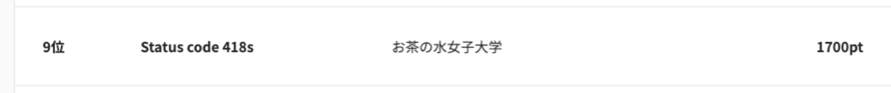

<!DOCTYPE HTML>
<html lang="en" class="sidebar-visible no-js light">
    <head>
        <!-- Book generated using mdBook -->
        <meta charset="UTF-8">
        <title>study-note</title>
        
        <meta name="robots" content="noindex" />
        

        <meta content="text/html; charset=utf-8" http-equiv="Content-Type">
        <meta name="description" content="">
        <meta name="viewport" content="width=device-width, initial-scale=1">
        <meta name="theme-color" content="#ffffff" />

        <link rel="shortcut icon" href="favicon.png">
        <link rel="stylesheet" href="css/variables.css">
        <link rel="stylesheet" href="css/general.css">
        <link rel="stylesheet" href="css/chrome.css">
        <link rel="stylesheet" href="css/print.css" media="print">

        <!-- Fonts -->
        <link rel="stylesheet" href="FontAwesome/css/font-awesome.css">
        <link href="https://fonts.googleapis.com/css?family=Open+Sans:300italic,400italic,600italic,700italic,800italic,400,300,600,700,800" rel="stylesheet" type="text/css">
        <link href="https://fonts.googleapis.com/css?family=Source+Code+Pro:500" rel="stylesheet" type="text/css">

        <!-- Highlight.js Stylesheets -->
        <link rel="stylesheet" href="highlight.css">
        <link rel="stylesheet" href="tomorrow-night.css">
        <link rel="stylesheet" href="ayu-highlight.css">

        <!-- Custom theme stylesheets -->
        

        
    </head>
    <body>
        <!-- Provide site root to javascript -->
        <script type="text/javascript">
            var path_to_root = "";
            var default_theme = window.matchMedia("(prefers-color-scheme: dark)").matches ? "light" : "light";
        </script>

        <!-- Work around some values being stored in localStorage wrapped in quotes -->
        <script type="text/javascript">
            try {
                var theme = localStorage.getItem('mdbook-theme');
                var sidebar = localStorage.getItem('mdbook-sidebar');

                if (theme.startsWith('"') && theme.endsWith('"')) {
                    localStorage.setItem('mdbook-theme', theme.slice(1, theme.length - 1));
                }

                if (sidebar.startsWith('"') && sidebar.endsWith('"')) {
                    localStorage.setItem('mdbook-sidebar', sidebar.slice(1, sidebar.length - 1));
                }
            } catch (e) { }
        </script>

        <!-- Set the theme before any content is loaded, prevents flash -->
        <script type="text/javascript">
            var theme;
            try { theme = localStorage.getItem('mdbook-theme'); } catch(e) { }
            if (theme === null || theme === undefined) { theme = default_theme; }
            var html = document.querySelector('html');
            html.classList.remove('no-js')
            html.classList.remove('light')
            html.classList.add(theme);
            html.classList.add('js');
        </script>

        <!-- Hide / unhide sidebar before it is displayed -->
        <script type="text/javascript">
            var html = document.querySelector('html');
            var sidebar = 'hidden';
            if (document.body.clientWidth >= 1080) {
                try { sidebar = localStorage.getItem('mdbook-sidebar'); } catch(e) { }
                sidebar = sidebar || 'visible';
            }
            html.classList.remove('sidebar-visible');
            html.classList.add("sidebar-" + sidebar);
        </script>

        <nav id="sidebar" class="sidebar" aria-label="Table of contents">
            <div class="sidebar-scrollbox">
                <ol class="chapter"><li class="chapter-item expanded "><a href="index.html"><strong aria-hidden="true">1.</strong> これは何？</a></li><li class="chapter-item expanded "><a href="result.html"><strong aria-hidden="true">2.</strong> 結果</a></li><li class="chapter-item expanded "><a href="learn-schedule.html"><strong aria-hidden="true">3.</strong> 勉強会のスケジュール</a></li><li class="chapter-item expanded "><a href="kakomon/summary.html"><strong aria-hidden="true">4.</strong> 過去問勉強会</a></li><li><ol class="section"><li class="chapter-item expanded "><a href="kakomon/2019-honsen/summary.html"><strong aria-hidden="true">4.1.</strong> 2019-本選-</a></li><li><ol class="section"><li class="chapter-item expanded "><a href="kakomon/2019-honsen/container.html"><strong aria-hidden="true">4.1.1.</strong> コンテナ問題</a></li><li class="chapter-item expanded "><a href="kakomon/2019-honsen/ipv6_0.html"><strong aria-hidden="true">4.1.2.</strong> IPv6問題</a></li><li class="chapter-item expanded "><a href="kakomon/2019-honsen/web0.html"><strong aria-hidden="true">4.1.3.</strong> Web問題</a></li></ol></li><li class="chapter-item expanded "><a href="kakomon/2019-yosen1/summary.html"><strong aria-hidden="true">4.2.</strong> 2019-1次予選-</a></li><li><ol class="section"><li class="chapter-item expanded "><a href="kakomon/2019-yosen1/routing0.html"><strong aria-hidden="true">4.2.1.</strong> ルーティング問題</a></li><li class="chapter-item expanded "><a href="kakomon/2019-yosen1/web0.html"><strong aria-hidden="true">4.2.2.</strong> Web問題</a></li></ol></li><li class="chapter-item expanded "><a href="kakomon/2019-yosen2/summary.html"><strong aria-hidden="true">4.3.</strong> 2019-2次予選-</a></li><li><ol class="section"><li class="chapter-item expanded "><a href="kakomon/2019-yosen2/container.html"><strong aria-hidden="true">4.3.1.</strong> コンテナ問題</a></li><li class="chapter-item expanded "><a href="kakomon/2019-yosen2/db0.html"><strong aria-hidden="true">4.3.2.</strong> DB問題</a></li><li class="chapter-item expanded "><a href="kakomon/2019-yosen2/ipv6_0.html"><strong aria-hidden="true">4.3.3.</strong> IPv6問題</a></li><li class="chapter-item expanded "><a href="kakomon/2019-yosen2/web0.html"><strong aria-hidden="true">4.3.4.</strong> Web問題</a></li></ol></li><li class="chapter-item expanded "><a href="kakomon/2020-honsen/summary.html"><strong aria-hidden="true">4.4.</strong> 2020-本選-</a></li><li><ol class="section"><li class="chapter-item expanded "><a href="kakomon/2020-honsen/container3.html"><strong aria-hidden="true">4.4.1.</strong> コンテナ問題</a></li><li class="chapter-item expanded "><a href="kakomon/2020-honsen/dns0.html"><strong aria-hidden="true">4.4.2.</strong> DNS問題(1)</a></li><li class="chapter-item expanded "><a href="kakomon/2020-honsen/dns2.html"><strong aria-hidden="true">4.4.3.</strong> DNS問題(2)</a></li><li class="chapter-item expanded "><a href="kakomon/2020-honsen/k8s1.html"><strong aria-hidden="true">4.4.4.</strong> k8s問題</a></li><li class="chapter-item expanded "><a href="kakomon/2020-honsen/program0.html"><strong aria-hidden="true">4.4.5.</strong> プログラム問題(1)</a></li><li class="chapter-item expanded "><a href="kakomon/2020-honsen/program1.html"><strong aria-hidden="true">4.4.6.</strong> プログラム問題(2)</a></li><li class="chapter-item expanded "><a href="kakomon/2020-honsen/routing0.html"><strong aria-hidden="true">4.4.7.</strong> ルーティング問題</a></li><li class="chapter-item expanded "><a href="kakomon/2020-honsen/tunnel0.html"><strong aria-hidden="true">4.4.8.</strong> トンネル問題</a></li><li class="chapter-item expanded "><a href="kakomon/2020-honsen/web0.html"><strong aria-hidden="true">4.4.9.</strong> Web問題</a></li></ol></li><li class="chapter-item expanded "><a href="kakomon/2020-yosen/summary.html"><strong aria-hidden="true">4.5.</strong> 2020-予選-</a></li><li><ol class="section"><li class="chapter-item expanded "><a href="kakomon/2020-yosen/container1.html"><strong aria-hidden="true">4.5.1.</strong> コンテナ問題(1)</a></li><li class="chapter-item expanded "><a href="kakomon/2020-yosen/container2.html"><strong aria-hidden="true">4.5.2.</strong> コンテナ問題(2)</a></li><li class="chapter-item expanded "><a href="kakomon/2020-yosen/db0.html"><strong aria-hidden="true">4.5.3.</strong> DB問題</a></li><li class="chapter-item expanded "><a href="kakomon/2020-yosen/programming0.html"><strong aria-hidden="true">4.5.4.</strong> プログラム問題</a></li><li class="chapter-item expanded "><a href="kakomon/2020-yosen/routing0.html"><strong aria-hidden="true">4.5.5.</strong> ルーティング問題(1)</a></li><li class="chapter-item expanded "><a href="kakomon/2020-yosen/routing1.html"><strong aria-hidden="true">4.5.6.</strong> ルーティング問題(2)</a></li><li class="chapter-item expanded "><a href="kakomon/2020-yosen/routing3.html"><strong aria-hidden="true">4.5.7.</strong> ルーティング問題(3)</a></li><li class="chapter-item expanded "><a href="kakomon/2020-yosen/web01.html"><strong aria-hidden="true">4.5.8.</strong> Web問題</a></li></ol></li></ol></li><li class="chapter-item expanded "><a href="docker/summary.html"><strong aria-hidden="true">5.</strong> docker</a></li><li><ol class="section"><li class="chapter-item expanded "><a href="docker/learn.html"><strong aria-hidden="true">5.1.</strong> learn</a></li><li class="chapter-item expanded "><a href="docker/hands-on.html"><strong aria-hidden="true">5.2.</strong> hands-on</a></li></ol></li></ol>
            </div>
            <div id="sidebar-resize-handle" class="sidebar-resize-handle"></div>
        </nav>

        <div id="page-wrapper" class="page-wrapper">

            <div class="page">
                
                <div id="menu-bar-hover-placeholder"></div>
                <div id="menu-bar" class="menu-bar sticky bordered">
                    <div class="left-buttons">
                        <button id="sidebar-toggle" class="icon-button" type="button" title="Toggle Table of Contents" aria-label="Toggle Table of Contents" aria-controls="sidebar">
                            <i class="fa fa-bars"></i>
                        </button>
                        <button id="theme-toggle" class="icon-button" type="button" title="Change theme" aria-label="Change theme" aria-haspopup="true" aria-expanded="false" aria-controls="theme-list">
                            <i class="fa fa-paint-brush"></i>
                        </button>
                        <ul id="theme-list" class="theme-popup" aria-label="Themes" role="menu">
                            <li role="none"><button role="menuitem" class="theme" id="light">Light (default)</button></li>
                            <li role="none"><button role="menuitem" class="theme" id="rust">Rust</button></li>
                            <li role="none"><button role="menuitem" class="theme" id="coal">Coal</button></li>
                            <li role="none"><button role="menuitem" class="theme" id="navy">Navy</button></li>
                            <li role="none"><button role="menuitem" class="theme" id="ayu">Ayu</button></li>
                        </ul>
                        
                    </div>

                    <h1 class="menu-title">study-note</h1>

                    <div class="right-buttons">
                        <a href="print.html" title="Print this book" aria-label="Print this book">
                            <i id="print-button" class="fa fa-print"></i>
                        </a>
                        
                    </div>
                </div>

                

                <!-- Apply ARIA attributes after the sidebar and the sidebar toggle button are added to the DOM -->
                <script type="text/javascript">
                    document.getElementById('sidebar-toggle').setAttribute('aria-expanded', sidebar === 'visible');
                    document.getElementById('sidebar').setAttribute('aria-hidden', sidebar !== 'visible');
                    Array.from(document.querySelectorAll('#sidebar a')).forEach(function(link) {
                        link.setAttribute('tabIndex', sidebar === 'visible' ? 0 : -1);
                    });
                </script>

                <div id="content" class="content">
                    <main>
                        <h1><a class="header" href="#これは何" id="これは何">これは何？</a></h1>
<p>ICTSC2021 夏の陣のためにお茶大生5人で勉強した時の記録です。</p>
<h2><a class="header" href="#注意事項" id="注意事項">注意事項</a></h2>
<ul>
<li>このサイトで紹介している問題は、<a href="https://blog.icttoracon.net/">ICTSC tech blog</a> から参照しており、私たちや弊サイトに著作権はありません。</li>
<li>このサイトの内容を読んでバカにする/誹謗中傷等のことはやめてください。</li>
<li>このサイトの内容の正当性は保証していません。参考にし何か問題が起きたとしても自己責任でお願いします。</li>
<li>一部未完成のページが存在します。ご了承ください。</li>
<li>著作権等で問題がありましたら、<a href="https://twitter.com/_hunachi">Hunachi</a>のDMにまでご連絡していただけますと幸いです。</li>
</ul>
<h2><a class="header" href="#この記事の元になっているリポジトリ" id="この記事の元になっているリポジトリ">この記事の元になっているリポジトリ</a></h2>
<p><a href="https://github.com/Hunachi/ictsc-418">https://github.com/Hunachi/ictsc-418</a></p>
<h2><a class="header" href="#参加チーム名" id="参加チーム名">参加チーム名</a></h2>
<p>Status code 418s</p>
<h2><a class="header" href="#チームメンバーアルファベット順" id="チームメンバーアルファベット順">チームメンバー（アルファベット順）</a></h2>
<ul>
<li>Hunachi <a href="https://twitter.com/_hunachi">Twitter</a>, <a href="https://github.com/Hunachi">GitHub</a>
<ul>
<li>主な担当: 雑多なやつ（Program，Linux，データベース）</li>
</ul>
</li>
<li><a href="https://github.com/maimai-y">maimai-y</a>
<ul>
<li>主な担当: Web系（Web，FTP）</li>
</ul>
</li>
<li><a href="https://github.com/momom-i">momom-i</a>
<ul>
<li>主な担当: DNS系（DNS，IPv4,v6，メール）</li>
</ul>
</li>
<li><a href="https://github.com/nonnonno">nonnonno</a>
<ul>
<li>主な担当: ネットワーク系（ルーティング，Tunnel）</li>
</ul>
</li>
<li><a href="https://twitter.com/lnamikol">とり</a>
<ul>
<li>主な担当: Container系（LoadBalancer，k8s，Container）</li>
</ul>
</li>
</ul>
<h2><a class="header" href="#何か問題があった場合の連絡先" id="何か問題があった場合の連絡先">何か問題があった場合の連絡先</a></h2>
<p><a href="https://twitter.com/_hunachi">Hunachi</a></p>
<h1><a class="header" href="#本番の結果" id="本番の結果">本番の結果！！</a></h1>
<h2><a class="header" href="#順位" id="順位">順位</a></h2>
<p>9位でした🎉
</p>
<h2><a class="header" href="#感想ブログ" id="感想ブログ">感想ブログ</a></h2>
<ul>
<li><a href="https://note.com/hunachi/n/n50e4352c113b">ICTSC2021 夏の陣に参加した by Hunachi</a></li>
<li><a href="https://torichan.hatenadiary.jp/entry/2021/08/29/231616">ICTSC2021夏の陣に参加した by とり</a></li>
</ul>
<h1><a class="header" href="#ictsc2021に向けた勉強会スケジュール" id="ictsc2021に向けた勉強会スケジュール">ICTSC2021に向けた勉強会スケジュール</a></h1>
<p>書いた人:<a href="https://twitter.com/_hunachi">Hunachi</a></p>
<h2><a class="header" href="#第1回勉強会" id="第1回勉強会">＊第1回勉強会＊</a></h2>
<ul>
<li>開催日時：6/21 (月)  21:30~23:00</li>
<li>内容：dockerについて調べて触ってみる:whale:（数回同じ内容の可能性あり）</li>
<li>詳しい学習内容：<a href="./docker/summary.html">Docker勉強会</a>の第一回</li>
<li>その他：任意参加</li>
</ul>
<h2><a class="header" href="#第2回勉強会" id="第2回勉強会">＊第2回勉強会＊</a></h2>
<ul>
<li>開催日時：7/5 (月)  21:30~23:00</li>
<li>内容：予選の過去問を見ながら、ルーティング（ネットワーク）とコンテナ（Docker）について知識をつける。</li>
<li>詳しい学習内容：<a href="./kakomon/summary.html">過去問勉強会</a>の第一回</li>
<li>その他：任意参加</li>
</ul>
<h2><a class="header" href="#第3回以降の勉強会" id="第3回以降の勉強会">＊第3回以降の勉強会＊</a></h2>
<ul>
<li>開催日時：毎週月曜日  21:30~23:00</li>
<li>内容：それぞれが解いてきた過去問についてしゃべってもらいます！</li>
<li>宿題：自分の担当分野の過去問1問以上を解く。問題のサイトの解説より詳しい解説を書くようにする。</li>
<li>その他：任意参加</li>
</ul>
<h1><a class="header" href="#過去問勉強会" id="過去問勉強会">過去問勉強会</a></h1>
<h2><a class="header" href="#第一回" id="第一回">第一回</a></h2>
<h3><a class="header" href="#内容" id="内容">内容</a></h3>
<ul>
<li>本番に向けて、問題を解く方法について考える&amp;見ていく
<ul>
<li>例：<a href="kakomon/./kakomon/routing0.html">networkが作成できない？</a></li>
</ul>
</li>
<li>過去問を見ていく
<ul>
<li>hostnameで繋がらない<a href="kakomon/./kakomon/container1.html">hostnameでつながらない！！</a></li>
</ul>
</li>
</ul>
<h2><a class="header" href="#第二回以降" id="第二回以降">第二回以降</a></h2>
<ul>
<li>解いてきた過去問について解説する。</li>
</ul>
<p>参照した問題・解説のサイト: <a href="https://blog.icttoracon.net/2020/03/01/">https://blog.icttoracon.net/2020/03/01/</a></p>
<h1><a class="header" href="#生き返れmariadb" id="生き返れmariadb">生き返れMariaDB</a></h1>
<p>解いた人:<a href="https://twitter.com/lnamikol">とり</a></p>
<p>参照した問題・解説のサイト:<a href="https://blog.icttoracon.net/2020/03/01/%E7%94%9F%E3%81%8D%E8%BF%94%E3%82%8Cmariadb/">生き返れMariaDB</a></p>
<h2><a class="header" href="#使用環境ツール" id="使用環境ツール">使用環境・ツール</a></h2>
<ul>
<li>docker</li>
<li>MariaDB</li>
</ul>
<h2><a class="header" href="#問題文" id="問題文">問題文</a></h2>
<ul>
<li>MariaDBのコンテナがすぐに落ちる</li>
<li>VM上でdocker ps -aをするとmariaDBコンテナが1つ存在している</li>
<li>VM上でdocker start mariaDB→docker exec -it mariaDB bashをしても落ちて開けない</li>
</ul>
<h2><a class="header" href="#理想の終了状態" id="理想の終了状態">理想の終了状態</a></h2>
<ul>
<li>コンテナが継続して起動している状態である</li>
<li>docker exec -it mariaDB bashでコンテナに入ることができ、入った際にMariaDBのDBのictsc_incのusersテーブルを見たとき</li>
</ul>
<pre><code>+----+------------+-----------+------+-------+
| ID | First_Name | Last_Name | Age  | Sex   |
+----+------------+-----------+------+-------+
|  1 | Tarou      | Yamada    |   23 | MAN   |
|  2 | Emi        | Uchiyama  |   23 | WOMAN |
|  3 | Ryo        | Sato      |   25 | MAN   |
|  4 | Yuki       | Tayama    |   22 | WOMAN |
|  5 | Yuto       | Takahashi |   21 | MAN   |
+----+------------+-----------+------+-------+
</code></pre>
<ul>
<li>社内システムがDBを参照出来るよう、3306番ポートが開いている。</li>
</ul>
<h2><a class="header" href="#配点" id="配点">配点</a></h2>
<ul>
<li>このコンテナが不安定になっている原因を明確な証拠をもとに正しく特定できている(60%)</li>
<li>コンテナが継続動作するように復旧できている(25%)</li>
<li>当該コンテナ上で問題文通りのレコードを参照できる(15%)</li>
</ul>
<hr />
<h2><a class="header" href="#考えられる検証修正手順" id="考えられる検証修正手順">考えられる検証、修正手順</a></h2>
<p>なんとなく、定期的に落ちるならメモリ不足かなと思った</p>
<h3><a class="header" href="#バグの原因を特定する案" id="バグの原因を特定する案">バグの原因を特定する案</a></h3>
<ul>
<li>
<p>ログを確認する</p>
<ul>
<li><code>docker logs</code>でログ情報を確認する(確認できるのかな)</li>
<li><code>docker mysql exited with code 137</code> こんな感じで出ていたらmysqlが落ちていることがわかる
<ul>
<li>mysqlじゃないけど</li>
</ul>
</li>
</ul>
</li>
<li>
<p><code>$ docker stats</code> してみる</p>
</li>
</ul>
<p>こんな流れでメモリ不足が出る</p>
<ol>
<li>dockerでメモリを過剰に使用</li>
<li>mysqlのdockerがメモリ不足で落ちる</li>
<li>ホストのoom-killerも動き、何故かmysqlが狙われてkillされる</li>
</ol>
<h3><a class="header" href="#メモリの割り当て" id="メモリの割り当て">メモリの割り当て</a></h3>
<pre><code>docker-machine inspect
</code></pre>
<p>以下のコマンドでメモリの割り当てをする</p>
<pre><code>docker run -m 1024m hoge /bin/bash
</code></pre>
<p>https://qiita.com/niisan-tokyo/items/2d7d21aeb4e25f7a7bbe</p>
<h3><a class="header" href="#oom-killerのkillを阻止する" id="oom-killerのkillを阻止する">oom-killerのkillを阻止する</a></h3>
<p>こんな感じでkillの確認ができる</p>
<pre><code>$ sudo cat /var/log/messages | grep Killed
Oct  1 11:11:54 ip-xx-xx-xx-xx kernel: [1983378.957901] Killed process 5789 (ruby) total-vm:4957320kB, anon-rss:2717004kB, file-rss:0kB
</code></pre>
<p>危なそうなプロセスの確認</p>
<pre><code>$ dstat --top-oom
--out-of-memory---
    kill score
mysqld        484
mysqld        484
mysqld        484
</code></pre>
<p>修正は<code>/proc/PID/oom_adj</code>に（優先度低）-16から+15（優先度高）の値を設定することができる</p>
<hr />
<h2><a class="header" href="#解説" id="解説">解説</a></h2>
<h2><a class="header" href="#原因の特定方法" id="原因の特定方法">原因の特定方法</a></h2>
<ol>
<li>docker inspectコマンドを使用する<br />
docker inspectコマンドは、dockerコンテナの設定情報を参照することが出来るコマンドです。これを見ると、コンテナがどのような設定で動作しているのかが分かります。しかし、この設定データの量は膨大で、全てを見るには時間がかかってしまいます。 例えばですが、この問題の原因のメモリについて調べたい際、など、grepコマンドなどを使い検索すると、</li>
</ol>
<pre><code>$ docker inspect mariaDB | grep Memory
&quot;Memory&quot;: 4194304,
           &quot;KernelMemory&quot;: 0,
           &quot;MemoryReservation&quot;: 0,
           &quot;MemorySwap&quot;: -1,
           &quot;MemorySwappiness&quot;: null,
</code></pre>
<p>といった値が出てきます。ここに出た&quot;Memory&quot;: 4194304という値はバイト表記でして、MBに換算すると約4MBということが分かります。設定されていた値と同じですね。</p>
<ol start="2">
<li>docker statsコマンドを使用する<br />
docker statsコマンドは、コンテナのリソース使用状況を表示するコマンドです。Linuxのtopコマンドに似たような機能を持っています。 ここで、コンテナのリソース使用状況を知ることが出来ます。</li>
</ol>
<pre><code>$ docker stats
CONTAINER ID        NAME                CPU %               MEM USAGE / LIMIT   MEM %               NET I/O             BLOCK I/O           PIDS
eb99786557f7        mariaDB             8.44%               3.664MiB / 4MiB     91.60%              656B / 0B           1.89GB / 0B         3
</code></pre>
<p>こちらでもMEM USAGE / LIMITの欄で3.664MiB / 4MiBと見えており、メモリが4MB制限であること、そして使用中のメモリが逼迫している状態であることから不安定になる原因であることが推定出来ます。</p>
<h2><a class="header" href="#解決手順" id="解決手順">解決手順</a></h2>
<p>2パターン。</p>
<ol>
<li>docker updateコマンドを使用しリソース設定を更新する 
docker updateコマンドはコンテナの設定を更新するためのコマンドです。 コンテナの設定をコンテナを作り直すことなく変更することが可能です。 例として、問題のコンテナのメモリ制限を4MBから1GBへと緩和します。例えば、 <code>docker update --memory 1G mariaDB</code>
このコマンドを実行する事により、メモリ上限を4MBから1GBに変更することが出来ます。 </li>
</ol>
<pre><code>$ docker inspect mariaDB | grep Memory
&quot;Memory&quot;: 1073741824,
&quot;KernelMemory&quot;: 0,
&quot;MemoryReservation&quot;: 0,
&quot;MemorySwap&quot;: -1,
&quot;MemorySwappiness&quot;: null,
</code></pre>
<p>となり、Memory&quot;: 1073741824(byte)は約1GBですので、1GBへと緩和されたことが分かります</p>
<ol start="2">
<li>同じ設定のコンテナを作り直す</li>
</ol>
<p>解法の一つとして、同じ設定のMariaDBコンテナを再作成する方法があります。 <code>docker run -v mariaVOL:/var/lib/mysql -d --name mariaDB -e MYSQL_ROOT_PASSWORD=MariaPass -p 3306:3306 -d mariadb:latest</code> などで、メモリ制限を無くしたコンテナを作成します。 ただし、MariaDBのデータベースはボリュームmariaVOLにマウントされているという点に注意しなければなりません。mariaVOLへコンテナをマウントしないと、コンテナに入ってもデータベースを参照することが出来なくなってしまいます。</p>
<p>上記の2つの設定のどちらかを適用し、</p>
<pre><code>$ docker exec -it mariaDB bash
$ mysql -u root -p ${MYSQL_ROOT_PASSWORD}

&gt; use ictsc_inc;
&gt; select * from users;
// selectの結果が表示される
</code></pre>
<h3><a class="header" href="#コメント" id="コメント">コメント</a></h3>
<p><code>$ docker stats</code>使う時は、一秒ずつ表示が増えてウザいので、<code>$ docker stats --no-stream</code>とするといいらしい。</p>
<h1><a class="header" href="#v4v6-移行が終わらない" id="v4v6-移行が終わらない">v4v6 移行が終わらない</a></h1>
<p>解いた人:<a href="https://github.com/momom-i">momom-i</a></p>
<p>参照した問題・解説のサイト:<a href="https://blog.icttoracon.net/2020/03/01/v4v6%E7%A7%BB%E8%A1%8C%E3%81%8C%E7%B5%82%E3%82%8F%E3%82%89%E3%81%AA%E3%81%84/">v4v6 移行が終わらない</a></p>
<h1><a class="header" href="#問題" id="問題">問題</a></h1>
<p>おお久しぶり！！</p>
<p>君が居ないあいだに社内ネットワークを IPv6 only にしておいたんだ。外向きの IP アドレスは v4 しかないけどルーターで NAT64 をしているからインターネットにはつながるようになっているよ。</p>
<p>ただ名前解決ができないのと社内ネットワークにある Web に繋がらなくなっちゃったんだ、これ以上は手が付かないから君がなんとかしてくれないかな？</p>
<h3><a class="header" href="#初期状態" id="初期状態">初期状態</a></h3>
<ul>
<li><code>ubuntu-1</code> から <code>curl https://blog.icttoracon.net/</code> をしてもつながらない</li>
<li><code>ubuntu-1</code> から <code>curl http://[2403:bd80:c000:900::1]/</code> をしてもつながらない</li>
</ul>
<h3><a class="header" href="#終了状態" id="終了状態">終了状態</a></h3>
<ul>
<li><code>ubuntu-1</code> から <code>curl https://blog.icttoracon.net/</code> をするとステータスコード 200 のレスポンスが返ってくる。</li>
<li><code>ubuntu-1</code> から <code>curl http://[2403:bd80:c000:900::1]/</code> をするとステータスコード 200 のレスポンスが返ってくる。</li>
</ul>
<h3><a class="header" href="#配点-1" id="配点-1">配点</a></h3>
<ul>
<li><code>ubuntu-1</code> から <code>curl https://blog.icttoracon.net/</code> をするとステータスコード 200 のレスポンスが返ってくる
80%</li>
<li><code>ubuntu-1</code> から <code>curl http://[2403:bd80:c000:900::1]/</code> をするとステータスコード 200 のレスポンスが返ってくる。
20%</li>
</ul>
<h3><a class="header" href="#問題文でされた操作" id="問題文でされた操作">問題文でされた操作</a></h3>
<ol>
<li>社内ネットワークを IPv6 only にした</li>
<li>外向き IP アドレスは v4 しかないが、ルーターで NAT64 をしている</li>
</ol>
<hr />
<h2><a class="header" href="#httpsblogicttoraconnetが返らない原因" id="httpsblogicttoraconnetが返らない原因"><code>https://blog.icttoracon.net/</code>が返らない原因</a></h2>
<h4><a class="header" href="#プリフィックスのある-v6-アドレスを-dns-で生成されていない" id="プリフィックスのある-v6-アドレスを-dns-で生成されていない">プリフィックスのある v6 アドレスを DNS で生成されていない</a></h4>
<p>まずは、DNS で IPv6 アドレスを問い合わせてみる</p>
<pre><code class="language-shell=">dig -t AAAA blog.icttoracon.net +short
</code></pre>
<blockquote>
<p>NAT64、DNS64 そして通信に介在するネットワーク機器は同じ IPv4-IPv6 変換アドレス用のプリフィクスを使用するよう設定されている必要があります。(<a href="https://www.nic.ad.jp/ja/newsletter/No64/0800.html">参照</a>)</p>
</blockquote>
<p>今回は外向き IP アドレスは v4 のみなのでプリフィックスのある v6 アドレスが返されないといけない。</p>
<h2><a class="header" href="#https2403bd80c0009001が返らない原因" id="https2403bd80c0009001が返らない原因"><code>https://[2403:bd80:c000:900::1]/</code>が返らない原因</a></h2>
<p><code>ping6 2403:bd80:c000:900::1</code>をしてみる。もし疎通性がなければ、パケットフィルタリングが問題。もし疎通性があれば、前回と同様で web サーバが IPv6 で受け付けてないとか nginx だったら config の不備が問題。</p>
<h2><a class="header" href="#考えられる解決方法" id="考えられる解決方法">考えられる解決方法</a></h2>
<h4><a class="header" href="#dns64-に対応させる" id="dns64-に対応させる">DNS64 に対応させる</a></h4>
<p>BIND の場合、BIND のバージョンが 9.8 以降か確認し、/etc/bind/named.conf に以下のような記述 DNS64 の設定があるか確認する</p>
<pre><code class="language-yaml=">options {
    # IPv4は32bitなので96bit付け足してIPv6に対応させる
    dns64 64:ff9b::/96 {
    #     クライアントを指定できるが、anyで良い気がする
        clients { any; };
    };
};
</code></pre>
<p><code>service named restart</code>をして再起動</p>
<p>UNBOUND の場合は、/etc/unbound/unbound.conf に</p>
<pre><code class="language-yaml=">server:
    # dns64をつければ後の文字はなんでも良いっぽい
    module-config: &quot;dns64 validator iterator&quot;
    dns64-prefix: 64:ff9b::/96
</code></pre>
<p>を設定して、<code>unbound -c unbound.conf</code>で設定を読み込み</p>
<p>※参照サイト: <br>1.<a href="https://www.oreilly.com/library/view/dns-and-bind/9781449308025/ch04.html">オライリー DNS64 ページ</a><br>2.<a href="https://github.com/NLnetLabs/unbound/blob/master/doc/README.DNS64">unbound 公式 DNS64 ドキュメント</a></p>
<h4><a class="header" href="#nginx-の-config-を修正" id="nginx-の-config-を修正">Nginx の config を修正</a></h4>
<p>/etc/nginx/nginx.conf の<code>listen 80;</code>の下に以下のような記述があるか確認。</p>
<pre><code class="language-yaml="># IPv6のポート80でリッスンするよ〜という記述
listen [::]:80;
</code></pre>
<h4><a class="header" href="#パケットフィルタリング" id="パケットフィルタリング">パケットフィルタリング</a></h4>
<p>ip6tables という IPv6 の iptables コマンドで確認ができるらしい！(<a href="https://linux.die.net/man/8/ip6tables">参照</a>)</p>
<pre><code class="language-shell=">ip6tables -L
</code></pre>
<p>アプリケーションに必要なポートを web サーバ側で許可する</p>
<pre><code class="language-shell="># TCP80番ポートのアクセス許可
ip6tables -A INPUT -p tcp --dport 80 -j ACCEPT
</code></pre>
<h3><a class="header" href="#参考" id="参考">※参考※</a></h3>
<ul>
<li>NAT64:IPv6 ホストが IPv4 サーバーと通信することができるようにする技術(<a href="https://www.nic.ad.jp/ja/newsletter/No64/0800.html">わかりやすい仕組み解説</a>)</li>
</ul>
<hr />
<h2><a class="header" href="#解説-1" id="解説-1">解説</a></h2>
<p>unbound と Apache2 の設定が適切になされていないことで起こる問題です。</p>
<h3><a class="header" href="#unbound" id="unbound">unbound</a></h3>
<p><code>dns64-prefix</code> は <code>ubuntu-router</code> の <code>JOOL</code> の設定を参照する必要があります。これを確認すると <code>dns64-prefix</code> が <code>64:ff9b::/96</code> で有ることがわかります。(<code>jool global display</code>コマンドの<code>pool6</code>で prefix が確認できそう(<a href="https://www.jool.mx/en/usr-flags-global.html">参照</a>))</p>
<p>また、<code>blog.icttoracon.net</code> ではデュアルスタック方式を採用しているおり <code>dns64-synthall</code> が no に設定されていると、<code>blog.icttoracon.net</code> にもともと設定されている IPv6 アドレスが AAAA レコードとして名前解決されるため、 <code>ubuntu-1</code> からアクセスすることができなくなってしまいます。(元から AAAA レコードに何かアドレスが入っていたっぽいな。dns64-synthall のオンオフによる挙動は<a href="https://blog.nic.ad.jp/2016/794/">ここら辺</a>に載っている)</p>
<p>さらに、この <code>dns-1</code> のサーバーは <code>NAT64</code> ネットワーク内に設置されているために forward-addr が <code>8.8.8.8 </code>になっていると通信が行えません。<code>forward-addr: 64:ff9b::808:808</code> に変更する必要があります。(そうだったのか^^;;)</p>
<p>問題が発生している原因は 2 つ存在している。1 つ目は、unbound に DNS64 の設定が正しくされていない点である。これを解決するために <code>/etc/unbound/unbound.conf.d/dns.conf</code> を以下のように変更する。(<a href="https://github.com/fastly/unbound/blob/master/doc/example.conf.in">公式の example.conf 参照</a>)</p>
<pre><code class="language-yaml=">server:
# ログレベル
  verbosity: 2
#   pidfileの場所指定
  pidfile: &quot;/var/run/unbound.pid&quot;
#   ログを出すかどうか
  use-syslog: yes
#   さっき書いた通りでdns64を使用する場合はかく
  module-config: &quot;dns64 iterator&quot;
#   prefixを指定する
  dns64-prefix: 64:ff9b::/96
#   yesにするとDNS64やNAT64を通るようになる
  dns64-synthall: yes
  interface: ::0
  access-control: ::0/0 allow

forward-zone:
# `.`にすると全て転送される
  name: &quot;.&quot;
#   8.8.8.8のプレフィックス付きIPv6アドレス。
  forward-addr: 64:ff9b::808:808
</code></pre>
<p>これにより <code>https://blog.icttoracon.net/</code> にアクセスできるようになる。</p>
<p>2 つ目の原因は <code>ubuntu-router</code> の Web (Apache2) の Listen Address が適切に設定されていないことにある。これを解決するために以下の一行を config に追記する。</p>
<pre><code class="language-yaml=">Listen [::0]:80
</code></pre>
<h3><a class="header" href="#参考-1" id="参考-1">※参考※</a></h3>
<ul>
<li>NAT64:IPv6 ホストが IPv4 サーバーと通信することができるようにする技術(<a href="https://www.nic.ad.jp/ja/newsletter/No64/0800.html">わかりやすい仕組み解説</a>)</li>
<li>JOOL:Linux 向け NAT64 オープンソース(<a href="https://www.jool.mx/en/">参照</a>)</li>
</ul>
<h1><a class="header" href="#適当に俳句投稿サービス作ったらxsrf脆弱性孕んでた件" id="適当に俳句投稿サービス作ったらxsrf脆弱性孕んでた件">適当に俳句投稿サービス作ったらXSRF脆弱性孕んでた件。</a></h1>
<p>解いた人:<a href="https://github.com/maimai-y">maimai-y</a></p>
<p>参照した問題・解説のサイト:<a href="https://blog.icttoracon.net/2020/03/01/%E9%81%A9%E5%BD%93%E3%81%AB%E4%BF%B3%E5%8F%A5%E6%8A%95%E7%A8%BF%E3%82%B5%E3%83%BC%E3%83%93%E3%82%B9%E4%BD%9C%E3%81%A3%E3%81%9F%E3%82%89xsrf%E8%84%86%E5%BC%B1%E6%80%A7%E5%AD%95%E3%82%93%E3%81%A7/">適当に俳句投稿サービス作ったらXSRF脆弱性孕んでた件。</a></p>
<h2><a class="header" href="#問題文-1" id="問題文-1">問題文</a></h2>
<p>俳句投稿サービスHikerを作成した。Hikerでは、ユーザー作成後ログインして俳句を詠むことができる。詠んだ俳句は公開される。また、他のユーザーが詠んだ俳句に対してmogamigawaする機能（所謂お気に入り機能）がある。</p>
<p>ユーザーからのフィードバックで、意図しない俳句がmogamigawaされており困っているという情報が複数あった。それらのユーザーは共通して特定のWebサイトを閲覧したようである。
以上のことからHikerはXSRF脆弱性を孕んでいることが予想される。これらのユーザーはこの脆弱性を利用して、意図しない俳句をmogamigawaさせられたと考えられる。</p>
<p>任意の方法でこの脆弱性に対して対策を施してMerge Requestを建ててほしい。</p>
<h2><a class="header" href="#使用環境ツール-1" id="使用環境ツール-1">使用環境・ツール</a></h2>
<ul>
<li>サーバーサイド: Golang, Gin    // GinはGo言語の人気webフレームワーク</li>
<li>フロントエンド: multitemplate + Bootstrap4</li>
<li>データベース: MySQL + GORM</li>
<li>docker-compose</li>
</ul>
<h2><a class="header" href="#初期状態-1" id="初期状態-1">初期状態</a></h2>
<ul>
<li>各チームのVMはHikeのステージング環境である。remoteRepositoryは削除されているので、各自でfork先urlを設定すること。
<ul>
<li>url: https://gitlab.com/ictsc2019-teamチーム番号/ictsc2019-f21-xsrf</li>
<li>urlのチーム番号部分には1,2,3,…,15のような自分のチーム番号を代入すること</li>
</ul>
</li>
<li>既に<code>ictsc</code>というユーザーが俳句を投稿している</li>
<li>Hikeで各自アカウントを新規作成後、ログインし https://hackmd.io/tRks_vT-QjasH9hUsEJ-BA?view にアクセスすると<code>ictsc</code>というユーザーの俳句をmogamigawaしてしまう</li>
<li>ソースコードはGitLabで管理されており、問題解答開始時にチームリーダーにOWNER権限のinviteのメールが送信される</li>
<li>Hikerが動いているときは、http://192.168.15.1:8080 でサービスにアクセスできる</li>
</ul>
<h2><a class="header" href="#終了状態-1" id="終了状態-1">終了状態</a></h2>
<ul>
<li>適切なXSRF対策がされている</li>
<li>初期状態に示されているURL上の検証コードはあくまで一例であることに注意すること</li>
<li>修正されたソースコードのMerge RequestをGitLab上で作成する   // Merge RequestはGitHubでいうPull Request</li>
<li>スコアサーバに、Merge RequestのURLを提出する</li>
</ul>
<hr />
<h2><a class="header" href="#解決方法" id="解決方法">解決方法</a></h2>
<h3><a class="header" href="#csrfとは" id="csrfとは">CSRFとは</a></h3>
<p>CSRF ... Cross-Site Request Forgeries／クロスサイト・リクエスト・フォージェリ（偽サイトを使ってリクエストを偽造する）</p>
<p>https://medium-company.com/%E3%82%AF%E3%83%AD%E3%82%B9%E3%82%B5%E3%82%A4%E3%83%88%E3%83%AA%E3%82%AF%E3%82%A8%E3%82%B9%E3%83%88%E3%83%95%E3%82%A9%E3%83%BC%E3%82%B8%E3%82%A7%E3%83%AA/</p>
<p>他の参考サイト：</p>
<p>https://www.ipa.go.jp/security/vuln/websecurity-HTML-1_6.html</p>
<p>https://qiita.com/wanko5296/items/142b5b82485b0196a2da#csrf%E3%81%A8%E3%81%AF%E4%BD%95%E3%81%8B</p>
<h3><a class="header" href="#解決の流れ" id="解決の流れ">解決の流れ</a></h3>
<blockquote>
<p>CSRFへの代表的な対策</p>
<p><strong>Formページ返却時のトークン付与</strong>
今回の例でいうと、はじめに掲示板への書き込み画面を表示する際にサーバがクライアントに対して特定の文字列（トークン）を設定します。実際に書き込みのリクエストがあった際にサーバーが**「この人に送ったトークンと同じトークンがリクエストに入ってる？」**と確認することで、攻撃者からの不正なリクエストを防ぐことができます。これは、攻撃者は利用者に送信したトークンの値を知らないためです。</p>
</blockquote>
<ol>
<li>mogamigawaする画面を要求されたら、暗号論的擬似乱数生成器を用いて機密情報を作るようにする</li>
<li>機密情報も入れてmogamigawaする画面を返すようにする</li>
<li>mogamigawaするときに、hiddenタグで機密情報も送るようにする</li>
<li>セクションIDと機密情報があっているか確認するようにする</li>
</ol>
<h2><a class="header" href="#解説-2" id="解説-2">解説</a></h2>
<p>ハッカソン的なイベントでよく適当にwebサービスを作ると思います。作りますね。そんなときの<em>あるある</em>ですが、割とWebのセキュリティを考えずにデプロイして成果発表みたいなノリです。良くないですね。そんな問題でした。</p>
<p>XSRF脆弱性の対策をします。様々な手法が考えられますが、今回はWeb Application Framework(WAF)にGinを採用しているので、utrack/gin-csrfを使って対策するケースで解説します。
utrack/gin-csrfで実装する理由は、問題環境はステージング環境でありdocker-composeで管理されていることから、様々な場所で実行されることを考慮して、utrack/gin-csrfのような環境に依存しにくい実装をしたいためです。</p>
<h3><a class="header" href="#リモートリポジトリを追加する" id="リモートリポジトリを追加する">リモートリポジトリを追加する</a></h3>
<p>ステージング環境にデプロイされているソースコードのディレクトリに移動してリモートリポジトリを追加します。</p>
<pre><code>$ git remote add origin https://gitlab.com/ictsc2019-teamチーム番号/ictsc2019-f21-xsrf
</code></pre>
<p>この問題では解答にMerge Requestを建てなければいけないので、cloneしたときかこのタイミングでbranchを切ります。</p>
<pre><code>$ git checkout -b xsrf-fix
$ git push --set-upstream origin xsrf-fix   // これを書くと毎回origin xsrf-fixの部分を書かなくて良くなるっぽい
</code></pre>
<p>あとはcommit~~と徳~~を積んでMerge Requestをします。</p>
<h3><a class="header" href="#servergo-の修正" id="servergo-の修正"><code>server.go</code> の修正</a></h3>
<p>utrack/gin-csrfの<code>README.md</code>を参考に頑張ります。 // https://github.com/utrack/gin-csrf#readme
変更点は次の通りです。</p>
<h4><a class="header" href="#import部分の追記" id="import部分の追記">import部分の追記</a></h4>
<ul>
<li><code>&quot;net/http&quot;</code>を追加しました。csrfのErrorFuncで<code>http.StatusBadRequest</code>を使用するためです。</li>
<li><code>&quot;github.com/utrack/gin-csrf&quot;</code>を追加しました。gin-csrfを使います。</li>
<li><code>&quot;ictsc2019-f21-xsrf/util&quot;</code>を追加しました。csrfのSecretをランダムな文字列にする関数を<code>app/util/util.go</code>に追記して、それを使用するためです。</li>
</ul>
<pre><code>import (
    &quot;log&quot;
    &quot;net/http&quot;
    &quot;path/filepath&quot;
 
    &quot;github.com/gin-contrib/multitemplate&quot;
    &quot;github.com/gin-contrib/sessions&quot;
    &quot;github.com/gin-contrib/sessions/cookie&quot;
    &quot;github.com/gin-gonic/gin&quot;
    csrf &quot;github.com/utrack/gin-csrf&quot;
 
    &quot;ictsc2019-f21-xsrf/domain&quot;
    &quot;ictsc2019-f21-xsrf/handler&quot;
    &quot;ictsc2019-f21-xsrf/util&quot;
)
</code></pre>
<h4><a class="header" href="#func-main部分の変更" id="func-main部分の変更">func main部分の変更</a></h4>
<p>以下の記述を追加します。utrack/gin-csrfの<code>README.md</code>の通りです。</p>
<pre><code>// csrf
r.Use(csrf.Middleware(csrf.Options{
    Secret: util.RandString(10),
    ErrorFunc: func(c *gin.Context) {
        c.JSON(http.StatusBadRequest, gin.H{
            &quot;error&quot;: &quot;CSRF token mismatch&quot;,
        })
        c.Abort()
    },
}))
</code></pre>
<p>そして、mogamigawaするAPIをPOSTに変更します。</p>
<pre><code>apiRouter.POST(&quot;/mogamigawa&quot;, handler.NewMogamigawa)
</code></pre>
<p>以上が<code>server.go</code>の更新作業になります。</p>
<h3><a class="header" href="#utilgo-に追記" id="utilgo-に追記"><code>util.go</code> に追記</a></h3>
<p><code>server.go</code>で呼び出されている<code>util.RandString(n int)</code>を、<code>util.go</code>に作成します。
<code>&quot;math/rand&quot;</code>を追加でimportしてください。</p>
<pre><code>const rs2Letters = &quot;abcdefghijklmnopqrstuvwxyzABCDEFGHIJKLMNOPQRSTUVWXYZ&quot;
 
func RandString(n int) string {
    b := make([]byte, n)
    for i := range b {
        b[i] = rs2Letters[rand.Intn(len(rs2Letters))]
    }
    return string(b)
}
</code></pre>
<p>RandString(n int)を叩くことでn文字のランダムな文字列を返すことができます。これをcsrfのSecretに使います。</p>
<p>このSecretですが、文字列が固定されている解答がありました。これは第三者から推測が困難ではないかもしれないので適切ではありません。(減点はしてません)</p>
<p>RandString(n int)を叩くことでn文字のランダムな文字列を返すことができます。これをcsrfのSecretに使います。</p>
<p>このSecretですが、文字列が固定されている解答がありました。これは第三者から推測が困難ではないかもしれないので適切ではありません。(減点はしてません)</p>
<h3><a class="header" href="#xsrf対策をする" id="xsrf対策をする">XSRF対策をする</a></h3>
<p>今回は全てのFORM要素にhiddenなinputを用意して、そこにtokenを持たせ、送信させることにします。</p>
<h4><a class="header" href="#hikelinehtml-の修正" id="hikelinehtml-の修正"><code>hikeline.html</code> の修正</a></h4>
<p>17行目にhiddenなinputを追加します。</p>
<pre><code>&lt;form method=&quot;POST&quot; action=&quot;api/newhike&quot;&gt;
&lt;input type=&quot;hidden&quot; name=&quot;_csrf&quot; value=&quot;{{ .csrfToken }}&quot;&gt;
</code></pre>
<p>また、<code>hikeline.html</code>のmogamigawaのbutton部分は以下のように入れ替えます。この変更でmogamigawaのAPIをPOSTにした変更に対応し、XSRF対策ができます。</p>
<pre><code>&lt;!-- mogamigawa button --&gt;
&lt;div&gt;
  &lt;form action=&quot;/api/mogamigawa?hike_id={{ .Hike_id }}&quot; method=&quot;POST&quot;&gt;
    &lt;input type=&quot;hidden&quot; name=&quot;_csrf&quot; value=&quot;{{ $.csrfToken }}&quot;&gt;
    &lt;button type=&quot;submit&quot;&gt;
      &lt;a href=&quot;&quot;&gt;&lt;i class=&quot;fas fa-water&quot;&gt;&lt;/i&gt;&lt;/a&gt;
    &lt;/button&gt;
    &lt;style&gt;
      button {
        padding: 0, 0;
        border-style: none;
      }
 
    &lt;/style&gt;
  &lt;/form&gt;
&lt;/div&gt;
</code></pre>
<p><code>signin.html</code>と<code>signup.html</code>にもformがありますが、ここはXSRFから保護しなければならない場所ではありませんよね?</p>
<p>55%の採点を受けたチームは、この部分で<code>api/mogamigawa</code>の対策はできてるんだけど、<code>api/newhike</code>の対策がなされてない解答になっていました。</p>
<p>以上がhtmlの修正作業になります。</p>
<h4><a class="header" href="#resgoの修正" id="resgoの修正"><code>res.go</code>の修正</a></h4>
<p>htmlに<code>{{ .csrfToken }}</code>という新しいプレースホルダーを追加しました。これに対応して<code>/app/handler/res.go</code>を更新します。</p>
<p><code>&quot;github.com/utrack/gin-csrf&quot;</code>を追加でimportしてください。gin-csrfを使います。
<code>hikeline.html</code>を返す部分の<code>c.HTML(http.StatusOK, hikeline.html, gin.H{})</code>に、以下のように記述を追加します。冗長なので、全箇所の記述は省略します。</p>
<pre><code>c.HTML(http.StatusOK, hikeline.html, gin.H{
&quot;csrfToken&quot;: csrf.GetToken(c),
})
</code></pre>
<h3><a class="header" href="#merge-request" id="merge-request">Merge Request</a></h3>
<p>以上の変更をcommitしたらpushして、GitLabでMerge Requestを建てます。</p>
<p>解説は以上です。</p>
<h2><a class="header" href="#採点基準" id="採点基準">採点基準</a></h2>
<ol>
<li>適切なMerge Requestがなされている: +10%
<ul>
<li>あまりにも杜撰な解答は許されません。:angry:</li>
</ul>
</li>
<li>任意の手法でXSRF対策をしている: +90%
<ul>
<li>mogamigawaのAPIとフロントエンドにのみ修正を加えた場合は半分の +45% にしています。</li>
<li>mogamigawaのAPIに加えてXSRF対策の必要なnewhikeのAPIにも対策をした場合に +90% としました。</li>
<li>適切なXSRF対策がなされている場合にのみ点数を取れるようにしました。</li>
</ul>
</li>
</ol>
<h2><a class="header" href="#講評" id="講評">講評</a></h2>
<p>10チームが解答を提出してくれました。</p>
<p>参照した問題・解説のサイト: <a href="https://blog.icttoracon.net/2019/08/31/">https://blog.icttoracon.net/2019/08/31/</a></p>
<h1><a class="header" href="#接続が不安定になっちゃった" id="接続が不安定になっちゃった">接続が不安定になっちゃった！</a></h1>
<p>解いた人:<a href="https://github.com/nonnonno">nonnonno</a></p>
<p>参照した問題・解説のサイト:<a href="https://blog.icttoracon.net/2019/08/31/ictsc2019-%e4%b8%80%e6%ac%a1%e4%ba%88%e9%81%b8%e3%80%80%e5%95%8f%e9%a1%8c%e8%a7%a3%e8%aa%ac%ef%bc%9a%e6%8e%a5%e7%b6%9a%e3%81%8c%e4%b8%8d%e5%ae%89%e5%ae%9a%e3%81%ab%e3%81%aa%e3%81%a3%e3%81%a1%e3%82%83/">接続が不安定になっちゃった！</a></p>
<h2><a class="header" href="#使用環境ツール-2" id="使用環境ツール-2">使用環境・ツール</a></h2>
<p>何台かのサーバ </p>
<h2><a class="header" href="#問題文でされた操作バグの内容" id="問題文でされた操作バグの内容">問題文でされた操作・バグの内容</a></h2>
<p>通常用セグメント 192.168.1.0/24 と、管理用セグメント 192.168.2.0/24 を持ったネットワーク上にいくつかのサーバがある。client1をこのネットワークに追加し設定したところ、client1とclient2間の通信が不安定になってしまった(通常用セグメントを使うとclient1とclient2の接続が不安定になるということっぽい)。 管理用セグメント (192.168.2.0/24) からは正常にアクセスできるため、こちらからsshすること。</p>
<h2><a class="header" href="#理想の終了状態-1" id="理想の終了状態-1">理想の終了状態</a></h2>
<p>192.168.1.0/24 のセグメントで正常に通信が行えるようにし、今後同じ状況にならないように設定を書き換えて、原因を報告してほしい。</p>
<h2><a class="header" href="#考えられる原因とその検証修正手順" id="考えられる原因とその検証修正手順">考えられる原因とその検証・修正手順</a></h2>
<h2><a class="header" href="#解説-3" id="解説-3">解説</a></h2>
<p>本問題は、動的割当のホストと静的割当のホストのIPアドレスが重複してしまい、通信が不安定になるトラブル。<br />
この問題はVyOSの設定のservice dhcp-server global-parameters ‘ping-check false;’という項目でDHCPによるアドレス割り当ての前にアドレスの使用状況を確認する動作が無効化されていたため、静的割り当てのホストと同じアドレスがDHCPによって払い出されていた。</p>
<h3><a class="header" href="#解答例" id="解答例">解答例</a></h3>
<p><a href="https://server-network-note.net/2018/01/vyos-basic-config/">VyOS設定コマンド参考リンク</a><br />
<a href="https://www.isoroot.jp/blog/2859/">VyOSとclientの関係参考リンク(こちらにもコマンド説明あり)</a>
ルータに対して以下の操作を行う。</p>
<pre><code>configure
</code></pre>
<p>で設定モードに入る。</p>
<pre><code>delete service dhcp-server global-parameters ‘ping-check false;’

</code></pre>
<p>として、 <code>commit</code> と <code>save</code> をして完了。<br />
次に、クライアント端末に対して動的割り当ての設定を行う。</p>
<pre><code>sudo dhclient -r

sudo dhclient
</code></pre>
<p>dhclientコマンドは、DHCPプロトコルを利用し、NICにIPアドレスを設定したり、借り受けたIPアドレスの解放や、デフォルトルーターやネームサーバーの情報を確認する目的にも利用される。<br />
今回は、rオプションを使うことで現在借り受けているIPアドレスを開放し、再度DHCPクライアントとして起動してアドレスの付与を受ける。</p>
<h2><a class="header" href="#採点基準-1" id="採点基準-1">採点基準</a></h2>
<ul>
<li>正常に通信を行えるかどうか</li>
<li>原因を特定し、今後同じ状況にならないような設定にしているか</li>
</ul>
<p>クライアントのどちらか片方のアドレスをnetplanで静的に書き換えても正常に通信はできますが、問題文に今後同じ状況にならないように設定してください。と記載されているため、DHCPの設定まで直して満点。</p>
<h1><a class="header" href="#apiが飛ばないんですけど" id="apiが飛ばないんですけど">APIが飛ばないんですけど</a></h1>
<p>解いた人:<a href="https://github.com/maimai-y">maimai-y</a></p>
<p>参照した問題・解説のサイト:<a href="https://blog.icttoracon.net/2019/09/01/ictsc2019-%E4%B8%80%E6%AC%A1%E4%BA%88%E9%81%B8-%E5%95%8F%E9%A1%8C%E8%A7%A3%E8%AA%AC-api%E3%81%8C%E9%A3%9B%E3%81%B0%E3%81%AA%E3%81%84%E3%82%93%E3%81%A7%E3%81%99%E3%81%91%E3%81%A9/">APIが飛ばないんですけど…</a></p>
<h2><a class="header" href="#問題文-2" id="問題文-2">問題文</a></h2>
<p>Webアプリケーションからドメインが異なるAPIにリクエストを発行する際には、クロスオリジンについて注意する必要があります。
CORS (Cross-Origin Resource Sharing) に関する以下の問いについて、それぞれ適切な選択肢を選んでください。</p>
<h2><a class="header" href="#問１" id="問１">問１</a></h2>
<h3><a class="header" href="#問題文-3" id="問題文-3">問題文</a></h3>
<p><code>https://example.com</code> と同じOriginを選んで下さい。</p>
<ul>
<li>A. https://example.com/hoge</li>
<li>B. <a href="https://example.com:8080/">https://example.com:8080</a></li>
<li>C. <a href="https://hoge.example.com/">https://hoge.example.com</a></li>
<li>D. <a href="http://example.com/">http://example.com</a></li>
</ul>
<h3><a class="header" href="#解答" id="解答">解答</a></h3>
<blockquote>
<p><strong>オリジン Origin</strong> は、ウェブコンテンツにアクセスするために使われる URL のスキーム (プロトコル)、 ホスト (ドメイン)、 ポート によって定義されます。 スキーム、ホスト、ポートがすべて一致した場合のみ、二つのオブジェクトは同じ<strong>オリジン</strong>であると言えます。</p>
</blockquote>
<p>A</p>
<p>理由：</p>
<p>B サーバーは既定で80番ポートで HTTP コンテンツを配信するため <code>https://example.com</code> は <code>https://example.com:80</code> と同じ</p>
<p>C ホストが異なる</p>
<p>D プロトコルが異なる</p>
<h3><a class="header" href="#解説-4" id="解説-4">解説</a></h3>
<p>ポート番号、プロトコル（HTTP か HTTPS か）、ホストが一致するときのみ同一のOriginとなります。したがって <code>https://example.com/hoge</code> のみが正解です。</p>
<p>参考: https://developer.mozilla.org/ja/docs/Glossary/Origin</p>
<h2><a class="header" href="#問２" id="問２">問２</a></h2>
<h3><a class="header" href="#問題文-4" id="問題文-4">問題文</a></h3>
<p><code>app.ictsc</code> で動いているアプリケーションから <code>api.ictsc</code> へ以下のような <code>fetch()</code> を実行したところ、CORSのエラーで正常に動きませんでした。 <code>api.ictsc</code> に設定する必要があるHTTP response headerをすべて選んでください。</p>
<pre><code>fetch({
  method: &quot;POST&quot;,
  headers: {
    &quot;Content-Type&quot;: &quot;application/json&quot;
  },
  &quot;body&quot;: JSON.stringify(data)
})
</code></pre>
<ul>
<li>Access-Control-Allow-Origin</li>
<li>Access-Control-Allow-Headers</li>
<li>Access-Control-Allow-Methods</li>
</ul>
<h3><a class="header" href="#解答-1" id="解答-1">解答</a></h3>
<p>全部</p>
<p>CORS (Cross-Origin Resource Sharing) とは...：</p>
<blockquote>
<p>あるオリジンで動いている Web アプリケーションに対して、別のオリジンのサーバーへのアクセスをオリジン間 HTTP リクエストによって許可できる仕組みのこと</p>
</blockquote>
<p>Access-Control-Allow-Origin：</p>
<blockquote>
<p>指定された<a href="https://developer.mozilla.org/ja/docs/Glossary/Origin">オリジン</a>からのリクエストを行うコードでレスポンスが共有できるかどうかを示します。</p>
</blockquote>
<p>Access-Control-Allow-Headers：</p>
<blockquote>
<p>実際のリクエストの間に使用できる HTTP ヘッダーを示すために使用されます。</p>
</blockquote>
<p>Access-Control-Allow-Methods</p>
<blockquote>
<p>リソースにアクセスするときに利用できる1つまたは複数のメソッドを指定します。</p>
<p>例：</p>
<pre><code>Access-Control-Allow-Methods: POST, GET, OPTIONS
Access-Control-Allow-Methods: *
</code></pre>
</blockquote>
<h3><a class="header" href="#解説-5" id="解説-5">解説</a></h3>
<p>問題文中の fetch では <code>https://api.ictsc</code> へ <code>https://app.ictsc</code> から POST リクエストが実行されます。これはホストが異なるため、異なるOriginへのリクエストになるので、応答の HTTP ヘッダに <code>Access-Control-Allow-Origin</code> が必要です。</p>
<p>リクエストには <code>Content-Type</code> ヘッダが含まれており、その値が <code>application/json</code> になっています。<code>Content-Type</code> が以下の3つの値以外のときは、実際のリクエストの前に preflight request が発行されます。</p>
<ul>
<li><code>application/x-www-form-urlencoded</code></li>
<li><code>multipart/form-data</code></li>
<li><code>text/plain</code></li>
</ul>
<p>preflight request は <code>OPTIONS</code>メソッドで行われ、サーバ側の許可するメソッドやヘッダが応答の HTTP ヘッダ内の情報として返されます。問題文のように <code>Content-Type: application/json</code> のリクエストを送る場合は、サーバ側で prefilght request への応答の HTTP ヘッダに <code>Access-Control-Allow-Headers: Content-Type</code> と設定しておく必要があります。</p>
<p>一方で、メソッドが<code>GET</code>, <code>HEAD</code>, <code>POST</code> の場合は preflight request への応答の HTTP ヘッダに <code>Access-Control-Allow-Methods</code> をつける必要はありません。</p>
<p>したがって、設定するべきヘッダは <code>Access-Control-Allow-Origin</code> と <code>Access-Control-Allow-Headers</code> となります。</p>
<p>参考: https://developer.mozilla.org/ja/docs/Web/HTTP/CORS#Preflighted_requests</p>
<h2><a class="header" href="#問３" id="問３">問３</a></h2>
<h3><a class="header" href="#問題文-5" id="問題文-5">問題文</a></h3>
<p>選択肢に示すHTTPメソッドのうち、いかなる場合においてもpreflight requestが行われるものを選んでください。</p>
<ul>
<li>GET</li>
<li>POST</li>
<li>HEAD</li>
<li>DELETE</li>
</ul>
<h3><a class="header" href="#解答-2" id="解答-2">解答</a></h3>
<p>DELETE</p>
<p>CORS のプリフライトリクエストは <a href="https://developer.mozilla.org/ja/docs/Glossary/CORS">CORS</a> のリクエストの一つであり、サーバーが CORS プロトコルを理解していて準備がされていることを、特定のメソッドとヘッダーを使用してチェックします。</p>
<p>プリフライトリクエストはブラウザーが自動的に発行するものであり、通常は、フロントエンドの開発者が自分でそのようなリクエストを作成する必要はありません。これはリクエストが<a href="https://developer.mozilla.org/ja/docs/Web/HTTP/CORS#preflighted_requests">&quot;to be preflighted&quot;</a>と修飾されている場合に現れ、<a href="https://developer.mozilla.org/ja/docs/Web/HTTP/CORS#simple_requests">単純リクエスト</a>の場合は省略されます。</p>
<p>「単純リクエスト」は、<strong>以下のすべての条件を満たす</strong>ものです。</p>
<ul>
<li>許可されているメソッドのうちの一つであること。
<ul>
<li><a href="https://developer.mozilla.org/ja/docs/Web/HTTP/Methods/GET"><code>GET</code></a></li>
<li><a href="https://developer.mozilla.org/ja/docs/Web/HTTP/Methods/HEAD"><code>HEAD</code></a></li>
<li><a href="https://developer.mozilla.org/ja/docs/Web/HTTP/Methods/POST"><code>POST</code></a></li>
</ul>
</li>
<li>...</li>
</ul>
<h3><a class="header" href="#解説-6" id="解説-6">解説</a></h3>
<p>preflight request の概要については問2の解説で説明したとおりです。メソッドが以下に挙げるものの場合は、必ず preflight request が発行されます。</p>
<ul>
<li><code>PUT</code></li>
<li><code>DELETE</code></li>
<li><code>CONNECT</code></li>
<li><code>OPTIONS</code></li>
<li><code>TRACE</code></li>
<li><code>PATCH</code></li>
</ul>
<p>したがって正解は <code>DELETE</code> となります。</p>
<h2><a class="header" href="#問４" id="問４">問４</a></h2>
<h3><a class="header" href="#問題文-6" id="問題文-6">問題文</a></h3>
<p>preflight requestについて示した文章のうち、正しいものを全て選んでください。</p>
<ul>
<li>リクエスト元のドメインとリクエスト先のドメインが同じ場合は、いかなる場合においてもpreflight requestは行われない。</li>
<li>クロスオリジンで独自HTTPメソッド <code>TEST</code> を発行するためには、<code>Access-Control-Allow-Methods</code> に <code>*</code> を追加することで必ず正しく動く。</li>
<li>preflight requestに対する応答は、<code>Access-Control-Allow-*</code> ヘッダの内容が正しいHTTP responseであれば他の内容はなんでもよい。</li>
<li><code>Access-Control-Allow-Origin</code> に <code>*</code> を設定しておけば、他のヘッダが適切である限りいかなる場合でも動作する。</li>
</ul>
<h3><a class="header" href="#解答-3" id="解答-3">解答</a></h3>
<p>x x x o</p>
<ul>
<li>Access-Control-Allow-Methods
<ul>
<li><code>*</code> (ワイルドカード)</li>
<li>&quot;<code>*</code>&quot; の値は、資格情報のないリクエスト (<a href="https://developer.mozilla.org/en-US/docs/Web/HTTP/Cookies">HTTP Cookie</a> や HTTP 認証情報のないリクエスト) の特殊なワイルドカードです。</li>
</ul>
</li>
</ul>
<h3><a class="header" href="#解説-7" id="解説-7">解説</a></h3>
<blockquote>
<p>リクエスト元のドメインとリクエスト先のドメインが同じ場合は、いかなる場合においてもpreflight requestは行われない。</p>
</blockquote>
<p>ドメインが同じであってもOriginが同じであるとは限りません。ポート番号やプロトコルが異なる場合は異なるOriginとなります。Originが異なる場合、特定の条件を満たせばpreflight requestが行われるため、この文章は間違っています。</p>
<blockquote>
<p>クロスオリジンで独自HTTPメソッド <code>TEST</code> を発行するためには、<code>Access-Control-Allow-Methods</code> に <code>*</code> を追加することで必ず正しく動く。</p>
</blockquote>
<p><code>Access-Control-Allow-Methods: *</code> と設定した場合の独自メソッドの動作は実装に依存しています。Ubuntu 18.0.4 上で Python3.6.8 の Bottle v0.12.17 によりHTTPサーバを<code>http://localhost:8090</code>, <code>http://localhost:8080</code>に立てて、前者から後者に JavaScript の fetch でリクエストを送って検証しました。Chromium 76.0.3809 で <code>TEST</code>リクエストを行ってみると成功しますが、FireFox 68.0.1 では失敗しました。 したがって、「必ず正しく動く」とするこの文章は間違っています。</p>
<p>参考: https://developer.mozilla.org/ja/docs/Web/HTTP/CORS/Errors/CORSMethodNotFound</p>
<blockquote>
<p>preflight requestに対する応答は、<code>Access-Control-Allow-*</code> ヘッダの内容が正しいHTTP responseであれば他の内容はなんでもよい。</p>
</blockquote>
<p>preflight request に対する応答のステータスコードが200番台でない場合、リクエストを送ることができません。上記と同様の検証環境で、preflight requestに対するHTTP responseのステータスコードを404にするとPOSTリクエストが飛ばないことを確かめられました。したがってこの文章は間違っています。</p>
<p>参考:<a href="https://www.w3.org/TR/cors/#preflight-request"> </a>https://fetch.spec.whatwg.org/#cors-preflight-fetch</p>
<blockquote>
<p><code>Access-Control-Allow-Origin</code> に <code>*</code> を設定しておけば、他のヘッダが適切である限りいかなる場合でも動作する。</p>
</blockquote>
<p>リクエストにCookieなどのリクエスト情報が含まれている場合、<code>Access-Control-Allow-Origin: *</code>というワイルドカードの指定ではなく、具体的なOriginの指定が必要です。したがって、「いかなる場合でも動作する」とするこの文章は間違っています。</p>
<p>参考: https://developer.mozilla.org/ja/docs/Web/HTTP/CORS#Requests_with_credentials</p>
<p>以上より、全ての文が間違っているので、何も選択しないのが正解です。</p>
<p>参照した問題・解説のサイト: <a href="https://blog.icttoracon.net/2019/12/10/">https://blog.icttoracon.net/2019/12/10/</a></p>
<h1><a class="header" href="#君k8s得意って言っていたよね" id="君k8s得意って言っていたよね">君k8s得意って言っていたよね？</a></h1>
<p>解いた人:<a href="https://twitter.com/lnamikol">とり</a></p>
<p>参照した問題・解説のサイト:<a href="https://blog.icttoracon.net/2019/12/10/ictsc2019-%e4%ba%8c%e6%ac%a1%e4%ba%88%e9%81%b8-%e5%95%8f%e9%a1%8c%e8%a7%a3%e8%aa%ac-%e5%90%9bk8s%e5%be%97%e6%84%8f%e3%81%a3%e3%81%a6%e8%a8%80%e3%81%a3%e3%81%a6%e3%81%84%e3%81%9f%e3%82%88%e3%81%ad/">君k8s得意って言っていたよね？</a></p>
<h2><a class="header" href="#使用環境ツール-3" id="使用環境ツール-3">使用環境・ツール</a></h2>
<ul>
<li>Kubernetes</li>
<li>Redmine</li>
<li>MariaDB</li>
</ul>
<h3><a class="header" href="#redmine" id="redmine">Redmine</a></h3>
<p>プロジェクト管理ができるオープンソースソフトウェア。Dockerに公式イメージが存在する。
<a href="https://redmine.jp/overview/">Redmine</a></p>
<h3><a class="header" href="#mariadb" id="mariadb">MariaDB</a></h3>
<p>MariaDBは、MySQL派生として開発されている、オープンソースの関係データベース管理システムである。RDBMS。</p>
<p>https://mariadb.org/</p>
<h2><a class="header" href="#問題文でされた操作-1" id="問題文でされた操作-1">問題文でされた操作</a></h2>
<ul>
<li>Redmineは指定のManifest(Redmine_Manifest)でデプロイしてください。</li>
<li>Redmine_Manifestは変更出来ません。</li>
<li>Redmine_Manifest内のコンテナイメージはcontainer-registryから取得してください。</li>
<li>マニフェストの再適用, OSの再起動の操作は可能です。</li>
<li>誤操作等で競技続行不可の場合は出題時環境への復元のみ承ります。
Kubernetes上にRedmineサービスを稼働させる問題です。
出題時にはRedmineを構成するRedmine-Pod, MariaDB-PodがPendingとなっており、利用不可の状態です。
コンテナが稼働しない原因を突き止め対処することでRedmineサービスを稼働させることができます。</li>
</ul>
<p>問題解決のために以下の原因を解決する必要があります。</p>
<ol>
<li>masterへpodのデプロイに関するtaints(テインツ)の削除</li>
<li>コンテナランタイムcri-oにinsecure-registryの設定を追加</li>
<li>MariaDBのPersistentVolumeのディレクトリ権限(Permission)を修正</li>
</ol>
<h2><a class="header" href="#理想の終了状態-2" id="理想の終了状態-2">理想の終了状態</a></h2>
<ul>
<li>VNCクライアントのブラウザからRedmineが閲覧できること。<code>http://192.168.0.100:30000</code></li>
<li>Redmineのデータがコンテナ<strong>再起動時</strong>にも保持されていること。</li>
</ul>
<h2><a class="header" href="#情報" id="情報">情報</a></h2>
<ul>
<li>Server:</li>
<li>k8smaster1:
<ul>
<li>ip: 192.168.0.100</li>
<li>userid: root</li>
<li>password: USerPw@19</li>
</ul>
</li>
<li>container-registry:
<ul>
<li>ip: 192.168.0.101</li>
<li>備考: 操作不可</li>
</ul>
</li>
<li>Redmine_Manifest:
<ul>
<li>path: “/root/ictsc_problem_manifests/*.yaml”</li>
</ul>
</li>
<li>Redmineログイン情報
<ul>
<li>userid: ictsc</li>
<li>password: USerPw@19</li>
</ul>
</li>
</ul>
<h2><a class="header" href="#コメント-1" id="コメント-1">コメント</a></h2>
<p>manifestファイルが欲しい〜〜〜〜〜〜</p>
<hr />
<h2><a class="header" href="#考えられる検証修正手順-1" id="考えられる検証修正手順-1">考えられる検証、修正手順</a></h2>
<h3><a class="header" href="#バグの原因を特定する案-1" id="バグの原因を特定する案-1">バグの原因を特定する案</a></h3>
<ul>
<li><code>kubectl describe pods Redmine-Pod</code></li>
<li><code>kubectl describe pods MariaDB-Pod</code> で何が原因で動かないかをはじめに調べる</li>
<li>問題文にこのような文章があったため、これに沿って設定を行ってみることにする</li>
</ul>
<pre><code>1. masterへpodのデプロイに関するtaintsの削除
2. コンテナランタイムcri-oにinsecure-registryの設定を追加
3. MariaDBのPersistentVolumeのディレクトリ権限(Permission)を修正
</code></pre>
<h3><a class="header" href="#masterへpodのデプロイに関するtaintsの削除" id="masterへpodのデプロイに関するtaintsの削除">masterへpodのデプロイに関するtaintsの削除</a></h3>
<h4><a class="header" href="#taintsとは" id="taintsとは">Taintsとは</a></h4>
<ul>
<li>Tolerationsとセットで扱う</li>
</ul>
<blockquote>
<p>taintは&quot;汚れ&quot;という意味。tolerationは&quot;容認&quot;という意味。つまり&quot;汚れ&quot;を&quot;容認&quot;できるならscheduleできる仕組み
toleration はPodに適用され、一致するtaintが付与されたNodeへpodが不適当なnodeにscheduleされないようにする。
Node Affinityなどの場合には、それらが未指定の場合はどこのNodeにでもscheduleされてしまうが、TaintsとTolerationsの場合は指定しない限りそのNodeにscheduleされることはない。
1つもしくは複数のTaintsをnodeに設定することができ、podには1つもしくは複数のtolerationsを設定することができる。</p>
</blockquote>
<pre><code>kubectl taint nodes node1 key1=value1:NoSchedule
</code></pre>
<p>node1にはこんな感じで適用させる。</p>
<pre><code>kubectl taint nodes node1 key1=value1:NoSchedule-
</code></pre>
<p>外すには以上のコマンドを利用する。</p>
<pre><code>tolerations:
- key: &quot;key1&quot;
  operator: &quot;Equal&quot;
  value: &quot;value1&quot;
  effect: &quot;NoSchedule&quot;
</code></pre>
<p>こんな感じでマニフェストファイルの書かれているため、削除自体はファイルを参考にできそう。</p>
<h3><a class="header" href="#コンテナランタイムcri-oにinsecure-registryの設定を追加" id="コンテナランタイムcri-oにinsecure-registryの設定を追加">コンテナランタイムcri-oにinsecure-registryの設定を追加</a></h3>
<h4><a class="header" href="#cri-oとは" id="cri-oとは">CRI-Oとは</a></h4>
<p>CRI-Oとは、コンテナ型仮想化で使われる技術の1つで、Kubernetesとコンテナランタイムが通信するための仕様として規定されているCRI（Container Runtime Interface）と、OCI Runtime Specificationに基づいて作られたKubernetesやDockerの高レベルなランタイム。CNCFで開発が行われ、オープンソースソフトウェア。コード見たらGoで書かれてた。</p>
<h4><a class="header" href="#insecure-registryの設定を追加" id="insecure-registryの設定を追加">insecure-registryの設定を追加</a></h4>
<p><b>insecure-registry</b> ... Registryとの非セキュアな通信を許可するオプションとして--insecure-registryオプションが存在する。Registryが暗号化されていないhttp通信の場合に必要な設定。</p>
<p>一つ目のドキュメントをみると、cri-oは<code>daemon.json</code>を使っているみたいなので、二つ目のドキュメントの参考をそのまま使うことができそう。</p>
<pre><code>$ vi /etc/docker/daemon.json
{ &quot;insecure-registries&quot;:[&quot;172.16.1.100:5000&quot;] } # プライベートレジストリを指定 このリンクは任意
$ systemctl restart docker
$ systemctl restart crio # これもやっておいた方がいいかも？

# 起動確認例
$ docker pull 172.16.1.100:5000/ubuntu:16.04
$ docker run \
&gt; -it \
&gt; --rm \
&gt; --name c1 \
&gt; 172.16.1.100:5000/ubuntu:16.04 cat /etc/os-release
NAME=&quot;Ubuntu&quot;
VERSION=&quot;16.04.2 LTS (Xenial Xerus)&quot;
ID=ubuntu
ID_LIKE=debian
PRETTY_NAME=&quot;Ubuntu 16.04.2 LTS&quot;
VERSION_ID=&quot;16.04&quot;

</code></pre>
<p>参考:</p>
<ul>
<li>https://kubernetes.io/ja/docs/setup/production-environment/container-runtimes/</li>
<li>https://www.itmedia.co.jp/enterprise/articles/1708/25/news014_2.html</li>
</ul>
<h3><a class="header" href="#mariadbのpersistentvolumeのディレクトリ権限permissionを修正" id="mariadbのpersistentvolumeのディレクトリ権限permissionを修正">MariaDBのPersistentVolumeのディレクトリ権限(Permission)を修正</a></h3>
<p>これはよくわかんないけど、yamlを読んで修正をするのか、PersistentVolumeの<code>hostPath</code>の権限を見直すのかなのかな。よくわかんない。</p>
<pre><code class="language-Sample.yaml">kind: PersistentVolume
apiVersion: v1
metadata:
  name: my-pv-hostpath
spec:
  storageClassName: manual
  capacity:
    storage: 1Gi
  accessModes:
  - ReadWriteOnce
  hostPath:
    path: /data
</code></pre>
<hr />
<h2><a class="header" href="#解説-8" id="解説-8">解説</a></h2>
<p>流れまで書いてあって丁寧だなと思った。</p>
<h2><a class="header" href="#解決手順-1" id="解決手順-1">解決手順</a></h2>
<h3><a class="header" href="#masterへpodのデプロイに関するtaintsの削除-1" id="masterへpodのデプロイに関するtaintsの削除-1">masterへpodのデプロイに関するtaintsの削除</a></h3>
<ul>
<li><code>kubectl get pod</code>でコンテナの状態を見ます。</li>
</ul>
<pre><code>[root@k8smaster1 ~]# kubectl get pod
NAME                                  READY   STATUS    RESTARTS   AGE
my-release-mariadb-0                  0/1     Pending   0          9d
my-release-redmine-859cf77958-n95j5   0/1     Pending   0          9d
</code></pre>
<p>→ Pendingになっていることがわかる</p>
<ul>
<li><code>kubectl describe pod &lt;pod名&gt;</code>で各Podを確認する
<ul>
<li>あってた</li>
</ul>
</li>
</ul>
<pre><code>Events:
  Type     Reason            Age                 From               Message
  ----     ------            ----                ----               -------
  Warning  FailedScheduling  9d (x5 over 9d)     default-scheduler  0/1 nodes are available: 1 node(s) had taints that the pod didn't tolerate.
</code></pre>
<ul>
<li>nodeのtaintsをpodが許容できないということなので、nodeのtaintsを<code>kubectl describe nodes</code>で確認します。</li>
</ul>
<pre><code>[root@k8smaster1 ~]# kubectl describe nodes
Name:               k8smaster1
Roles:              master
Labels:             beta.kubernetes.io/arch=amd64
                    beta.kubernetes.io/os=linux
                    kubernetes.io/arch=amd64
                    kubernetes.io/hostname=k8smaster1
                    kubernetes.io/os=linux
                    node-role.kubernetes.io/master=
Annotations:        kubeadm.alpha.kubernetes.io/cri-socket: /var/run/crio/crio.sock
                    node.alpha.kubernetes.io/ttl: 0
                    volumes.kubernetes.io/controller-managed-attach-detach: true
CreationTimestamp:  Sat, 23 Nov 2019 19:58:55 +0900
Taints:             node-role.kubernetes.io/master:NoSchedule
</code></pre>
<ul>
<li>一番最後の行で<code>node-role.kubernetes.io/master:NoSchedule</code>とあるため、Podがスケジューリングできない。</li>
<li>Taintsを削除する</li>
</ul>
<pre><code>[root@k8smaster1 ~]# kubectl taint nodes k8smaster1 node-role.kubernetes.io/master:NoSchedule-
node/k8smaster1 untainted
</code></pre>
<p>⏫ こんな感じで<code>-</code>つけるだけでも削除できるんだね。便利〜〜〜。</p>
<h3><a class="header" href="#コンテナランタイムcri-oにinsecure-registryの設定を追加-1" id="コンテナランタイムcri-oにinsecure-registryの設定を追加-1">コンテナランタイムcri-oにinsecure-registryの設定を追加</a></h3>
<ul>
<li><code>kubectl get pod</code>で確認する</li>
</ul>
<pre><code>[root@k8smaster1 ~]# kubectl get pod
NAME                                  READY   STATUS             RESTARTS   AGE
my-release-mariadb-0                  0/1     ImagePullBackOff   0          9d
my-release-redmine-859cf77958-n95j5   0/1     ImagePullBackOff   0          9d
</code></pre>
<ul>
<li>また<code>describe</code>する</li>
</ul>
<blockquote>
<p>Failed to pull image &quot;private-registry.local/bitnami/mariadb:10.3.20-debian-9-r0&quot;: rpc error: code = Unknown desc = pinging docker registry returned: Get https://private-registry.local/v2/: dial tcp 192.168.0.101:443: connect: no route to host</p>
</blockquote>
<ul>
<li>ホストへのルートがない？のかな</li>
</ul>
<h3><a class="header" href="#mariadbのpersistentvolumeのディレクトリ権限permissionを修正-1" id="mariadbのpersistentvolumeのディレクトリ権限permissionを修正-1">MariaDBのPersistentVolumeのディレクトリ権限(Permission)を修正</a></h3>
<ul>
<li><code>kubectl get pod</code>をする</li>
</ul>
<pre><code>[root@k8smaster1 ~]# kubectl get pod
NAME                                  READY   STATUS    RESTARTS   AGE
my-release-mariadb-0                  0/1     Error     5          9d
my-release-redmine-859cf77958-n95j5   0/1     Running   1          9d
</code></pre>
<ul>
<li>mariadbのエラー</li>
<li>ログを確認できるらしい</li>
</ul>
<pre><code>[root@k8smaster1 ~]# kubectl logs  my-release-mariadb-0
 16:43:21.98
 16:43:21.98 Welcome to the Bitnami mariadb container
 16:43:21.98 Subscribe to project updates by watching https://github.com/bitnami/bitnami-docker-mariadb
 16:43:21.98 Submit issues and feature requests at https://github.com/bitnami/bitnami-docker-mariadb/issues
 16:43:21.98 Send us your feedback at containers@bitnami.com
 16:43:21.99
 16:43:21.99 INFO  ==&gt; ** Starting MariaDB setup **
 16:43:22.04 INFO  ==&gt; Validating settings in MYSQL_*/MARIADB_* env vars
 16:43:22.04 INFO  ==&gt; Initializing mariadb database
mkdir: cannot create directory '/bitnami/mariadb/data': Permission denied
</code></pre>
<ul>
<li><code>create</code>ができない権限不足
<ul>
<li>これ見たらmkdirしようと思っちゃうけど解法は違う</li>
</ul>
</li>
<li><code>/root/ictsc_problem_manifests</code>にあるk8sManifestを読み解くと、<code>/var/opt/pv{1,2}</code>にPersistentVolumeがある
<ul>
<li>そこに権限を渡せばいい。</li>
</ul>
</li>
<li><code>kubectl get pv</code>の<code>mariadb</code>の対応するPathに権限を付与する
<ul>
<li><code>kubectl get pv</code>で</li>
</ul>
</li>
</ul>
<pre><code>[root@k8smaster1 ictsc_problem_manifests]# kubectl get pv
NAME     CAPACITY   ACCESS MODES   RECLAIM POLICY   STATUS   CLAIM                               STORAGECLASS   REASON   AGE
pv0001   20Gi       RWO            Recycle          Bound    default/data-my-release-mariadb-0                           9d
pv0002   20Gi       RWO            Recycle          Bound    default/my-release-redmine                                  9d
 
[root@k8smaster1 ]# chmod -R 777 /var/opt/pv1/
</code></pre>
<h3><a class="header" href="#終わりに" id="終わりに">終わりに</a></h3>
<p><code>kubectl describe</code>は偉大。<code>Taints</code>理解した。</p>
<h1><a class="header" href="#mysqlの復旧をお願いします" id="mysqlの復旧をお願いします">MySQLの復旧をお願いします！！</a></h1>
<p>解いた人:<a href="https://twitter.com/_hunachi">Hunachi</a></p>
<p>参照した問題・解説のサイト:<a href="https://blog.icttoracon.net/2019/12/10/ictsc2019-%e4%ba%8c%e6%ac%a1%e4%ba%88%e9%81%b8-%e5%95%8f%e9%a1%8c%e8%a7%a3%e8%aa%ac-mysql%e3%81%ae%e5%be%a9%e6%97%a7%e3%82%92%e3%81%8a%e9%a1%98%e3%81%84%e3%81%97%e3%81%be%e3%81%99%ef%bc%81%ef%bc%81/">MySQLの復旧をお願いします！！</a></p>
<h2><a class="header" href="#使用環境ツール-4" id="使用環境ツール-4">使用環境・ツール</a></h2>
<h3><a class="header" href="#環境" id="環境">環境</a></h3>
<ul>
<li>IPアドレス: 192.168.0.1</li>
<li>ユーザー: admin</li>
<li>パスワード: USerPw@19</li>
<li>DBユーザー: root</li>
<li>DBパスワード: root</li>
</ul>
<h3><a class="header" href="#状況" id="状況">状況</a></h3>
<ul>
<li>このMySQLは毎日定時に<code>sysbench database</code>のバックアップを取得していて(コンテスト問題の作成上truncate table文が実行された日まで)、偶然truncate文が実行される(数分)前にこの日のバックアップが完了していた</li>
<li>バックアップは以下のコマンドで取得されている</li>
<li><code>mysqldump --opt --single-transaction --master-data=2 --default-character-set=utf8mb4 --databases sysbench &gt; /root/backup/backup.dump</code></li>
<li><code>mysql -u root -p &lt; /root/backup/backup.dump</code>でバックアップが取得された時点に復旧できる</li>
<li>adminユーザからsudo suすることでrootユーザから操作してください</li>
</ul>
<h2><a class="header" href="#問題-1" id="問題-1">問題</a></h2>
<h3><a class="header" href="#問１-1" id="問１-1">問１</a></h3>
<p><code>truncate table sbtest3;</code>というクエリが実行された日時を<code>yymmdd HH:MM:SS</code>のフォーマットで報告してください。
また、どのようにこの日時を特定したかを説明してください。</p>
<h3><a class="header" href="#問２-1" id="問２-1">問２</a></h3>
<p><code>truncate table</code>が実行される直前の状態(<code>truncate table</code>が実行される1つ前のクエリが実行された状態)にデータを復旧し、復旧後<code>checksum table sysbench.sbtest3;</code>の結果を報告してください。
また、データの復旧に必要な手順を説明してください。</p>
<hr />
<h2><a class="header" href="#技術調査" id="技術調査">技術調査</a></h2>
<h3><a class="header" href="#問１について" id="問１について">問１について</a></h3>
<ul>
<li>実行されたmysqlコマンドの履歴を表示する方法
<code>cat ~/.mysql_history</code>
で実行されたmysqlコマンドの履歴を表示することができるはず。<a href="https://codehero.jp/mysql/7818031/sql-command-to-display-history-of-queries">参考</a></li>
</ul>
<p>これで試した結果(dockerで環境作ってクエリを適当に打った)</p>
<pre><code># cat ~/.mysql_history
_HiStOrY_V2_
show\040databases;
quit;
</code></pre>
<p>\040はASCIIコードのスペースだけど、見づらいのでこれはスペースで表示させるようにする。</p>
<pre><code># sed &quot;s/\\\040/ /g&quot;  ~/.mysql_history
_HiStOrY_V2_
show databases;
quit;
</code></pre>
<p><a href="https://hydrocul.github.io/wiki/commands/sed.html">sedコマンドについて参考になるサイト</a></p>
<p>日時が表示されてないのでだめ！</p>
<p>どうやらデフォで日時を取得する方法ないかも。。? 　
https://forums.mysql.com/read.php?10,400933
https://forums.mysql.com/read.php?10,400933,401057#msg-401057</p>
<p>そこで、
<code>general_log</code>が有効になっているかを確認する。
<code>show variables like 'general_log';</code>
もし、</p>
<pre><code class="language-mysql&gt;showvariableslike'general_log';">+---------------+-------+
| Variable_name | Value |
+---------------+-------+
| general_log   | ON    |
+---------------+-------+
1 row in set (0.00 sec)
</code></pre>
<p>ならラッキー、いける。
OFFなら自分にはお手上げ😭🙌</p>
<p>ONだったら、
<code>show variables like 'general_log_file';</code>
でわかるファイルをみてみる。</p>
<p><strong>実験した</strong></p>
<ol>
<li>デフォではOFFだったので、
<code>mysql&gt; set global general_log = 'ON';</code>を設定。</li>
<li>色々コマンドを打つ。</li>
<li><code>cat /var/lib/mysql/${general_log_file's value}.log</code></li>
<li>表示される例。</li>
</ol>
<pre><code>/usr/sbin/mysqld, Version: 8.0.25 (MySQL Community Server - GPL). started with:
Tcp port: 3306  Unix socket: /var/run/mysqld/mysqld.sock
Time                 Id Command    Argument
2021-08-16T08:48:21.048791Z	   15 Query	SELECT DATABASE()
2021-08-16T08:48:21.049349Z	   15 Init DB	hunadb
2021-08-16T08:48:21.052633Z	   15 Query	show databases
2021-08-16T08:48:21.053892Z	   15 Query	show tables
2021-08-16T08:48:21.055342Z	   15 Field List	piyo 
2021-08-16T08:48:32.444434Z	   15 Quit	
2021-08-16T08:48:34.020718Z	   16 Connect	root@localhost on  using Socket
2021-08-16T08:48:34.021351Z	   16 Query	select @@version_comment limit 1
2021-08-16T08:48:36.401359Z	   16 Query	show variables like 'general_log'
2021-08-16T08:48:46.839490Z	   16 Query	create table hunadb.piyo (id int, cost int)
2021-08-16T08:49:06.218438Z	   16 Query	create table hunadb.hiyo (id int, cost int)
2021-08-16T08:49:43.064247Z	   16 Query	truncate table hunadb.piyo
2021-08-16T08:49:48.068001Z	   16 Quit
</code></pre>
<p>↑の日時を解答として提出すれば良さそう！！</p>
<h3><a class="header" href="#問2について" id="問2について">問2について</a></h3>
<p>状況にて、バックアップの復旧方法を教えてくれてるのでそれをする。(括弧内は自分が打ったコマンド。ログも実際も私の物。)</p>
<ol>
<li><code>mysqldump --opt --single-transaction --master-data=2 --default-character-set=utf8mb4 --databases sysbench &gt; /root/backup/backup.dump</code> (を打つべきだけどこの時は手を抜いて<code>mysqldump hunadb &gt; dump.sql</code>)</li>
<li><code>mysql -u root -p &lt; /root/backup/backup.dump</code>(実際に打ったのは、<code>mysql hunadb &lt; dump.sql</code>)</li>
<li><code>.mysql_history</code>を確認してみる。</li>
</ol>
<pre><code>/usr/sbin/mysqld, Version: 8.0.25 (MySQL Community Server - GPL). started with:
Tcp port: 3306  Unix socket: /var/run/mysqld/mysqld.sock
Time                 Id Command    Argument
2021-08-16T08:48:21.048791Z	   15 Query	SELECT DATABASE()
2021-08-16T08:48:21.049349Z	   15 Init DB	hunadb
2021-08-16T08:48:21.052633Z	   15 Query	show databases
2021-08-16T08:48:21.053892Z	   15 Query	show tables
2021-08-16T08:48:21.055342Z	   15 Field List	piyo 
2021-08-16T08:48:32.444434Z	   15 Quit	
2021-08-16T08:48:34.020718Z	   16 Connect	root@localhost on  using Socket
2021-08-16T08:48:34.021351Z	   16 Query	select @@version_comment limit 1
2021-08-16T08:48:36.401359Z	   16 Query	show variables like 'general_log'
2021-08-16T08:48:46.839490Z	   16 Query	create table hunadb.piyo (id int, cost int)
2021-08-16T08:49:06.218438Z	   16 Query	create table hunadb.hiyo (id int, cost int)
2021-08-16T08:49:43.064247Z	   16 Query	truncate table hunadb.piyo
2021-08-16T08:49:48.068001Z	   16 Quit	
2021-08-16T09:43:42.989880Z	   17 Connect	root@localhost on  using Socket
2021-08-16T09:43:42.990214Z	   17 Query	select @@version_comment limit 1
2021-08-16T10:08:24.906898Z	   17 Query	SELECT * FROM msdb.dbo
2021-08-16T10:08:34.540831Z	   17 Query	show databases
2021-08-16T10:10:22.024284Z	   17 Quit	

--- ここでバックアップを取った --- （ mysqldump hunadb &gt; dump.sql ) 

2021-08-16T10:10:31.893768Z	   18 Connect	root@localhost on  using Socket
2021-08-16T10:10:31.893799Z	   18 Connect	Access denied for user 'root'@'localhost' (using password: NO)
2021-08-16T10:11:05.935347Z	   19 Connect	root@localhost on  using Socket
2021-08-16T10:11:05.935406Z	   19 Connect	Access denied for user 'root'@'localhost' (using password: NO)
2021-08-16T10:11:29.099579Z	   20 Connect	root@localhost on  using Socket
2021-08-16T10:11:29.099723Z	   20 Query	/*!40100 SET @@SQL_MODE='' */
2021-08-16T10:11:29.099984Z	   20 Query	/*!40103 SET TIME_ZONE='+00:00' */
2021-08-16T10:11:29.100167Z	   20 Query	/*!80000 SET SESSION information_schema_stats_expiry=0 */
2021-08-16T10:11:29.100304Z	   20 Query	SET SESSION NET_READ_TIMEOUT= 86400, SESSION NET_WRITE_TIMEOUT= 86400
2021-08-16T10:11:29.101544Z	   20 Query	SHOW VARIABLES LIKE 'gtid\_mode'
2021-08-16T10:11:29.103106Z	   20 Query	SELECT LOGFILE_GROUP_NAME, FILE_NAME, TOTAL_EXTENTS, INITIAL_SIZE, ENGINE, EXTRA FROM INFORMATION_SCHEMA.FILES WHERE FILE_TYPE = 'UNDO LOG' AND FILE_NAME IS NOT NULL AND LOGFILE_GROUP_NAME IS NOT NULL AND LOGFILE_GROUP_NAME IN (SELECT DISTINCT LOGFILE_GROUP_NAME FROM INFORMATION_SCHEMA.FILES WHERE FILE_TYPE = 'DATAFILE' AND TABLESPACE_NAME IN (SELECT DISTINCT TABLESPACE_NAME FROM INFORMATION_SCHEMA.PARTITIONS WHERE TABLE_SCHEMA IN ('hunadb'))) GROUP BY LOGFILE_GROUP_NAME, FILE_NAME, ENGINE, TOTAL_EXTENTS, INITIAL_SIZE ORDER BY LOGFILE_GROUP_NAME
2021-08-16T10:11:29.110332Z	   20 Query	SELECT DISTINCT TABLESPACE_NAME, FILE_NAME, LOGFILE_GROUP_NAME, EXTENT_SIZE, INITIAL_SIZE, ENGINE FROM INFORMATION_SCHEMA.FILES WHERE FILE_TYPE = 'DATAFILE' AND TABLESPACE_NAME IN (SELECT DISTINCT TABLESPACE_NAME FROM INFORMATION_SCHEMA.PARTITIONS WHERE TABLE_SCHEMA IN ('hunadb')) ORDER BY TABLESPACE_NAME, LOGFILE_GROUP_NAME
2021-08-16T10:11:29.112213Z	   20 Query	SHOW VARIABLES LIKE 'ndbinfo\_version'
2021-08-16T10:11:29.114053Z	   20 Init DB	hunadb
2021-08-16T10:11:29.114225Z	   20 Query	show tables
2021-08-16T10:11:29.115254Z	   20 Query	LOCK TABLES `hiyo` READ /*!32311 LOCAL */,`piyo` READ /*!32311 LOCAL */
2021-08-16T10:11:29.116322Z	   20 Query	show table status like 'hiyo'
2021-08-16T10:11:29.117349Z	   20 Query	SET SQL_QUOTE_SHOW_CREATE=1
2021-08-16T10:11:29.117507Z	   20 Query	SET SESSION character_set_results = 'binary'
2021-08-16T10:11:29.117621Z	   20 Query	show create table `hiyo`
2021-08-16T10:11:29.117877Z	   20 Query	SET SESSION character_set_results = 'utf8mb4'
2021-08-16T10:11:29.118037Z	   20 Query	show fields from `hiyo`
2021-08-16T10:11:29.119264Z	   20 Query	show fields from `hiyo`
2021-08-16T10:11:29.120115Z	   20 Query	SELECT /*!40001 SQL_NO_CACHE */ * FROM `hiyo`
2021-08-16T10:11:29.120363Z	   20 Query	SET SESSION character_set_results = 'binary'
2021-08-16T10:11:29.120561Z	   20 Query	use `hunadb`
2021-08-16T10:11:29.120795Z	   20 Query	select @@collation_database
2021-08-16T10:11:29.121025Z	   20 Query	SHOW TRIGGERS LIKE 'hiyo'
2021-08-16T10:11:29.122437Z	   20 Query	SET SESSION character_set_results = 'utf8mb4'
2021-08-16T10:11:29.122713Z	   20 Query	SET SESSION character_set_results = 'binary'
2021-08-16T10:11:29.122975Z	   20 Query	SELECT COLUMN_NAME,                       JSON_EXTRACT(HISTOGRAM, '$.&quot;number-of-buckets-specified&quot;')                FROM information_schema.COLUMN_STATISTICS                WHERE SCHEMA_NAME = 'hunadb' AND TABLE_NAME = 'hiyo'
2021-08-16T10:11:29.123610Z	   20 Query	SET SESSION character_set_results = 'utf8mb4'
2021-08-16T10:11:29.123849Z	   20 Query	show table status like 'piyo'
2021-08-16T10:11:29.124940Z	   20 Query	SET SQL_QUOTE_SHOW_CREATE=1
2021-08-16T10:11:29.125141Z	   20 Query	SET SESSION character_set_results = 'binary'
2021-08-16T10:11:29.125352Z	   20 Query	show create table `piyo`
2021-08-16T10:11:29.125741Z	   20 Query	SET SESSION character_set_results = 'utf8mb4'
2021-08-16T10:11:29.125958Z	   20 Query	show fields from `piyo`
2021-08-16T10:11:29.127051Z	   20 Query	show fields from `piyo`
2021-08-16T10:11:29.128547Z	   20 Query	SELECT /*!40001 SQL_NO_CACHE */ * FROM `piyo`
2021-08-16T10:11:29.128818Z	   20 Query	SET SESSION character_set_results = 'binary'
2021-08-16T10:11:29.128976Z	   20 Query	use `hunadb`
2021-08-16T10:11:29.129195Z	   20 Query	select @@collation_database
2021-08-16T10:11:29.129379Z	   20 Query	SHOW TRIGGERS LIKE 'piyo'
2021-08-16T10:11:29.130227Z	   20 Query	SET SESSION character_set_results = 'utf8mb4'
2021-08-16T10:11:29.130402Z	   20 Query	SET SESSION character_set_results = 'binary'
2021-08-16T10:11:29.130667Z	   20 Query	SELECT COLUMN_NAME,                       JSON_EXTRACT(HISTOGRAM, '$.&quot;number-of-buckets-specified&quot;')                FROM information_schema.COLUMN_STATISTICS                WHERE SCHEMA_NAME = 'hunadb' AND TABLE_NAME = 'piyo'
2021-08-16T10:11:29.131010Z	   20 Query	SET SESSION character_set_results = 'utf8mb4'
2021-08-16T10:11:29.131201Z	   20 Query	UNLOCK TABLES
2021-08-16T10:11:29.132686Z	   20 Quit	

---- 多分ここまでがバックアップのためのコード ----

2021-08-16T10:12:17.133740Z	   22 Connect	root@localhost on  using Socket
2021-08-16T10:12:17.134045Z	   22 Query	select @@version_comment limit 1
2021-08-16T10:12:27.437396Z	   22 Query	SELECT DATABASE()
2021-08-16T10:12:27.437700Z	   22 Init DB	hunadb
2021-08-16T10:12:27.438758Z	   22 Query	show databases
2021-08-16T10:12:27.439753Z	   22 Query	show tables
2021-08-16T10:12:27.440834Z	   22 Field List	hiyo 
2021-08-16T10:12:27.442166Z	   22 Field List	piyo 
2021-08-16T10:12:31.924121Z	   22 Query	show tables
2021-08-16T10:12:40.044363Z	   22 Query	truncate table hiyo
2021-08-16T10:12:42.415083Z	   22 Query	show tables
2021-08-16T10:13:24.213758Z	   22 Query	drop table hiyo
2021-08-16T10:13:26.758317Z	   22 Query	show tables
2021-08-16T10:13:30.474725Z	   22 Quit	

---- ここで復元を始めた　---- （ mysql hunadb &lt; dump.sql ）

2021-08-16T10:13:58.825694Z	   23 Connect	root@localhost on hunadb using Socket
2021-08-16T10:13:58.826015Z	   23 Query	select @@version_comment limit 1
2021-08-16T10:13:58.826260Z	   23 Query	/*!40101 SET @OLD_CHARACTER_SET_CLIENT=@@CHARACTER_SET_CLIENT */
2021-08-16T10:13:58.826450Z	   23 Query	/*!40101 SET @OLD_CHARACTER_SET_RESULTS=@@CHARACTER_SET_RESULTS */
2021-08-16T10:13:58.826626Z	   23 Query	/*!40101 SET @OLD_COLLATION_CONNECTION=@@COLLATION_CONNECTION */
2021-08-16T10:13:58.826805Z	   23 Query	/*!50503 SET NAMES utf8mb4 */
2021-08-16T10:13:58.827039Z	   23 Query	/*!40103 SET @OLD_TIME_ZONE=@@TIME_ZONE */
2021-08-16T10:13:58.827220Z	   23 Query	/*!40103 SET TIME_ZONE='+00:00' */
2021-08-16T10:13:58.827404Z	   23 Query	/*!40014 SET @OLD_UNIQUE_CHECKS=@@UNIQUE_CHECKS, UNIQUE_CHECKS=0 */
2021-08-16T10:13:58.827586Z	   23 Query	/*!40014 SET @OLD_FOREIGN_KEY_CHECKS=@@FOREIGN_KEY_CHECKS, FOREIGN_KEY_CHECKS=0 */
2021-08-16T10:13:58.827784Z	   23 Query	/*!40101 SET @OLD_SQL_MODE=@@SQL_MODE, SQL_MODE='NO_AUTO_VALUE_ON_ZERO' */
2021-08-16T10:13:58.827967Z	   23 Query	/*!40111 SET @OLD_SQL_NOTES=@@SQL_NOTES, SQL_NOTES=0 */
2021-08-16T10:13:58.828183Z	   23 Query	DROP TABLE IF EXISTS `hiyo`
2021-08-16T10:13:58.832544Z	   23 Query	/*!40101 SET @saved_cs_client     = @@character_set_client */
2021-08-16T10:13:58.832736Z	   23 Query	/*!50503 SET character_set_client = utf8mb4 */
2021-08-16T10:13:58.832935Z	   23 Query	CREATE TABLE `hiyo` (
  `id` int DEFAULT NULL,
  `cost` int DEFAULT NULL
) ENGINE=InnoDB DEFAULT CHARSET=utf8mb4 COLLATE=utf8mb4_0900_ai_ci
2021-08-16T10:13:58.846132Z	   23 Query	/*!40101 SET character_set_client = @saved_cs_client */
2021-08-16T10:13:58.846305Z	   23 Query	LOCK TABLES `hiyo` WRITE
2021-08-16T10:13:58.847102Z	   23 Query	/*!40000 ALTER TABLE `hiyo` DISABLE KEYS */
2021-08-16T10:13:58.848155Z	   23 Query	/*!40000 ALTER TABLE `hiyo` ENABLE KEYS */
2021-08-16T10:13:58.849204Z	   23 Query	UNLOCK TABLES
2021-08-16T10:13:58.849372Z	   23 Query	DROP TABLE IF EXISTS `piyo`
2021-08-16T10:13:58.857241Z	   23 Query	/*!40101 SET @saved_cs_client     = @@character_set_client */
2021-08-16T10:13:58.857442Z	   23 Query	/*!50503 SET character_set_client = utf8mb4 */
2021-08-16T10:13:58.857621Z	   23 Query	CREATE TABLE `piyo` (
  `id` int DEFAULT NULL,
  `cost` int DEFAULT NULL
) ENGINE=InnoDB DEFAULT CHARSET=utf8mb4 COLLATE=utf8mb4_0900_ai_ci
2021-08-16T10:13:58.869241Z	   23 Query	/*!40101 SET character_set_client = @saved_cs_client */
2021-08-16T10:13:58.869410Z	   23 Query	LOCK TABLES `piyo` WRITE
2021-08-16T10:13:58.870143Z	   23 Query	/*!40000 ALTER TABLE `piyo` DISABLE KEYS */
2021-08-16T10:13:58.871175Z	   23 Query	/*!40000 ALTER TABLE `piyo` ENABLE KEYS */
2021-08-16T10:13:58.872237Z	   23 Query	UNLOCK TABLES
2021-08-16T10:13:58.872430Z	   23 Query	/*!40103 SET TIME_ZONE=@OLD_TIME_ZONE */
2021-08-16T10:13:58.872583Z	   23 Query	/*!40101 SET SQL_MODE=@OLD_SQL_MODE */
2021-08-16T10:13:58.872726Z	   23 Query	/*!40014 SET FOREIGN_KEY_CHECKS=@OLD_FOREIGN_KEY_CHECKS */
2021-08-16T10:13:58.872864Z	   23 Query	/*!40014 SET UNIQUE_CHECKS=@OLD_UNIQUE_CHECKS */
2021-08-16T10:13:58.873030Z	   23 Query	/*!40101 SET CHARACTER_SET_CLIENT=@OLD_CHARACTER_SET_CLIENT */
2021-08-16T10:13:58.873174Z	   23 Query	/*!40101 SET CHARACTER_SET_RESULTS=@OLD_CHARACTER_SET_RESULTS */
2021-08-16T10:13:58.873287Z	   23 Query	/*!40101 SET COLLATION_CONNECTION=@OLD_COLLATION_CONNECTION */
2021-08-16T10:13:58.873427Z	   23 Query	/*!40111 SET SQL_NOTES=@OLD_SQL_NOTES */
2021-08-16T10:13:58.873506Z	   23 Quit	

---- ここまでが復元された時のログ ----

2021-08-16T10:14:05.000746Z	   24 Connect	root@localhost on  using Socket
2021-08-16T10:14:05.001258Z	   24 Query	select @@version_comment limit 1
2021-08-16T10:14:12.021449Z	   24 Query	SELECT DATABASE()
2021-08-16T10:14:12.021944Z	   24 Init DB	hunadb
2021-08-16T10:14:12.023879Z	   24 Query	show databases
2021-08-16T10:14:12.025276Z	   24 Query	show tables
2021-08-16T10:14:12.026755Z	   24 Field List	hiyo 
2021-08-16T10:14:12.027480Z	   24 Field List	piyo 
2021-08-16T10:14:13.866961Z	   24 Query	show tables
2021-08-16T10:14:16.344213Z	   24 Quit	
</code></pre>
<p>ログの見方がよくわからないけど、これのバックアップが始まってそうな部分を見つけて、それ以外の部分のlogに書いてあるコマンドを打っていけばいいのでは？（筋肉で解決）</p>
<hr />
<h2><a class="header" href="#解説-9" id="解説-9">解説</a></h2>
<p>公式の解説が丁寧なのでそちらを参照。</p>
<h3><a class="header" href="#解説に対するメモ" id="解説に対するメモ">解説に対するメモ</a></h3>
<ul>
<li>'DML' = Data Manipulation Language(select文、insert文など)<a href="https://e-words.jp/w/DML.html">参考</a> </li>
<li><code>--base64-output=DECODE-ROWS</code> はバイナリログが元々ROW形式なので読めるようにするためにつける。</li>
<li><code>-vv</code> = <code>--verbose --verbose</code> (詳細なメッセージを表示) </li>
<li><code>-- CHANGE MASTER TO MASTER_LOG_FILE='binlog.000018', MASTER_LOG_POS=34626719;</code> の <code>binlog.000018</code> と <code>34626719</code>が大事。 </li>
<li><code>binlog.000018</code> からバックアップ後のデータを復旧する。</li>
<li>startpositionは<code>34626719</code> になる。</li>
<li><code>mysqlbinlog</code> は MySQLのバイナリログの解析に使われる。</li>
</ul>
<h3><a class="header" href="#試してみた" id="試してみた">試してみた</a></h3>
<p>（私の環境に合わせたコマンドにしてる）</p>
<p><code>mysqldump --password=passwordh --opt --single-transaction --master-data=2  hunadb &gt; dump.sql</code></p>
<p>--master-data=2が大事だったとは（ちゃんと調べてなきゃ。。）<a href="https://dev.mysql.com/doc/refman/5.6/en/mysqldump.html">参考</a></p>
<p><code>dump.sql</code>の<code>-- CHANGE MASTER TO </code> のとこの情報をバックアップ以降の更新の始まりを知るべく確認。</p>
<p><code>binlog</code>もあったのでこれに対して</p>
<p><code>mysqlbinlog --no-defaults --base64-output=DECODE-ROWS -vv --start-position=$MASTER_LOG_POS  binlog.000002 | grep -B 10 truncate</code>
で、出てきた。</p>
<p>truncateを打った時のtimestampがわかったので、
問1は、<code>select from_unixtime(timestamp);</code>を打てば良さそう。</p>
<p><code>mysqlbinlog --no-defaults --start-position=$MASTER_LOG_POS --stop-position=$timestamp binlog.000018 | mysql -u root -p</code>
で、復旧の手順は行えることが確認できたと思う。（最初の設定ミスってて、データのバックアップをとってすぐにtrancateしたので確認できなかった😂）</p>
<h3><a class="header" href="#感想" id="感想">感想</a></h3>
<p>全然違くて🥺 DBの授業取ってたのに🥺</p>
<h2><a class="header" href="#採点基準-2" id="採点基準-2">採点基準</a></h2>
<ul>
<li>問1: 30%</li>
<li>問2: 70%</li>
</ul>
<h1><a class="header" href="#welcome-to-nginx-のページを表示したい" id="welcome-to-nginx-のページを表示したい">Welcome to Nginx のページを表示したい！</a></h1>
<p>解いた人:<a href="https://github.com/momom-i">momom-i</a></p>
<p>参照した問題・解説のサイト:<a href="https://blog.icttoracon.net/2019/12/10/ictsc2019-%e4%ba%8c%e6%ac%a1%e4%ba%88%e9%81%b8-%e5%95%8f%e9%a1%8c%e8%a7%a3%e8%aa%ac-welcome-to-nginx%e3%81%ae%e3%83%9a%e3%83%bc%e3%82%b8%e3%82%92%e8%a1%a8%e7%a4%ba%e3%81%97%e3%81%9f%e3%81%84%ef%bc%81/">Welcome to Nginx のページを表示したい！</a></p>
<h1><a class="header" href="#問題-2" id="問題-2">問題</a></h1>
<p>あなたはローカルネットワーク上に web サーバを構築し、IPv6 アドレスを使用して web ページに接続できるようにセットアップをしています。
web ページへは<code>http://nginx.icttoracon.net</code>でアクセスできるようにしたいです。</p>
<p>nginx のホストには、すでに nginx のパッケージをインストール済みです。
CSR1000V と nginx のホストには固定で IPv6 アドレスを割り当てました。
クライアント(VNC Server)に IPv6 アドレスが自動設定されるように、CSR1000V には SLAAC の設定を行いました。</p>
<p>しかし、クライアント(VNC Server)のブラウザから<code>http://nginx.icttoracon.net</code>にアクセスしても Welcome to Nginx のページを表示させることができません。
このトラブルを解決し、Welcome to Nginx のページを表示させてください。</p>
<p>クライアントが増えても自動でアクセスできるよう、設定変更は CSR1000V と nginx ホストのみとしてください。
DNS サーバは CSR1000V を使用します。
各ノードには ssh/telnet 用に IPv4 アドレスが設定されていますので必要に応じて使用してください。
予選終了後に実環境で採点されるので、スコアサーバでの解答は不要です。</p>
<h3><a class="header" href="#接続環境" id="接続環境">接続環境</a></h3>
<table><thead><tr><th align="left">Host</th><th align="center">Protocol</th><th align="center">IPv4 address</th><th align="center">User/Pass</th></tr></thead><tbody>
<tr><td align="left">CSR1000V</td><td align="center">telnet</td><td align="center">192.168.0.1</td><td align="center">admin/admin</td></tr>
<tr><td align="left">nginx</td><td align="center">ssh</td><td align="center">192.168.1.2</td><td align="center">admin/admin</td></tr>
</tbody></table>
<h3><a class="header" href="#問題文でされた操作-2" id="問題文でされた操作-2">問題文でされた操作</a></h3>
<ol>
<li>CSR1000V と nginx のホストに固定で IPv6 アドレスを割り当て</li>
<li>CSR1000V には SLAAC の設定</li>
</ol>
<h3><a class="header" href="#バグの内容" id="バグの内容">バグの内容</a></h3>
<p><code>http://nginx.icttoracon.net</code>にアクセスしても Welcome to Nginx のページを表示させることができない</p>
<h3><a class="header" href="#理想の終了状態-3" id="理想の終了状態-3">理想の終了状態</a></h3>
<p>Welcome to Nginx のページを表示</p>
<h2><a class="header" href="#補足事項" id="補足事項">補足事項</a></h2>
<ul>
<li>各ノードには ssh/telnet 用に IPv4 アドレスが設定されていますので必要に応じて使用</li>
<li>設定変更は CSR1000V と nginx ホストのみ</li>
</ul>
<hr />
<h2><a class="header" href="#考えられる原因" id="考えられる原因">考えられる原因</a></h2>
<h4><a class="header" href="#まず下記コマンドでクライアントからnginxicttoraconnetが引けるかipv6-アドレスが引けるか調べる" id="まず下記コマンドでクライアントからnginxicttoraconnetが引けるかipv6-アドレスが引けるか調べる">まず下記コマンドでクライアントから<code>nginx.icttoracon.net</code>が引けるか、IPv6 アドレスが引けるか調べる</a></h4>
<pre><code class="language-shell="># AAAAレコードはホスト名に対するIPv6アドレスが登録されている(ちなみにAAAAレコードはクアッドエーレコードって読むらしい！)
# +shortオプションで簡単にIPv6アドレスが登録されてるかどうか以外の情報を省ける
dig -t AAAA nginx.icttoracon.net +short
</code></pre>
<ul>
<li>もし IPv4 でも引けないなら DNS の設定問題。(問題文的に IPv4 では引けそう？)IPv4 では引けるが IPv6 アドレスが引けなかったら、DNS のゾーンファイルに IPv6 の設定がなされてない。もしどちらも登録されていたら、nginx の問題で config の書き方不備。</li>
</ul>
<h4><a class="header" href="#クライアントから-ping-で-ipv6-のアドレスにつながるかやってみる" id="クライアントから-ping-で-ipv6-のアドレスにつながるかやってみる">クライアントから ping で IPv6 のアドレスにつながるかやってみる</a></h4>
<pre><code class="language-shell="># ping6は `ping -6`と同じ
ping6 nginx.icttoracon.net
</code></pre>
<ul>
<li>もし通らなければ、SLAAC の自動 ip 割り当てあたりやパケットフィルタリングが問題。通るなら上記の問題になってくる気がする。</li>
</ul>
<h2><a class="header" href="#考えられる解決方法-1" id="考えられる解決方法-1">考えられる解決方法</a></h2>
<h4><a class="header" href="#dns-のゾーンファイルの不備を修正" id="dns-のゾーンファイルの不備を修正">DNS のゾーンファイルの不備を修正</a></h4>
<pre><code class="language-yaml="># IPv6は省略法で書けるらしい
nginx.icttoracon.net. IN AAAA fc01::2
</code></pre>
<h4><a class="header" href="#nginx-の-config-を修正-1" id="nginx-の-config-を修正-1">Nginx の config を修正</a></h4>
<p>/etc/nginx/nginx.conf の<code>listen 80;</code>の下に以下のような記述があるか確認</p>
<pre><code class="language-yaml="># IPv6のポート80でリッスンするよ〜という記述
listen [::]:80;
</code></pre>
<h4><a class="header" href="#slaac-の自動-ip-割り当て確認" id="slaac-の自動-ip-割り当て確認">SLAAC の自動 IP 割り当て確認</a></h4>
<p>基本的に<a href="https://www.n-study.com/ipv6-detail/cisco-ipv6-address-configuration/">このページ</a>を参照した</p>
<pre><code class="language-shell=">show ipv6 address
</code></pre>
<p>で確認できる。もし割り当てがおかしい場合は、Cisco のグローバルコンフィグレーションモード(Cisco のルーターの特権モード。全体の設定に関わるようなことを行う時に入るモード)に<code>configure terminal</code>で入って、</p>
<pre><code class="language-shell=">(config)#ipv6 unicast-routing
# インターフェイス名を指定する。スロットは固定で0みたい
(config)#interface gigabitethernet 0/1
(config-if)#ipv6 enable
</code></pre>
<p>※Cisco のインターフェイスについては<a href="https://www.n-study.com/cisco-basic/cisco-interface/">こちら</a></p>
<h4><a class="header" href="#パケットフィルタリング-1" id="パケットフィルタリング-1">パケットフィルタリング</a></h4>
<p>ip6tables という IPv6 の iptables コマンドで確認ができるらしい！(<a href="https://linux.die.net/man/8/ip6tables">参照</a>)</p>
<pre><code class="language-shell=">ip6tables -L
</code></pre>
<p>もし 80 番ポートの設定がなければ、今回はクライアント側は変更しないから nginx で以下のコマンドで 80 番ポートの接続を許可する</p>
<pre><code class="language-shell="># TCP80番ポートのアクセス許可
ip6tables -A INPUT -p tcp --dport 80 -j ACCEPT
</code></pre>
<h3><a class="header" href="#参考-2" id="参考-2">※参考※</a></h3>
<ul>
<li>
<p>CSR1000V(Cisco Cloud Services Router 1000V):ソフトウェアルータ(<a href="https://www.cisco.com/c/en/us/products/collateral/routers/cloud-services-router-1000v-series/data_sheet-c78-733443.html">参照</a>)</p>
</li>
<li>
<p>SLAAC(スラーク): <br>IPv6 アドレスを自動設定する技術の一つで、アドレスを発行するサーバなどを用意しなくても当該ネットワーク内のアドレスをホスト自身が設定する方式(<a href="https://e-words.jp/w/SLAAC.html">概要説明参照 URL</a>, <a href="https://www.n-study.com/ipv6-detail/ipv6-address-configuration/">具体的な挙動のわかりやすい参照 URL</a>(このページの「SLAAC による IPv6 アドレスの設定」))</p>
</li>
<li>
<p>VNC: ネットワークを通じて別のコンピュータに接続し、そのデスクトップ画面を呼び出して操作することができるリモートデスクトップソフトの一つ(<a href="https://e-words.jp/w/VNC.html">参照</a>)</p>
</li>
<li>
<p>IPv6 の記述法について: <br>例. fc01::2 = fc01:0000:0000:0000:0000:0000:0000:0002/64(<a href="https://www.infraexpert.com/study/ipv6z2.html#:%7E:text=IPv4%E3%82%A2%E3%83%89%E3%83%AC%E3%82%B9%E3%81%AF%E3%80%8132%E3%83%93%E3%83%83%E3%83%88,%E5%88%86%E3%81%9116%E9%80%B2%E6%95%B0%E3%81%A7%E8%A1%A8%E8%A8%98%E3%80%82">参照</a>)</p>
</li>
</ul>
<hr />
<h2><a class="header" href="#解説-10" id="解説-10">解説</a></h2>
<p>本問題には 3 つの原因があります。
順を追って調べてみましょう。</p>
<h4><a class="header" href="#疎通性確認" id="疎通性確認">疎通性確認</a></h4>
<p>まずはクライアントマシンから nginx ホストまで IPv6 で疎通性があるか確認してみます。
簡単な確認ではありますが、トラブル原因のレイヤをある程度限定できます。</p>
<pre><code class="language-shell="># ping6 ドメイン名ってやってたけど、普通にIPv6アドレスでpingするべきだったな^^;
ubuntu@ICTSC-VNC:~$ ping fc01::2 -c 4
PING fc01::2(fc01::2) 56 data bytes
64 bytes from fc01::2: icmp_seq=1 ttl=63 time=0.887 ms
64 bytes from fc01::2: icmp_seq=2 ttl=63 time=0.607 ms
64 bytes from fc01::2: icmp_seq=3 ttl=63 time=0.802 ms
64 bytes from fc01::2: icmp_seq=4 ttl=63 time=0.699 ms

--- fc01::2 ping statistics ---
4 packets transmitted, 4 received, 0% packet loss, time 3040ms
rtt min/avg/max/mdev = 0.607/0.748/0.887/0.110 ms
</code></pre>
<p>コマンドの結果から本問題は初期状態で IPv6 の疎通性があることが確認できます。</p>
<h4><a class="header" href="#名前解決" id="名前解決">名前解決</a></h4>
<p>名前解決ができるかどうか試してみましょう。
ドメイン名から IPv6 アドレスを取得するには AAAA レコードを参照します。
例として AAAA レコードを取得するコマンドを以下に示します。</p>
<pre><code class="language-shell=">ubuntu@ICTSC-VNC:~$ dig nginx.icttoracon.net AAAA

; &lt;&lt;&gt;&gt; DiG 9.11.3-1ubuntu1.11-Ubuntu &lt;&lt;&gt;&gt; nginx.icttoracon.net AAAA
;; global options: +cmd
;; Got answer:
;; -&gt;&gt;HEADER&lt;&lt;- opcode: QUERY, status: NXDOMAIN, id: 40684
;; flags: qr rd ra; QUERY: 1, ANSWER: 0, AUTHORITY: 0, ADDITIONAL: 1

;; OPT PSEUDOSECTION:
; EDNS: version: 0, flags:; udp: 65494
;; QUESTION SECTION:
;nginx.icttoracon.net.        IN  AAAA

;; Query time: 89 msec
;; SERVER: 127.0.0.53#53(127.0.0.53)
;; WHEN: Wed Dec 04 22:46:46 JST 2019
;; MSG SIZE  rcvd: 49
ubuntu@ICTSC-VNC:~$
</code></pre>
<p>AAAA レコードは取得できていません。
問題文で DNS サーバは CSR とされていますが、クライアントはどこを参照しているのでしょうか。</p>
<pre><code class="language-shell="># grep -v: invert match
# grep -v &quot;^#&quot;: #で始まるもの以外を取り出す = コメントアウト部分以外を取り出す
ubuntu@ICTSC-VNC:~$ cat /etc/resolv.conf | grep -v &quot;^#&quot;

nameserver 127.0.0.53
options edns0
search localdomain
# この/run/systemd/resolve/resolv.confは/etc/resolv.confのシンボリックリンク先
# `nameserver fc00::1`があるはず
ubuntu@ICTSC-VNC:~$ cat /run/systemd/resolve/resolv.conf | grep -v &quot;^#&quot;

nameserver 133.242.0.3
nameserver 133.242.0.4
search localdomain
ubuntu@ICTSC-VNC:~$
</code></pre>
<p>IPv4 で DNS サーバを受け取っているようですが、CSR の IP アドレスではありません。
１つ目の原因は DNS サーバ（CSR）が参照できていないことです。</p>
<p>問題文からクライアントの設定変更ではなくルータの設定変更で対応する方針であることがわかります。
クライアントの設定と CSR の設定を確認すると、クライアントの IPv6 アドレスは RA を用いた自動設定であることがわかります。
ただし DNS サーバのアドレスが配布されていません。
RA で IPv6 アドレスが設定されている場合は、以下の 2 つの方法で DNS サーバを配布することができます。</p>
<ul>
<li>ステートレス DHCPv6</li>
<li>RA を用いた DNS 配布(RFC8106)</li>
</ul>
<p>例として RA のみで DNS の配布を行います。
IOS-XE(Cisco の OS(<a href="https://www.cisco.com/c/ja_jp/products/ios-nx-os-software/ios-xe/index.html">参考</a>))のコマンドリファレンスを参照すると、以下の設定で DNS の配布が行えそうです。</p>
<pre><code class="language-shell="># conf t: さっきのconfigure terminalの省略形
csr1000v#conf t
Enter configuration commands, one per line.  End with CNTL/Z.
# int gi 1 = interface gigabitethernet 0/1と同じ
csr1000v(config)#int gi 1
csr1000v(config-if)#ipv6 nd ra dns server fc00::1
</code></pre>
<p>(<a href="https://www.cisco.com/c/en/us/td/docs/ios-xml/ios/ipv6/command/ipv6-cr-book/ipv6-i3.html#wp3145726977">ipv6 nd ra dns server fc00::1 の説明</a>)
クライアントで確認してみます。</p>
<pre><code class="language-shell=">ubuntu@ICTSC-VNC:~$ cat /run/systemd/resolve/resolv.conf | grep -v &quot;^#&quot;

nameserver 133.242.0.3
nameserver 133.242.0.4
nameserver fc00::1
search localdomain
ubuntu@ICTSC-VNC:~$ dig nginx.icttoracon.net AAAA

; &lt;&lt;&gt;&gt; DiG 9.11.3-1ubuntu1.11-Ubuntu &lt;&lt;&gt;&gt; nginx.icttoracon.net AAAA
;; global options: +cmd
;; Got answer:
;; -&gt;&gt;HEADER&lt;&lt;- opcode: QUERY, status: NOERROR, id: 35863
;; flags: qr rd ra; QUERY: 1, ANSWER: 1, AUTHORITY: 0, ADDITIONAL: 1

;; OPT PSEUDOSECTION:
; EDNS: version: 0, flags:; udp: 65494
;; QUESTION SECTION:
;nginx.icttoracon.net.        IN  AAAA

;; ANSWER SECTION:
nginx.icttoracon.net.    10  IN  AAAA    fc01::2

;; Query time: 12 msec
;; SERVER: 127.0.0.53#53(127.0.0.53)
;; WHEN: Wed Dec 04 22:51:49 JST 2019
;; MSG SIZE  rcvd: 77

ubuntu@ICTSC-VNC:~$
</code></pre>
<p>DNS サーバとして fc00::1 が設定され、AAAA レコードが正しく参照できています。</p>
<h4><a class="header" href="#nginx-設定" id="nginx-設定">nginx 設定</a></h4>
<p>IPv6 の疎通性があり、名前解決も行えているので一旦クライアントの作業を終え、nginx ホストを確認してみます。
まずは 80 ポートの使用状況を確認してみます。</p>
<pre><code class="language-shell=">[admin@nginx ~]$ sudo lsof -i:80
COMMAND  PID  USER   FD   TYPE DEVICE SIZE/OFF NODE NAME
nginx   1421  root    6u  IPv4   9815      0t0  TCP *:http (LISTEN)
nginx   1422 nginx    6u  IPv4   9815      0t0  TCP *:http (LISTEN)
</code></pre>
<p>type を見ると IPv4 となっており、nginx が IPv6 アドレスで待ち受けていないことがわかります。
2 つ目の原因は nginx は IPv6 アドレスで待ち受けていないことです。
nginx が IPv6 アドレスで待ち受けるよう、設定を変更します。</p>
<pre><code class="language-shell=">server {
    listen       80;
+   listen       [::]:80;
    server_name  localhost;

--- snip ---
# reload忘れてた^^;
[admin@nginx ~]$ sudo nginx -s reload
[admin@nginx ~]$ sudo nginx -s reload
[admin@nginx ~]$ sudo lsof -i:80
COMMAND  PID  USER   FD   TYPE DEVICE SIZE/OFF NODE NAME
nginx   1421  root    6u  IPv4   9815      0t0  TCP *:http (LISTEN)
nginx   1421  root   10u  IPv6  10932      0t0  TCP *:http (LISTEN)
nginx   1540 nginx    6u  IPv4   9815      0t0  TCP *:http (LISTEN)
nginx   1540 nginx   10u  IPv6  10932      0t0  TCP *:http (LISTEN)
</code></pre>
<h4><a class="header" href="#フィルタリング設定" id="フィルタリング設定">フィルタリング設定</a></h4>
<p>nginx が IPv6 で待ち受ける状態となりました。
しかしまだクライアントからアクセスができません。
nginx ホストのディストリビューションを確認してみます。</p>
<pre><code class="language-shell=">[admin@nginx ~]$ ls /etc | grep release
centos-release
redhat-release
system-release
system-release-cpe
[admin@nginx ~]$ cat /etc/centos-release
CentOS release 6.10 (Final)
[admin@nginx ~]$
</code></pre>
<p>CentOS6.10 であるため、フィルタリングは iptables で行っていると予想されます。(ここまで考えてなかった^^;)
iptables のルールを確認してみましょう。</p>
<pre><code class="language-shell=">[admin@nginx ~]$ sudo iptables -L INPUT
Chain INPUT (policy ACCEPT)
target     prot opt source               destination
ACCEPT     all  --  anywhere             anywhere            state RELATED,ESTABLISHED
ACCEPT     icmp --  anywhere             anywhere
ACCEPT     all  --  anywhere             anywhere
ACCEPT     tcp  --  anywhere             anywhere            state NEW tcp dpt:ssh
ACCEPT     tcp  --  anywhere             anywhere            state NEW tcp dpt:http
REJECT     all  --  anywhere             anywhere            reject-with icmp-host
</code></pre>
<p>一見すると問題が無いように見えますが、クライアントは Welcome to Nginx のページにアクセスできません。
それもそのはず、iptables は IPv4 のフィルタリング設定だからです。
実は初期状態から IPv4 で 80 ポートは許可されており、クライアントは IPv4 を用いて Welcome to Nginx のページを表示させることはできてました。</p>
<p>IPv6 のフィルタリングは ip6table で行います。
ip6table のルールを確認すると、80 ポートのアクセスを許可しているルールが無いことがわかります。</p>
<pre><code class="language-shell=">[admin@nginx ~]$ sudo ip6tables -L INPUT
Chain INPUT (policy ACCEPT)
target     prot opt source               destination
ACCEPT     all      anywhere             anywhere            state RELATED,ESTABLISHED
ACCEPT     ipv6-icmp    anywhere             anywhere
ACCEPT     all      anywhere             anywhere
ACCEPT     udp      anywhere             fe80::/64           state NEW udp dpt:dhcpv6-client
ACCEPT     tcp      anywhere             anywhere            state NEW tcp dpt:ssh
REJECT     all      anywhere             anywhere            reject-with icmp6-adm-prohibited

</code></pre>
<p>3 つ目の原因は IPv6 の 80 ポートが拒否されていることです。
問題文には恒久的な設定ではなくて構わないとしか記載されていないので、80 ポートを許可する方法か、プロセスを停止する方法があります。
問題としてはどちらで行ってもいいですが、望ましいのは 80 ポートを許可する方法です。
ip6tables で 80 ポートを許可します。</p>
<pre><code class="language-shell="># -m state: パケットの状態
# -m state NEW: 新規接続を対象にするという意味
# -I INPUT 6: 6番目に挿入
[admin@nginx ~]$ sudo ip6tables -I INPUT 6 -m state --state NEW -m tcp -p tcp --dport 80 -j ACCEPT
[admin@nginx ~]$ sudo ip6tables -I INPUT 6 -m state --state NEW -m tcp -p tcp --dport 80 -j ACCEPT
[admin@nginx ~]$ sudo ip6tables -L INPUT
Chain INPUT (policy ACCEPT)
target     prot opt source               destination
ACCEPT     all      anywhere             anywhere            state RELATED,ESTABLISHED
ACCEPT     ipv6-icmp    anywhere             anywhere
ACCEPT     all      anywhere             anywhere
ACCEPT     udp      anywhere             fe80::/64           state NEW udp dpt:dhcpv6-client
ACCEPT     tcp      anywhere             anywhere            state NEW tcp dpt:ssh
ACCEPT     tcp      anywhere             anywhere            state NEW tcp dpt:http
REJECT     all      anywhere             anywhere            reject-with icmp6-adm-prohibited

</code></pre>
<p>クライアントでアクセスしてみると、Welcome to Nginx のページが表示されます。</p>
<h1><a class="header" href="#すごく匿名ダイヤリー" id="すごく匿名ダイヤリー">すごく匿名ダイヤリー</a></h1>
<p>解いた人:<a href="https://github.com/maimai-y">maimai-y</a></p>
<p>参照した問題・解説のサイト:<a href="https://blog.icttoracon.net/2019/12/10/ictsc2019-%E4%BA%8C%E6%AC%A1%E4%BA%88%E9%81%B8-%E5%95%8F%E9%A1%8C%E8%A7%A3%E8%AA%AC-%E3%81%99%E3%81%94%E3%81%8F%E5%8C%BF%E5%90%8D%E3%83%80%E3%82%A4%E3%83%A4%E3%83%AA%E3%83%BC/">すごく匿名ダイヤリー</a></p>
<h2><a class="header" href="#問題文-7" id="問題文-7">問題文</a></h2>
<p>匿名で日記が投稿できるサービス「すごく匿名ダイヤリー」を運営しています。
従来、フロントエンドとバックエンドを同じドメインで運用していましたが、
構成変更のため、バックエンドをサブドメインに変更する作業を行っています。</p>
<p>変更前:
https://old-diary.ictsc.net/
https://old-diary.ictsc.net/api/</p>
<p>変更後:
https://new-diary.ictsc.net/
https://api.new-diary.ictsc.net/</p>
<p>※VNCサーバのWebブラウザからのみ閲覧可能です</p>
<p>ソースコード内のドメインやパスは適切に書き換えましたが、何故か正常に動作しません。
変更前と同じように各機能が動作するよう、サーバにログインして原因調査 及び 修正を行ってください。</p>
<p>なお、サービスはメンテナンス中で限定公開としているため、対応中にサービス断が生じても問題ありません。
また、投稿データについてもバックアップから復元するので、(変更前/変更後環境共に)日記の追加・削除・スター追加は任意に実施して問題ありません。</p>
<p>今後の運用・開発を考慮し、変更は問題解決に必要な箇所に絞り、出来るだけ他に影響を与えないように直してください。
全てを直しきれない場合でも、可能なところまで直してください。</p>
<h3><a class="header" href="#サービス仕様" id="サービス仕様">サービス仕様</a></h3>
<ul>
<li>誰でも匿名で日記が投稿・閲覧できる</li>
<li>投稿されている日記に対して誰でもスターを付けることができる</li>
<li>日記は投稿したブラウザで閲覧すると削除ボタンが表示され、削除が可能 (期間/個数に制限あり)</li>
<li>フロントエンドはSPA(Single Page Application)として構築されている</li>
<li>日記の取得/投稿/削除/スター追加はWebAPI経由でバックエンドと通信して実現する</li>
</ul>
<p>// SPAとは（https://qiita.com/takanorip/items/82f0c70ebc81e9246c7a）：</p>
<blockquote>
<p>JavaScriptでDOMを操作しページを切り替える</p>
</blockquote>
<h3><a class="header" href="#解答方法" id="解答方法">解答方法</a></h3>
<ul>
<li>修正 と 報告 の両方が必要です</li>
<li>「変更後」のURLでサービスが正常に動作するよう、実際にサーバ上で修正を行ってください。</li>
<li>解答から「原因と実施した修正内容」を報告してください。
<ul>
<li>報告は最終的に行った内容のみで問題ありません (途中の試行錯誤は記載不要)</li>
<li>具体的に記載してください (例: XXXを直した、ではなく XXXがXXXなので、XXXファイルのXXX部分にXXXXXXXXXを追加した 等)</li>
</ul>
</li>
</ul>
<h3><a class="header" href="#ログイン情報" id="ログイン情報">ログイン情報</a></h3>
<p>VNCサーバから
$ ssh 192.168.0.80 -l admin
→ PW: USerPw@19</p>
<p>※ $ sudo su – にて rootユーザに昇格可能です</p>
<hr />
<h2><a class="header" href="#考えられる検証修正手順-2" id="考えられる検証修正手順-2">考えられる検証、修正手順</a></h2>
<blockquote>
<p>何故か正常に動作しません。</p>
</blockquote>
<p>どこが正常に動いてないのか調べて、エラーメッセージを読めたら読む。</p>
<blockquote>
<p>ソースコード内のドメインやパスは適切に書き換えましたが</p>
</blockquote>
<p>DNS周りは大丈夫なのか調べる。</p>
<hr />
<h2><a class="header" href="#解説-11" id="解説-11">解説</a></h2>
<p>この問題はICTSC2019 一次予選にて出題された <a href="https://blog.icttoracon.net/2019/09/01/ictsc2019-%E4%B8%80%E6%AC%A1%E4%BA%88%E9%81%B8-%E5%95%8F%E9%A1%8C%E8%A7%A3%E8%AA%AC-api%E3%81%8C%E9%A3%9B%E3%81%B0%E3%81%AA%E3%81%84%E3%82%93%E3%81%A7%E3%81%99%E3%81%91%E3%81%A9/">APIが飛ばないんですけど…</a> の実技出題を目的として作成しました。</p>
<p>// 完全に気づかなかった ／(^O^)＼</p>
<p>機能ごとに必要な対処が異なり、CrossOrigin通信におけるCORS, CSP, Cookieの取り扱いを把握していないと完答出来ない構成としています。</p>
<p>// CSPとは：セキュリティの為のHTTPレスポンスヘッダー (https://techblog.securesky-tech.com/entry/2020/05/21/)</p>
<h3><a class="header" href="#step1-日記一覧と日記を閲覧可能にする-前半-cspによる許可" id="step1-日記一覧と日記を閲覧可能にする-前半-cspによる許可">STEP1, 日記一覧と日記を閲覧可能にする 前半 (CSPによる許可)</a></h3>
<p>// https://new-diary.ictsc.net/しか信用できませんという設定になっているため、https://api.new-diary.ictsc.netを信用するようにする</p>
<p>https://new-diary.ictsc.net/ を閲覧するとブラウザアラートで<code>Error: Network Error</code>と表示されます。
これだけでは原因がわからないので、開発者ツール(F12)のコンソールを表示すると以下のエラーが表示されています。</p>
<pre><code>Content Security Policy: ページの設定により次のリソースの読み込みをブロックしました: https://api.new-diary.ictsc.net/list (“connect-src”)
</code></pre>
<p>→ CSPの “connect-src” で https://api.new-diary.ictsc.net/list への接続が禁止されていることが分かります。</p>
<p>ページのソースを表示するとmetaタグでCSPが指定されている為、このhtmlを修正する必要があります。</p>
<pre><code>&lt;meta http-equiv=&quot;Content-Security-Policy&quot; content=&quot;default-src 'self'; connect-src 'self'; script-src 'self' 'unsafe-eval'; style-src 'self' https://fonts.googleapis.com; font-src 'self' https://fonts.gstatic.com;&quot;&gt;
</code></pre>
<p>// connect-src &lt;ドメイン&gt;で、&lt;ドメイン&gt;のスクリプトだけを信用するという意味になる</p>
<p>修正すべきファイルの場所は動作しているWebサーバの設定ファイルから特定します。</p>
<pre><code># netstat -ntelpo | grep -e :443
// 接続待ち(Listen)のプロセスを調べる(?) | ポート番号は、httpsのデフォルトのポート番号である443に絞る
tcp6       0      0 :::443                  :::*                    LISTEN      0          26477      2044/httpd           off (0.00/0/0)
// httpdとは：dはデーモン　Webサーバとしてのお仕事をしている常駐プログラム
# ps auxww | grep http[d]
// 全ユーザの全プロセス | httpdに絞る []で自分自身を避けてるらしい(https://webkaru.net/linux/ps-grep-exclude/)
root      2044  0.0  1.3 286180 13864 ?        Ss   17:59   0:00 /usr/sbin/httpd -DFOREGROUND
apache    2778  0.0  0.9 298736  9104 ?        S    18:48   0:00 /usr/sbin/httpd -DFOREGROUND
apache    2779  0.0  1.5 1356304 15728 ?       Sl   18:48   0:00 /usr/sbin/httpd -DFOREGROUND
apache    2780  0.0  1.6 1356172 16760 ?       Sl   18:48   0:00 /usr/sbin/httpd -DFOREGROUND
apache    2781  0.0  1.7 1487424 18028 ?       Sl   18:48   0:00 /usr/sbin/httpd -DFOREGROUND
apache    2993  0.0  1.6 1356308 17012 ?       Sl   18:48   0:00 /usr/sbin/httpd -DFOREGROUND
# /usr/sbin/httpd -S 2&gt;&amp;amp;1 | grep port
// バーチャルホストの設定を一覧表示した上でシンタックスチェック 標準エラー出力を標準出力に流す |
         port 443 namevhost fe80::9ea3:baff:fe30:1584 (/etc/httpd/conf.d/ssl.conf:40)
         port 443 namevhost old-diary.ictsc.net (/etc/httpd/conf.d/virtualhost.conf:6)
         port 443 namevhost new-diary.ictsc.net (/etc/httpd/conf.d/virtualhost.conf:32)
         port 443 namevhost api.new-diary.ictsc.net (/etc/httpd/conf.d/virtualhost.conf:51)
// Webサーバの設定ファイルは/etc/httpd/conf.d/virtualhost.conf
# grep Root -B1 /etc/httpd/conf.d/virtualhost.conf
  ServerName old-diary.ictsc.net
  DocumentRoot /var/www/old-front
--
  ServerName new-diary.ictsc.net
  DocumentRoot /var/www/new-front
--
  ServerName api.new-diary.ictsc.net
  DocumentRoot /var/www/new-api/public
</code></pre>
<p><code>/var/www/new-front/index.html</code> に該当のmetaヘッダが含まれている為、
<code>connect-src 'self';</code>を<code>connect-src https://api.new-diary.ictsc.net;</code> に編集すると、問題のエラーが解消します。</p>
<h3><a class="header" href="#step2-日記一覧と日記を閲覧可能にする-後半-corsによる許可" id="step2-日記一覧と日記を閲覧可能にする-後半-corsによる許可">STEP2, 日記一覧と日記を閲覧可能にする 後半 (CORSによる許可)</a></h3>
<p>// https://new-diary.ictsc.net オリジンを許可する</p>
<p>STEP1でCSPによるエラーは解消しましたが、まだ閲覧可能にはなりません。
再び https://new-diary.ictsc.net/ を開いてコンソールを確認すると、以下のエラーが表示されます。</p>
<pre><code>クロスオリジン要求をブロックしました: 同一生成元ポリシーにより、https://api.new-diary.ictsc.net/list にあるリモートリソースの読み込みは拒否されます (理由: CORS ヘッダー ‘Access-Control-Allow-Origin’ が足りない)。
</code></pre>
<p>記載の通り、CORSヘッダーの設定が必要となります。
https://developer.mozilla.org/ja/docs/Web/HTTP/CORS
設定場所についてはいくつか考えられますが、作問者の想定は以下の2通りです。</p>
<h4><a class="header" href="#アプリケーション側に追加" id="アプリケーション側に追加">アプリケーション側に追加</a></h4>
<p><code>/var/www/new-api/public/index.php</code> の <code>FastRoute\Dispatcher::FOUND</code> 以下等に追加する</p>
<pre><code>case FastRoute\Dispatcher::FOUND:
    $handler = $routeInfo[1];
    $vars = $routeInfo[2];
    header('Access-Control-Allow-Origin: https://new-diary.ictsc.net'); ★ 追加
</code></pre>
<h4><a class="header" href="#webサーバapache側に追加" id="webサーバapache側に追加">Webサーバ(Apache)側に追加</a></h4>
<p><code>/etc/httpd/conf.d/virtualhost.conf</code> の <code>&lt;Directory /var/www/new-api/public&gt;</code> 内等に追加し、httpdをreloadする</p>
<pre><code>&lt;Directory /var/www/new-api/public&gt;
  Options Indexes FollowSymLinks
  AllowOverride All
  Require all granted
 
  Header set Access-Control-Allow-Origin https://new-diary.ictsc.net ★ 追加
&lt;/Directory&gt;
</code></pre>
<p>※ 本問題ではブラウザ上で各機能が正しく動作していれば、追加場所や細かい記載方法等は不問としました。
※ ただし、アプリケーションを1から作り直すような大幅な変更は認めていません。</p>
<p>以上の変更を行うと、日記一覧 及び 日記が閲覧可能となります。</p>
<h3><a class="header" href="#step3-日記の投稿を可能にする" id="step3-日記の投稿を可能にする">STEP3, 日記の投稿を可能にする</a></h3>
<p>// ヘッダを追加</p>
<p>「日記を書く」から日記を投稿すると、ブラウザアラートで<code>投稿後の日記URLが受け取れませんでした。</code>と表示されます。
また、コンソールには<code>submit_article https://new-diary.ictsc.net/app.js:109</code> と表示されます。
ただし、日記の投稿は正常に完了しており、その後のページ遷移のみ失敗しているようです。</p>
<p>エラーメッセージだけでは情報が足りないので、<code>https://new-diary.ictsc.net/app.js</code>の該当処理を確認すると、
<code>res.headers.location</code>、つまりレスポンスのLocationヘッダが正常に取得出来ていないようです。</p>
<pre><code>axios.post(api_url + 'article', params)
    .then(res =&gt; {
    if (!res.headers.location) { throw `投稿後の日記URLが受け取れませんでした。` }
    router.push(res.headers.location)
    })
    .catch(err =&gt; { console.error(err); alert(err) })
}
</code></pre>
<p>一方、開発者ツールのネットワークタブでAPIサーバからの応答を確認すると、
日記投稿後、<code>Location: /article/21</code> のようにLocationヘッダを含むレスポンスが得られていると確認出来ます。</p>
<p>この解決には知識が必要となりますが、CORSでセーフリスト以外のレスポンスヘッダを利用する場合、
<code>Access-Control-Expose-Headers</code> ヘッダにて明示的に許可する必要があります。
https://developer.mozilla.org/ja/docs/Web/HTTP/Headers/Access-Control-Expose-Headers
Locationヘッダはセーフリストに含まれていない為、STEP2の設定に以下のヘッダも追加する必要があります。</p>
<pre><code>Access-Control-Expose-Headers: Location
</code></pre>
<p>ヘッダを追加すると、日記投稿後のエラーが解消し、投稿された日記ページにリダイレクトされるようになります。</p>
<h3><a class="header" href="#step4-スターの追加を可能にする" id="step4-スターの追加を可能にする">STEP4, スターの追加を可能にする</a></h3>
<p>// 定義されていないメソッドに対応</p>
<p>各記事のスター追加ボタン[★+]をクリックすると<code>Error: Network Error</code>が表示されます。
開発者ツールのコンソールには以下のように表示されます。</p>
<pre><code>クロスオリジン要求をブロックしました: 同一生成元ポリシーにより、https://api.new-diary.ictsc.net/article/26/star にあるリモートリソースの読み込みは拒否されます (理由: CORS ヘッダー ‘Access-Control-Allow-Origin’ が足りない)。
クロスオリジン要求をブロックしました: 同一生成元ポリシーにより、https://api.new-diary.ictsc.net/article/26/star にあるリモートリソースの読み込みは拒否されます (理由: CORS 要求が成功しなかった)。
</code></pre>
<p>また、開発者ツールのネットワークタブで通信を確認すると、
<code>OPTIONS</code>メソッドのリクエストが送信され、<code>HTTP/1.1 405 Method Not Allowed</code>のレスポンスが得られています。
しかし、<code>https://new-diary.ictsc.net/app.js</code>にて利用されているメソッドは<code>PUT</code>です。</p>
<pre><code>add_star: function () {
    axios.put(api_url + 'article/' + this.$route.params.id + '/star')
        .then(res =&gt; {
        this.article.star_count++
        })
        .catch(err =&gt; { console.error(err); alert(err) })
},
</code></pre>
<p>これは一次予選でも出題された プリフライトリクエストによる挙動です。
https://developer.mozilla.org/ja/docs/Web/HTTP/CORS#Preflighted_requests</p>
<p><code>OPTIONS</code>メソッドに対して適切なCORSヘッダを応答する必要がありますが、
<code>/var/www/new-api/public/index.php</code>内で<code>OPTIONS</code>メソッドが定義されていない為、<code>METHOD_NOT_ALLOWED</code>として405の応答が発生しています。</p>
<p>作問者の想定解法は以下の2通りです。</p>
<h4><a class="header" href="#ダミールートの追加" id="ダミールートの追加">ダミールートの追加</a></h4>
<p><code>/var/www/new-api/public/index.php</code> に ダミーのルートを追加する</p>
<pre><code>$base = '/';
$dispatcher= FastRoute\simpleDispatcher(function(FastRoute\RouteCollector $router) use ($base) {
    $router-&gt;addRoute('GET'    , $base.'list'                  , 'get_list');
    $router-&gt;addRoute('GET'    , $base.'article/{id:\d+}'      , 'get_article');
    $router-&gt;addRoute('POST'   , $base.'article'               , 'post_article');
    $router-&gt;addRoute('DELETE' , $base.'article/{id:\d+}'      , 'delete_article');
    $router-&gt;addRoute('PUT'    , $base.'article/{id:\d+}/star' , 'put_article_star');
    $router-&gt;addRoute('OPTIONS', $base.'{path:.*}'             , 'dummy');   ★ 追加
});
 
function dummy($vars, $pdo) {  ★ 追加
    return;
}
</code></pre>
<p>合わせてCORSヘッダの設定箇所に以下を追加する必要があります。</p>
<pre><code>Access-Control-Allow-Methods: GET, POST, PUT, OPTIONS
</code></pre>
<h4><a class="header" href="#method_not_allowed発生時の処理に追加" id="method_not_allowed発生時の処理に追加">METHOD_NOT_ALLOWED発生時の処理に追加</a></h4>
<p><code>/var/www/new-api/public/index.php</code>で<code>METHOD_NOT_ALLOWED</code>が発生時した場合も、OPTIONSメソッドについては応答するように追加する</p>
<pre><code>case FastRoute\Dispatcher::METHOD_NOT_ALLOWED:
    $allowedMethods = $routeInfo[1];
    if ($httpMethod == 'OPTIONS') {  ★ 追加
        header('Access-Control-Allow-Methods: OPTIONS, '.implode(', ', $allowedMethods));
        header('Access-Control-Allow-Origin: https://new-diary.ictsc.net');
        header('Access-Control-Expose-Headers: Location');
        break;
    }
    header('Allow: '.implode(', ', $allowedMethods));
    header('HTTP/1.1 405 Method Not Allowed');
    break;
</code></pre>
<p>上記どちらかの修正を行うと、スターの追加が可能となります。</p>
<h3><a class="header" href="#step5-日記の削除を可能にする" id="step5-日記の削除を可能にする">STEP5, 日記の削除を可能にする</a></h3>
<p>// Cookieに正しいsecret(パスワード)が保存されるように設定する</p>
<p>ここまでの対処でブラウザ操作で発生するエラーは解消しました。
しかし、問題文に書かれている日記の削除機能が見当たりません。</p>
<ul>
<li>日記は投稿したブラウザで閲覧すると削除ボタンが表示され、削除が可能 (期間/個数に制限あり)</li>
</ul>
<p><code>https://new-diary.ictsc.net/app.js</code> を確認すると、UI自体は存在するようですが、
<code>article.authored</code>が<code>true</code>にならなければ表示されないようです。</p>
<pre><code>&lt;div&gt;&lt;span v-if=&quot;article.authored&quot; class=&quot;delete_btn&quot; v-on:click=&quot;delete_article()&quot;&gt;この日記を削除する&lt;/span&gt;&lt;/div&gt;
</code></pre>
<p><code>https://new-diary.ictsc.net/app.js</code>には<code>article.authored</code>を変更する処理が含まれておらず、
APIからの結果をそのまま受け入れています。</p>
<pre><code>mounted: function () {
    axios.get(api_url + 'article/' + this.$route.params.id)
    .then(res =&gt; {
        if (!res.data) { throw `日記が見つかりませんでした。` }
        this.article = res.data;
    })
    .catch(err =&gt; { console.error(err); alert(err) })
},
</code></pre>
<p>API側の処理を <code>/var/www/new-api/public/index.php</code> から確認すると、
Cookieに正しいsecret(パスワード)が保存されている場合のみ、<code>article.authored</code>が<code>true</code>となることが分かります。</p>
<pre><code>function get_article($vars, $pdo) {
    $articleid = $vars['id'];
 
    $stmt = $pdo-&gt;prepare('SELECT id, title, content, star_count, secret_hash FROM article WHERE id = :id');
    $stmt-&gt;execute(array(':id' =&gt; $articleid));
    $result = $stmt-&gt;fetch();
    if (isset($_COOKIE['__Secure-article-'.$articleid])) {
        $secret_hash = $result['secret_hash'];
        $client_secret = $_COOKIE['__Secure-article-'.$articleid];
        $authored = password_verify($client_secret, $secret_hash);
    } else {
        $authored = false;
    }
</code></pre>
<p>記事の投稿時には<code>setcookie</code>が行われており、レスポンスヘッダからも確認できますが、
実際に投稿してもブラウザのCookieには保存されません。※ 開発者ツールのストレージタブにて確認出来ます。</p>
<pre><code>function post_article($vars, $pdo) {
...
    header('HTTP/1.1 201 Created');
    header('Location: /article/'.$articleid);
    setcookie('__Secure-article-'.$articleid, $secret, time() + (365 * 86400), '
</code></pre>
<p>CrossOriginでCookieを設定させる場合は、リクエスト側で<code>withCredentials</code>の指定と、
レスポンス側で<code>Access-Control-Allow-Credentials</code>の指定が必要となります。
https://developer.mozilla.org/ja/docs/Web/API/XMLHttpRequest/withCredentials
https://developer.mozilla.org/ja/docs/Web/HTTP/Headers/Access-Control-Allow-Credentials</p>
<p>レスポンス側はこれまでのCORSヘッダと同様に以下のヘッダを追加します。</p>
<pre><code>Access-Control-Allow-Credentials: true
</code></pre>
<p>リクエスト側については、<code>/var/www/new-front/app.js</code> からaxiosを利用して通信している為、
個別に<code>withCredentials: true</code>を指定するか、以下のようにデフォルト値を設定します。</p>
<pre><code>axios.defaults.withCredentials = true;
</code></pre>
<p>双方を追加後に記事を投稿すると「この日記を削除する」ボタンが表示されるようになります。
実際の削除についてはDELETEメソッドを許可する必要があるため、追加していない場合はヘッダに追加します。</p>
<pre><code>Access-Control-Allow-Methods: GET, POST, PUT, DELETE, OPTIONS
</code></pre>
<p>以上で全ての機能が正常に動作するようになりました。
動作確認の上、「原因と修正内容」を解答すれば完了です。</p>
<h2><a class="header" href="#採点結果について" id="採点結果について">採点結果について</a></h2>
<p>本問題は「各機能の正常な動作」及び「修正箇所への言及」にて点数を加算しています。</p>
<p>各工程の正答率は「STEP1/2 41%」「STEP3 21%」「STEP4 23%」「STEP5 17%」となり、完答は「12%」でした。
STEP1/2までの修正についてはWebブラウザの開発者ツール(コンソール)で修正箇所が示されていますので、
普段から使い慣れている方は比較的容易に解決できる想定でした。
一方、STEP3/4/5についてはCORS/Cookieの知識 及び PHP/JavaScriptの読解が必要となる為、
Web技術に関するチームの実力差が顕著に出る結果となったように感じます。
特に上位チームは解答内容が丁寧かつ明確な内容で、完全に理解している様子でした。
（拙いコードを読解いただきありがとうございました……）</p>
<p>なお、全ての問題に対処出来たと思われるチームでも、
「解答で一部修正に言及していない」「デバッグ用のalertが削除されないまま残っている」
「解答では修正されているはずのファイルがサーバ上では修正されていない」等の理由で減点が発生しました。
また、STEP1/2の解決のみで問題クリアと判断した様子のチームも見受けられました。</p>
<p>いずれも解答提出前後の見直しで防げる内容となりますので、
今一度落ち着いて問題文と解答、修正後のサービス状況を確認いただければと思います。</p>
<p>参照した問題・解説のサイト: <a href="https://blog.icttoracon.net/2021/03/16/">https://blog.icttoracon.net/2021/03/16/</a></p>
<h1><a class="header" href="#いつの間にか復活している君" id="いつの間にか復活している君">いつの間にか復活している君</a></h1>
<p>解いた人:<a href="https://twitter.com/lnamikol">とり</a></p>
<p>参照した問題・解説のサイト:<a href="https://blog.icttoracon.net/2021/03/16/%e3%81%84%e3%81%a4%e3%81%ae%e9%96%93%e3%81%ab%e3%81%8b%e5%be%a9%e6%b4%bb%e3%81%97%e3%81%a6%e3%81%84%e3%82%8b%e5%90%9b/">いつの間にか復活している君</a></p>
<h2><a class="header" href="#使用環境ツール-5" id="使用環境ツール-5">使用環境・ツール</a></h2>
<ul>
<li>docker</li>
<li>docker-compose</li>
</ul>
<h2><a class="header" href="#前提条件" id="前提条件">前提条件</a></h2>
<ul>
<li><code>~/web-server/docker-compose.yml</code>があり編集可能
<ul>
<li>わざわざ明記しているあたり、これを編集して問題を解決する必要がありそう</li>
<li>⇨ ひっかけポイントだったらしいw そういうパターンもあるのね。</li>
</ul>
</li>
<li><code>docker ps -a</code>などで確認するとコンテナが起動している</li>
</ul>
<h2><a class="header" href="#問題文でされた操作-3" id="問題文でされた操作-3">問題文でされた操作</a></h2>
<ul>
<li>docker-composeを使用してWEBサーバを構築した</li>
<li>無事に起動し、WEBページも確認できたのですが、 再起動するとアクセスできなくなってしまった
<ul>
<li>自動的に再起動するように記述してあるので不可解</li>
</ul>
</li>
<li>トラブルシュートしているといつの間にかアクセスできるようになります</li>
</ul>
<h2><a class="header" href="#バグの内容-1" id="バグの内容-1">バグの内容</a></h2>
<p>踏み台から <code>$ curl 192.168.17.1</code> をしても応答がない</p>
<h2><a class="header" href="#理想の終了状態-4" id="理想の終了状態-4">理想の終了状態</a></h2>
<p>再起動しても踏み台から $ curl -I 192.168.17.1 をするとステータスコード200のレスポンスが返ってくる</p>
<h2><a class="header" href="#考えられる検証修正手順-3" id="考えられる検証修正手順-3">考えられる検証、修正手順</a></h2>
<ul>
<li><code>docker build -t test:local . </code>と Docker でビルドしてみて永遠と転送しているか確認
<ul>
<li>大量のファイルを裏で Docker daemon が読み込んでいる</li>
<li><code>.dockerignore</code> で、大量ファイルのあるディレクトリを除外しておき、docker-compose.json 内で別途マウント</li>
<li>起動の時間によりそう</li>
</ul>
</li>
</ul>
<p>ref:<a href="https://qiita.com/KEINOS/items/42aae92d00675c8b0b78">docker-compose で一向にビルドがはじまらない、もしくは起動しない。はたまた忘れたころに起動する。</a></p>
<ul>
<li>Webサーバーにアクセスできない時の確認ポイント(なさそう)
<ul>
<li>コンテナ内のWebサーバーがちゃんと起動して動いているか
<ul>
<li>以下のようにして確認</li>
</ul>
<pre><code>docker exec -it ＜起動したコンテナ名＞ bash
curl http://localhost:8080/
</code></pre>
<ul>
<li>エラーが返ってくる、レスポンスが帰ってこない場合はWebサーバーの起動がうまくいっていない
<ul>
<li>今回の問題は時間が経てば直る問題なのでこれはなさそう</li>
</ul>
</li>
</ul>
</li>
<li>localhost以外ではアクセスできるか
<ul>
<li>localhostではなく、実IPアドレスでアクセスしたらどうか？</li>
<li>以下のコマンドでコンテナに割り振られているネットワークアドレスがわかる</li>
</ul>
<pre><code>docker inspect –format='{{range .NetworkSettings.Networks}}{{.IPAddress}}{{end}}’ con_name
curl http://172.17.0.2:8080/
</code></pre>
<ul>
<li>これでうまくいった場合は、ポートなどの問題になる。</li>
</ul>
</li>
<li>コンテナで特定のポートが公開されているか
<ul>
<li>ポートの公開を</li>
</ul>
<pre><code># Dockerfileファイル中に以下のような記述を追加し、8080番ポートを公開する
EXPOSE 8080
# composeファイル中にならこんな感じ
expose:
- '3306'
- '8080'
</code></pre>
<ul>
<li>yamlも修正可能なので、なくはないかもしれない。簡単すぎるが。</li>
<li>でも、時間が経てば直る問題なのでなさそう</li>
</ul>
</li>
<li>公開されたポートにつながるように設定できているか(ポートフォワード)
<ul>
<li>コンテナで公開されたポートにホストOSから「localhost:8081」のように接続するには、ホストOSの8081番ポートとコンテナの8080番ポートをつないであげる必要があります。</li>
<li>localhost:8081 -&gt; コンテナ:8080
<ul>
<li>「localhost:8081」に来たリクエストを「コンテナ:8080」に転送してあげるようにする</li>
</ul>
</li>
</ul>
<pre><code>docker run -p 8081:8080 –name ＜起動するコンテナ名＞
</code></pre>
<ul>
<li>これも、時間が経てば直る問題なのでなさそう
ref: <a href="https://web.plus-idea.net/on/docker-web-server-access-denied/">Dockerコンテナで起動したサーバにアクセスできないときの確認と対処方法</a></li>
</ul>
</li>
</ul>
</li>
</ul>
<h3><a class="header" href="#docker-compose-restart-の挙動" id="docker-compose-restart-の挙動">Docker Compose restart の挙動</a></h3>
<ul>
<li>ホストOSを起動したタイミングであるアプリケーションを自動で立ち上げたい、 あるいは何らかの問題で落ちた時に、自動で再起動して欲しいというときにrestart使うらしい。</li>
<li>Docker 及び Compose では、 run/upの restart policy の設定することにより、 コンテナが停止した際の再起動にまつわる設定ができる。</li>
</ul>
<table><thead><tr><th>オプション</th><th>意味</th></tr></thead><tbody>
<tr><td>no</td><td>再起動しない (デフォルト)</td></tr>
<tr><td>on-failure[:max-retries]</td><td>プロセスが 0 以外のステータスで終了した場合、 最大:max_retries の分だけ再起動を行う</td></tr>
<tr><td>always</td><td>明示的に stop がされない限り、終了ステータスに関係なく常に再起動が行われる</td></tr>
<tr><td>unless-stopped</td><td>最後にdocker daemon が起動していた際に ステータスが終了状態だった場合は再起動しない。それ以外はalwaysと同じ。</td></tr>
</tbody></table>
<p>ちゃんと再起動の設定はしないといけない。</p>
<p>Q. 従属 コンテナのプロセスはそのまま？ それとも再起動される？<br>
A. そのまま</p>
<p>Q. コンテナ間の接続は再開される？<br>
再起動後も接続は問題なさそう</p>
<p>ref: <a href="https://junchang1031.hatenablog.com/entry/2016/05/18/000605">Docker Compose restart の挙動</a></p>
<h3><a class="header" href="#dockerデーモンdockerコンテナ及びコンテナ内のサービスアプリの自動起動について" id="dockerデーモンdockerコンテナ及びコンテナ内のサービスアプリの自動起動について">Dockerデーモン、Dockerコンテナ、及びコンテナ内のサービスアプリの自動起動について</a></h3>
<p>デフォルトは手動なのかな? 再起動の時には自動設定する必要があるっぽい。</p>
<h4><a class="header" href="#dockerデーモンの自動起動" id="dockerデーモンの自動起動">Dockerデーモンの自動起動</a></h4>
<p>ブート時に自動起動する</p>
<pre><code>$ sudo systemctl enable docker
# 他のディストリビューションでは、次のように実行します
$ sudo chkconfig docker on
</code></pre>
<p>通常時の起動</p>
<pre><code>$ sudo systemctl start docker
# 他のディストリビューションでは、次のように実行します
$ sudo service docker start
</code></pre>
<p>設定確認・状態確認は以下のコマンドで行います。</p>
<pre><code>$ systemctl status docker
</code></pre>
<h4><a class="header" href="#dockerコンテナの自動起動" id="dockerコンテナの自動起動">Dockerコンテナの自動起動</a></h4>
<ul>
<li>restartオプションを利用
<ul>
<li>Dockerが以上終了した場合に自動的に再起動させることが可能</li>
<li>さっきの上の表を参考</li>
<li>「always」「unless-stopped」がコンテナの自動起動に利用可能
<ul>
<li>「always」を指定した場合は、Dockerデーモン終了時のDockerコンテナの状態に関係なく自動起動されます</li>
<li>「unless-stopped」は、Dockerデーモン終了時に停止状態（例えば「docker stop」コマンドにて停止）のコンテナは自動起動されません</li>
</ul>
</li>
</ul>
</li>
<li>Dockerホストのsystemdを利用する
<ul>
<li>「docker start」と「docker stop」をsystemdに登録するだけ</li>
<li>systemdって起動するときに動いてくれるやつらしい</li>
</ul>
</li>
</ul>
<h4><a class="header" href="#dockerコンテナ内のサービスの自動起動" id="dockerコンテナ内のサービスの自動起動">Dockerコンテナ内のサービスの自動起動</a></h4>
<ul>
<li>composeファイルに設定がちゃんと書いてあれば特に問題はなさそう</li>
</ul>
<p>ref: </p>
<ul>
<li><a href="https://www.memotansu.jp/docker/575/">Dockerデーモンやコンテナ、コンテナ内のサービスの自動起動方法の解説（Linux版）</a></li>
<li><a href="http://docs.docker.jp/v1.11/engine/admin/systemd.html">systemd で Docker の管理・設定</a></li>
<li><a href="https://qiita.com/bluesDD/items/eaf14408d635ffd55a18">これからSystemd入門する</a></li>
</ul>
<h3><a class="header" href="#修正手順案詳細" id="修正手順案詳細">修正手順案詳細</a></h3>
<ul>
<li><code>$ curl 192.168.17.1</code>と<code>docker ps -a</code>を試してみる</li>
<li>自動起動されてないようなら、<code>systemctl status docker</code>で自動起動を調べる。</li>
<li>yamlの<code>restart</code>オプションを確認して、もしオプションがうまく機能してなさそうなら設定してみる</li>
</ul>
<h2><a class="header" href="#解説-12" id="解説-12">解説</a></h2>
<h3><a class="header" href="#原因" id="原因">原因</a></h3>
<p>デーモンの起動はできているが、dockerの自動起動が出来ていない</p>
<h3><a class="header" href="#原因究明方法" id="原因究明方法">原因究明方法</a></h3>
<p>初期状態を確認</p>
<pre><code>$ curl 192.168.17.1
curl: (7) Failed to connect to 192.168.17.1 port 80: Connection refused
</code></pre>
<p>コンテナの様子を確認</p>
<pre><code>user@docker:~$ sudo docker ps -a
CONTAINER ID        IMAGE               COMMAND                  CREATED             STATUS                  PORTS                NAMES
4e7db3e7cc97        nginx:latest        &quot;/docker-entrypoint.…&quot;   3 minutes ago       Up Less than a second   0.0.0.0:80-&gt;80/tcp   web-server_nginx_1
</code></pre>
<p>もう一度curlを確認する</p>
<pre><code>$ curl 192.168.17.1 -I
HTTP/1.1 200 OK
Server: nginx/1.19.6
Date: Sun, 07 Mar 2021 03:33:11 GMT
Content-Type: text/html
Content-Length: 612
Last-Modified: Tue, 15 Dec 2020 13:59:38 GMT
Connection: keep-alive
ETag: &quot;5fd8c14a-264&quot;
Accept-Ranges: bytes
</code></pre>
<p>実はdockerコマンドを叩くとデーモンが起動するという罠があります．先ほどのdocker ps -aを見てみるとUp Less than a secondとあり，起動したてなのがわかります</p>
<p>さらに<code>systemctl status docker</code>で詳しく確認してみる。</p>
<pre><code>ictsc@docker:~$ systemctl status docker
● docker.service - Docker Application Container Engine
     Loaded: loaded (/lib/systemd/system/docker.service; disabled; vendor preset: enabled)
     Active: active (running) since Sun 2021-03-07 12:32:53 JST; 9min ago
TriggeredBy: ● docker.socket
       Docs: https://docs.docker.com
   Main PID: 2176 (dockerd)
      Tasks: 17
     Memory: 114.7M
     CGroup: /system.slice/docker.service
             ├─2176 /usr/bin/dockerd -H fd:// --containerd=/run/containerd/containerd.sock
             └─2362 /usr/bin/docker-proxy -proto tcp -host-ip 0.0.0.0 -host-port 80 -container-ip 172.18.0.2 -container-port 80
              
 
ictsc@docker:~$ systemctl is-enabled docker
disabled
</code></pre>
<p>↑ でdisabledになっているのが悪かった。</p>
<h3><a class="header" href="#解決手順-2" id="解決手順-2">解決手順</a></h3>
<p>解放は単純にenableするだけ。</p>
<pre><code>systemctl enable docker
</code></pre>
<p>途中で上手くいっちゃうし、めっちゃ引っかかりそう。restartしてすぐ直るからググってもあんまり出てこなくてこういう問題は意外と厄介かも😅</p>
<h2><a class="header" href="#その他リンク" id="その他リンク">その他リンク</a></h2>
<p>時間上説明しなかったものたち。</p>
<p>Webが繋がらないという内容で調べたやつ</p>
<ul>
<li>汎用的に使えそうなやつ: https://web.plus-idea.net/on/docker-web-server-access-denied/</li>
<li>全般的に使えそうなやつ: https://qiita.com/amuyikam/items/ef3f8e8e25c557f68f6a</li>
</ul>
<p>Dockerデーモンが気になって調べたやつ</p>
<ul>
<li><a href="https://www.ogis-ri.co.jp/otc/hiroba/technical/docker/part6.html">さわって理解する Docker 入門</a>
<ul>
<li>Dockerデーモンは Linux のデーモンプロセスで、Docker Engine API が呼び出されるのを待ち受けています。Dockerデーモンは、呼び出された Docker Engine API に応じて、イメージのビルドやコンテナの起動などを行います。</li>
</ul>
</li>
<li><a href="https://rat.cis.k.hosei.ac.jp/article/rat/linuxliteracy/2005/daemon.html">Linux リテラシ - 第4回 デーモン</a>
<ul>
<li>デーモンはユーザーが意識することがないような裏の部分で動いており、システムを維持したりユーザーにサービスを提供したりといったことを行っています</li>
</ul>
</li>
</ul>
<h1><a class="header" href="#名前解決ができなくなった" id="名前解決ができなくなった">名前解決ができなくなった？</a></h1>
<p>解いた人:<a href="https://github.com/momom-i">momom-i</a></p>
<p>参照した問題・解説のサイト:<a href="https://blog.icttoracon.net/2021/03/16/%e5%90%8d%e5%89%8d%e8%a7%a3%e6%b1%ba%e3%81%8c%e3%81%a7%e3%81%8d%e3%81%aa%e3%81%8f%e3%81%aa%e3%81%a3%e3%81%9f%ef%bc%9f/">名前解決ができなくなった？</a></p>
<h2><a class="header" href="#前提条件-1" id="前提条件-1">前提条件</a></h2>
<ul>
<li><code>$ dig @192.168.2.131 pc1.ictsc.net</code>で名前解決ができない</li>
<li>権威サーバーを使っているキャッシュサーバーは一つしかない</li>
</ul>
<h2><a class="header" href="#問題文でされた操作-4" id="問題文でされた操作-4">問題文でされた操作</a></h2>
<ol>
<li>権威サーバで KSK ロールオーバーを行った</li>
<li><code>$ dig @192.168.2.131 pc1.ictsc.net</code>を実行した</li>
</ol>
<h2><a class="header" href="#バグの内容-2" id="バグの内容-2">バグの内容</a></h2>
<p>クライアントから<code>dig @192.168.2.131 pc1.ictsc.net +dnssec</code>を実行しても，名前解決ができない．</p>
<h2><a class="header" href="#理想の終了状態-5" id="理想の終了状態-5">理想の終了状態</a></h2>
<p>クライアントから dig @192.168.2.131 pc1.ictsc.net +dnssec を実行して，dnssec の検証が成功して名前解決ができる．</p>
<hr />
<h2><a class="header" href="#考えられる原因-1" id="考えられる原因-1">考えられる原因</a></h2>
<ul>
<li>権威サーバが落ちてるなど DNS サーバ自体に異常がある（KSK の話が出ているので可能性は低い）</li>
<li>DNSSEC 検証を有効にしているキャッシュサーバ等のトラストアンカーの更新がされていない</li>
<li>KSK ロールオーバーで一時的に DNS の応答サイズが大きくなっていて応答を正しく受け取れない</li>
</ul>
<h2><a class="header" href="#解決方法-1" id="解決方法-1">解決方法</a></h2>
<p>基本的に<a href="https://www.nic.ad.jp/ja/dns/ksk-rollover/">ここ</a>を参照した。</p>
<h3><a class="header" href="#原因-1-dns-サーバ自体に異常がある" id="原因-1-dns-サーバ自体に異常がある">原因 1. DNS サーバ自体に異常がある</a></h3>
<ol>
<li>dig コマンドの<code>+norec</code>あるなしで結果がどう変わるかを観察する。<code>+norec</code>をつけるとキャッシュ DNS サーバから権威サーバへの問い合わせ結果を表示するため、このオプションをつけた時だけ失敗する場合は、権威サーバに問題がある。逆にオプションをつけない時に失敗する場合は、キャッシュ DNS サーバの方に問題がある。</li>
</ol>
<h3><a class="header" href="#原因-2-トラストアンカーの更新がされていない" id="原因-2-トラストアンカーの更新がされていない">原因 2. トラストアンカーの更新がされていない</a></h3>
<ol>
<li>上記リンク「トラストアンカーの更新」を、みて DNSSEC 検証が有効かどうか、named.conf の option などで dnssec-validation が no など設定されているかを確認する。特に設定されてない場合 BIND9.5 以前のデフォルトは無効、9.5 以降は有効になってる。無効の場合、トラストアンカーの更新が原因ではない。</li>
<li>更新後の権威サーバ KSK があるか確認。(更新した、ってあるから多分ある)named.conf の trusted-keys ディレクティブを書き換える。</li>
</ol>
<h3><a class="header" href="#原因-3-一時的に-dns-の応答サイズが大きくなっていて応答を正しく受け取れない" id="原因-3-一時的に-dns-の応答サイズが大きくなっていて応答を正しく受け取れない">原因 3. 一時的に DNS の応答サイズが大きくなっていて応答を正しく受け取れない</a></h3>
<ol>
<li>これが原因の場合、dig コマンドで flags に tc が立ってるか UDP では扱えません！みたいなエラーが出ると思われる。「DNS 応答サイズ増大への対応」に沿って確認しながら受け取れるようにする。</li>
</ol>
<h3><a class="header" href="#参考-3" id="参考-3">※参考※</a></h3>
<ul>
<li>
<p>DNS: <br>DNS ( Domain Name System ) は、ドメイン名（コンピュータを識別する名称）を IP アドレスに自動的に変換してくれるアプリケーション層プロトコル(<a href="https://www.infraexpert.com/study/tcpip15.html">参照</a>)</p>
</li>
<li>
<p>トラストアンカー: <br>インターネットなどで行われる、 電子的な認証の手続きのために置かれる基点。(<a href="https://www.nic.ad.jp/ja/basics/terms/trust-anchor.html">参照</a>)</p>
</li>
<li>
<p>権威サーバー: <br>(DNS コンテンツサーバともいう) DNS において、あるゾーンの情報を保持し、他のサーバーに問い合わせることなく応答を返すことができるサーバーのこと(<a href="https://jprs.jp/glossary/index.php?ID=0145">参照</a>)</p>
</li>
<li>
<p>KSK ロールオーバー: <br> KSK(鍵署名鍵)のロールオーバー(更新)。KSK(key string key)は DESSEC にて、公開鍵に署名するための鍵(<a href="https://jprs.jp/glossary/index.php?ID=0232">参照</a>)</p>
</li>
<li>
<p>DESSEC: <br>電子署名の仕組みを応用し、DNS 応答の出自および DNS 応答の完全性を検証することができるもの(<a href="https://www.nic.ad.jp/ja/newsletter/No43/0800.html">わかりやすい参照 URL</a>)</p>
</li>
<li>
<p>dig コマンド: <br>ip アドレスやネームサーバを DNS に問い合わせる BIND のコマンド。nslookup コマンドと似ていて、結果の出力が dig の方が詳細(<a href="https://www.atmarkit.co.jp/ait/articles/1409/25/news001.html">参照</a>)<br>+dnnsec: DNSSEC 付きでの問い合わせ<br>+cd: DNSSEC なし問い合わせ<br>+norec: キャッシュ DNS サーバから権威サーバへの問い合わせ</p>
</li>
</ul>
<hr />
<h2><a class="header" href="#解説-13" id="解説-13">解説</a></h2>
<ol>
<li>まず、クライアントから権威サーバで名前解決をできるかを確認します。</li>
</ol>
<pre><code class="language-shell="># 192.168.2.20は権威サーバのIPアドレス

$ dig @192.168.2.20 pc1.ictsc.net

; &lt;&lt;&gt;&gt; DiG 9.11.20-RedHat-9.11.20-5.el8 &lt;&lt;&gt;&gt; @192.168.2.20 pc1.ictsc.net
; (1 server found)
;; global options: +cmd
;; Got answer:
;; -&gt;&gt;HEADER&lt;&lt;- opcode: QUERY, status: NOERROR, id: 49438
;; flags: qr aa rd; QUERY: 1, ANSWER: 1, AUTHORITY: 1, ADDITIONAL: 2
;; WARNING: recursion requested but not available

;; OPT PSEUDOSECTION:
; EDNS: version: 0, flags:; udp: 4096
; COOKIE: fb2922914c429f5fa65713d2603b3d6486e5d706011553e6 (good)
;; QUESTION SECTION:
;pc1.ictsc.net.                 IN      A

;; ANSWER SECTION:
pc1.ictsc.net.          86400   IN      A       192.168.2.151

;; AUTHORITY SECTION:
ictsc.net.              86400   IN      NS      master-ns.ictsc.net.

;; ADDITIONAL SECTION:
master-ns.ictsc.net.    86400   IN      A       192.168.2.20

;; Query time: 1 msec
;; SERVER: 192.168.2.20#53(192.168.2.20)
;; WHEN: Sun Feb 28 15:51:16 JST 2021
;; MSG SIZE  rcvd: 126
</code></pre>
<ol start="2">
<li>次に，キャッシュサーバで名前解決ができるかを確認します．</li>
</ol>
<pre><code class="language-shell=">$ dig @192.168.2.131 pc1.ictsc.net +dnssec
; &lt;&lt;&gt;&gt; DiG 9.11.20-RedHat-9.11.20-5.el8 &lt;&lt;&gt;&gt; @192.168.2.131 pc1.ictsc.net +dnssec
; (1 server found)
;; global options: +cmd
;; Got answer:
;; -&gt;&gt;HEADER&lt;&lt;- opcode: QUERY, status: SERVFAIL, id: 27168
;; flags: qr rd ra; QUERY: 1, ANSWER: 0, AUTHORITY: 0, ADDITIONAL: 1

;; OPT PSEUDOSECTION:
; EDNS: version: 0, flags: do; udp: 956
; COOKIE: 6fbba7982beede01a541f72f603b3d788b89e7b7d3c4fbc1 (good)
;; QUESTION SECTION:
;pc1.ictsc.net.                 IN      A

;; Query time: 3 msec
;; SERVER: 192.168.2.131#53(192.168.2.131)
;; WHEN: Sun Feb 28 15:51:36 JST 2021
;; MSG SIZE  rcvd: 70
</code></pre>
<ol start="3">
<li>キャッシュサーバで名前解決ができないことがわかったので、コマンド引数に+cd を追加して DNSSEC の検証をせずに名前解決を行います</li>
</ol>
<pre><code class="language-shell=">$ dig @192.168.2.131 pc1.ictsc.net +cd

; &lt;&lt;&gt;&gt; DiG 9.11.20-RedHat-9.11.20-5.el8 &lt;&lt;&gt;&gt; @192.168.2.131 pc1.ictsc.net +cd
; (1 server found)
;; global options: +cmd
;; Got answer:
;; -&gt;&gt;HEADER&lt;&lt;- opcode: QUERY, status: NOERROR, id: 25924
;; flags: qr rd ra cd; QUERY: 1, ANSWER: 1, AUTHORITY: 1, ADDITIONAL: 1

;; OPT PSEUDOSECTION:
; EDNS: version: 0, flags:; udp: 956
; COOKIE: 67453de86c9abd57bee0655c603b3d852c5c6647f116587d (good)
;; QUESTION SECTION:
;pc1.ictsc.net.                 IN      A

;; ANSWER SECTION:
pc1.ictsc.net.          86329   IN      A       192.168.2.151

;; AUTHORITY SECTION:
ictsc.net.              86338   IN      NS      master-ns.ictsc.net.

;; Query time: 0 msec
;; SERVER: 192.168.2.131#53(192.168.2.131)
;; WHEN: Sun Feb 28 15:51:49 JST 2021
;; MSG SIZE  rcvd: 110
</code></pre>
<p>名前解決が成功するため，DNSSEC の検証に失敗していることがわかります。</p>
<ol start="4">
<li>クライアントから署名の有効期限を確認します．2 月 10 日に署名の有効期限が切れていることが確認できます</li>
</ol>
<pre><code class="language-shell=">$ dig @192.168.2.20 pc1.ictsc.net +dnssec

pc1.ictsc.net 86400 IN RRSIG A 8 3 86400 20210210004000 20210111004000 ...
</code></pre>
<ol start="5">
<li>権威サーバで新しい KSK 鍵のみを用いて、ゾーンに再署名を行います．
(ゾーンの再署名も必要だったのか！)</li>
</ol>
<pre><code class="language-shell=">$ sudo su
$ cd /var/named
$ vim ictsc.net.zone

$TTL 1D                                     ;

@         IN  SOA  master-ns.ictsc.net.  root.master-ns.ictsc.net. (  ;
                   2020123101             ;
                   3H                     ;
                   1H                     ;
                   1W                     ;
                   1H )                   ;

          IN  NS   master-ns.ictsc.net.  ;

cache-ns  IN  A    192.168.2.131         ;
master-ns IN  A    192.168.2.20         ;
pc1       IN  A    192.168.2.151         ;
pc2       IN  A    192.168.2.152         ;
pc3       IN  A    192.168.2.153         ;

$INCLUDE &quot;Kictsc.net.+008+63885.key&quot;
$INCLUDE &quot;Kictsc.net.+008+63439.key&quot;
$INCLUDE &quot;Kictsc.net.+008+63829.key&quot; # 古いksk鍵を削除

# -x: KSKの更新のみ
# -o: ゾーンの起点
# -k: 署名鍵
$ dnssec-signzone -x -o ictsc.net -k Kictsc.net.+008+63439.key ictsc.net.zone

Verifying the zone using the following algorithms: RSASHA256.
Zone fully signed:
Algorithm: RSASHA256: KSKs: 1 active, 0 stand-by, 0 revoked
                      ZSKs: 1 active, 0 present, 0 revoked
ictsc.net.zone.signed
</code></pre>
<p>※ dnssec-signzone: (<a href="https://linux.die.net/man/8/dnssec-signzone">参照</a>) 6. ゾーンのリロードを行います．</p>
<pre><code class="language-shell=">$ rndc reload ictsc.net
</code></pre>
<ol start="7">
<li>クライアント側で KSK 公開鍵を取得し，古いトラストアンカーを削除し新しいトラストアンカーの設定を行います．</li>
</ol>
<pre><code class="language-shell="># 257は現在の有効なKSKを示す
$ dig @192.168.2.20 ictsc.net dnskey | grep 'DNSKEY.*257'
ictsc.net.              86400   IN      DNSKEY  257 3 8 AwEAAePGnJDVqiEhjCRcnYYNP+Pf2DFnJwoj3sTlJwkh2aM1LZR4ajtR sxidDJi59Hf/lcwCBiEnW8eNvpuHz5NfrUTuc/hI/jKI38VkH4m+b68B feNyJtS9IUn8Naln/9r4hQBFCCEHJNmiMo5XnKdD3oEuDSgIsCeP8IOJ c1tlEcimy
fBfijuQleTr7MyoxW3iK0Q7kUuy8kIGelWKMogbUwrFFeBV CNvIAiofQOy7UDkjuGe9UpEXozZ5LNQkrBONzkUvr8Dt3YlhhWWYAjbX W5WzrLiQS9PTr3HMRlOOvTk4XlxQu0LDyqalyuBQnvMMg0AleQ7Q5c+M LU3l96yAg50=

$ sudo vim /var/named/chroot/etc/named.conf
trusted-keys {

        &quot;ictsc.net.&quot;  257 3 8 &quot;AwEAAePGnJDVqiEhjCRcnYYNP+Pf2DFnJwoj3sTlJwkh2aM1LZR4ajtR sxidDJi59Hf/lcwCBiEnW8eNvpuHz5NfrUTuc/hI/jKI38VkH4m+b68B feNyJtS9IUn8Naln/9r4hQBFCCEHJNmiMo5XnKdD3oEuDSgIsCeP8IOJ c1tlEcimyfBfijuQleTr7MyoxW3iK0Q7kU
uy8kIGelWKMogbUwrFFeBV CNvIAiofQOy7UDkjuGe9UpEXozZ5LNQkrBONzkUvr8Dt3YlhhWWYAjbX W5WzrLiQS9PTr3HMRlOOvTk4XlxQu0LDyqalyuBQnvMMg0AleQ7Q5c+M LU3l96yAg50=&quot;;
};

$ sudo systemctl restart named-chroot
</code></pre>
<ol start="8">
<li>最後に、クライアント側でキャッシュサーバを使用して，DNSSEC の検証が成功するかを確認します．</li>
</ol>
<pre><code class="language-shell=">$ dig @192.168.2.131 pc1.ictsc.net +dnssec
; &lt;&lt;&gt;&gt; DiG 9.11.20-RedHat-9.11.20-5.el8 &lt;&lt;&gt;&gt; @192.168.2.131 pc1.ictsc.net +dnssec
; (1 server found)
;; global options: +cmd
;; Got answer:
;; -&gt;&gt;HEADER&lt;&lt;- opcode: QUERY, status: NOERROR, id: 50967
;; flags: qr rd ra ad; QUERY: 1, ANSWER: 2, AUTHORITY: 0, ADDITIONAL: 1
;; OPT PSEUDOSECTION:
; EDNS: version: 0, flags: do; udp: 956
; COOKIE: 11c4d3fa9bdf7a63dc315b95603de72eaeb7725d8de23282 (good)
;; QUESTION SECTION:
;pc1.ictsc.net.         IN  A
;; ANSWER SECTION:
pc1.ictsc.net.      86258   IN  A   192.168.2.151
pc1.ictsc.net.      86258   IN  RRSIG   A 8 3 86400 20210401061624 20210302061624 63885 ictsc.net. K2/YRHfbne6RIqBzkt0/bZ7T62QTNr52S/SGuD9omC5ClbsJjOydBvXm THSSR0BtxlzbSGVzhggkBDzXcfc7lS8Iv8tbUWDKlvNp+heAo+PhDnWY 8VZWolD2Y2n9HNuBNXhidvIXHyrJbuhtzbamelgnEDx9zKlazeGrbjSZ Kqo=
;; Query time: 0 msec
;; SERVER: 192.168.2.131#53(192.168.2.131)
;; WHEN: Tue Mar 02 16:20:14 JST 2021
;; MSG SIZE  rcvd: 255
</code></pre>
<p>flags に ad が含まれているため成功。ad は DNSSEC の検証に成功していることを表す。</p>
<h1><a class="header" href="#dnsサーバを作りたかったらしい" id="dnsサーバを作りたかったらしい">DNSサーバを作りたかったらしい</a></h1>
<p>解いた人:<a href="https://github.com/nonnonno">nonnonno</a></p>
<p>参照した問題・解説のサイト:<a href="https://blog.icttoracon.net/2021/03/16/dns%e3%82%b5%e3%83%bc%e3%83%90%e3%82%92%e4%bd%9c%e3%82%8a%e3%81%9f%e3%81%8b%e3%81%a3%e3%81%9f%e3%82%89%e3%81%97%e3%81%84/">DNSサーバを作りたかったらしい</a></p>
<h2><a class="header" href="#概要" id="概要">概要</a></h2>
<p>あなたは同僚から助けを求められた。彼は社内のDNSサーバの構築ログに基づいて環境構築を試みたが、テストとして実行したコマンドでは期待していた出力が行われなかったらしい。原因を調査して、エラーを解決してあげよう。</p>
<h2><a class="header" href="#前提条件-2" id="前提条件-2">前提条件</a></h2>
<ul>
<li>ns01はmaster、ns02はslaveサーバとして機能させたい</li>
<li>トラブルに関係しない要素については変更しない</li>
<li>ns01,ns02についての接続情報が与えられている</li>
</ul>
<h2><a class="header" href="#初期状態-2" id="初期状態-2">初期状態</a></h2>
<p>ns02で<code>dig @localhost red.prob.final.ictsc.net</code>が解決できない</p>
<h2><a class="header" href="#終了状態-2" id="終了状態-2">終了状態</a></h2>
<ul>
<li>ns02で<code>dig @localhost red.prob.final.ictsc.net</code>が解決できる</li>
<li>原因が特定されて報告される
<ul>
<li>トラブル解決前に期待されていた動作をしている</li>
</ul>
</li>
</ul>
<h2><a class="header" href="#考えられる原因解決方法" id="考えられる原因解決方法">考えられる原因・解決方法</a></h2>
<h3><a class="header" href="#digコマンドについて" id="digコマンドについて">digコマンドについて</a></h3>
<p><a href="https://qiita.com/hana_shin/items/e99f64a01f2632b7a719">参考Qiita</a>
digコマンドは、DNSサーバに対して問い合わせを行い、その結果を表示する。</p>
<h4><a class="header" href="#ちなみに" id="ちなみに">ちなみに</a></h4>
<p>DNSサーバにはキャッシュDNSと権威DNSの二種類がある。
権威DNSにアクセスが集中しないよう、しばらくの間はキャッシュDNSサーバが権威DNSから受け取った応答を保持して、その内容を使ってクライアントに応答する。</p>
<p>digコマンドの話に戻るが、digコマンドはBIND 9に付属するコマンドである。<br />
nslookupと機能が似ているが、digコマンドによって得られる情報量が格段に多い。</p>
<h3><a class="header" href="#bind-9とは" id="bind-9とは">BIND 9とは</a></h3>
<p>Berkley Internet Name Domainの略で、世界中で最も多く利用されているDNSサーバのこと。<br />
他にもDNS機能を提供するソフトウェアは存在するが、BINDを使うサーバがほとんどである。</p>
<p><a href="https://dnsops.jp/event/20140626/dns-beginners-guide2014-mizuno.pdf">DNSサーバの構築トラブルシューティング</a><br />
本問題のdigの実行結果がわからないので、考えられる要因が多岐にわたる</p>
<h2><a class="header" href="#解法" id="解法">解法</a></h2>
<p>今回の問題文に、『彼は社内のDNSサーバの<strong>構築ログ</strong>に基づいて環境構築を試みたが、テストとして実行したコマンドでは期待していた出力が行われなかった』とあるので、ログを見る必要がある。<br />
どのログを見るかについては、コマンドを起動するための設定ファイルに関するものを見る必要がありそう。<br />
例えば、今回であればdigコマンドがうまくいっておらず、digコマンドの設定ファイルはBINDのものなので、
<code>systemctl status bind9</code>とする。</p>
<p>このログを見ると、BINDが設定ファイルのエラーによって起動していないことがわかる。<br />
<code>/etc/bind/named.conf.prob</code>についてエラーが出ているので、この設定部分を変更する必要がある。</p>
<h3><a class="header" href="#viewとzoneとは" id="viewとzoneとは">viewとzoneとは</a></h3>
<p><a href="https://ygg-tech.com/2020/09/bind_view/">参考リンク https://ygg-tech.com/2020/09/bind_view/</a></p>
<p>viewは、一言で言ってしまえば「接続条件によってDNSクエリ結果を変える機能」である。<br />
Bindの Ver.8 から使用可能であり、CentOS7であれば Ver.9 なので問題なく利用可能。
viewステートメントによって、アクセス元のIPアドレスに応じて、検索クエリに応答するゾーン情報を分けることができる。<br />
活用する状況としては以下が挙げられる。</p>
<ul>
<li>社内にWebサーバがあり、複数のLANに足を出している</li>
<li>各LANのクライアントには、自身が所属するLANのWebサーバのIPを返したい</li>
<li>DNSは1台で済ませたい</li>
</ul>
<p><a href="https://ygg-tech.com/2020/09/bind_view/">参考リンク https://ygg-tech.com/2020/09/bind_view/</a>の画像の中では、</p>
<ul>
<li>Secure LANに所属するクライアントには192.168.0.1を返す</li>
<li>Remote Access LANに所属するクライアントには、172.24.0.1を返す
というフローが実現できる。</li>
</ul>
<p>設定ファイルの書き方は<a href="https://ygg-tech.com/2020/09/bind_view/">参考リンク</a>参照。</p>
<p>ちなみに、zoneをドメイン名や単一DNSサーバと関連づけることは間違いである。<br />
DNSゾーンは複数のサブドメインを含むことができ、複数のゾーンが同じサーバに存在できる。<br />
ゾーンファイルに、DNSサーバに保存されているゾーン内の全てのドメインの全てのレコードが含まれ、記載される。</p>
<h3><a class="header" href="#解法に戻る" id="解法に戻る">解法に戻る</a></h3>
<p>viewの説明箇所で記述したように、複数のviewを使う際に、同じ名前がついた実態は異なるzoneを含んでいても、クライアント毎に異なるレスポンスを返すことが可能である。<br />
しかし時には、複数のviewが同一のzoneを持つことが望まれる場合もある。<br />
そこで用いられるのが <code>in-view</code> zone オプションである。 
<a href="https://bind9.readthedocs.io/en/latest/reference.html?highlight=in-view#multiple-views">in-view公式解説</a><br />
これは一言で言うと、viewをまたいだゾーンの共有である。<br />
<code>in-view</code> オプションによって、事前に設定されたviewの中で定義されたzoneを、viewが参照することができるようになる。<br />
これは設定ファイルにおいて後の部分に記述されているviewを参照することはできない。</p>
<p>2つ以上のviewで同じzone(type slave)を設定するとエラーになるので、2回目以降に使用する際にはin-viewオプションを使うとエラーが回避できる。</p>
<h3><a class="header" href="#bindの設定方法" id="bindの設定方法">BINDの設定方法</a></h3>
<p><a href="https://go-journey.club/archives/395">DNSサーバ構築手順参考リンク</a><br />
全体設定ファイルnamed.confは、デフォルトでは/etc/named.confに配置されている。</p>
<p>ちなみに、BINDをchrootしておくと、bind サービスは /var/named/chroot より上のディレクトリには行けなくなり、仮に bind を乗っ取られても他のディレクトリには被害が及ばない。<br />
つまり、セキュリティを確保することができる。</p>
<p>chrootの場合には、自動的に<code>/var/named/chroot/etc/named</code>配下に named.conf などの設定ファイルができている。</p>
<p><code>systemctl restart named</code>として再起動ができる。<br />
ちなみに、named-chrootをインストールした場合、</p>
<ul>
<li>named　→　自動起動　disable</li>
<li>named-chroot　→　自動起動　enable</li>
</ul>
<p>の設定をしないと、namedが二つ起動している状態になってしまうので注意が必要である。</p>
<h1><a class="header" href="#nginxが展開できない" id="nginxが展開できない">Nginxが展開できない</a></h1>
<p>解いた人:<a href="https://twitter.com/lnamikol">とり</a></p>
<p>参照した問題・解説のサイト:<a href="https://blog.icttoracon.net/2021/03/16/nginx%e3%81%8c%e5%b1%95%e9%96%8b%e3%81%a7%e3%81%8d%e3%81%aa%e3%81%84/">Nginxが展開できない</a></p>
<h2><a class="header" href="#使用環境ツール-6" id="使用環境ツール-6">使用環境・ツール</a></h2>
<ul>
<li>Kubernetes</li>
<li>Nginx</li>
<li>Rook (解説に書いてあった)</li>
</ul>
<h3><a class="header" href="#rookとは" id="rookとは">Rookとは</a></h3>
<p>kubernetes用のストレージオペレータ。ストレージをストレージソフトウェアを自己管理、自己スケーリング、および自己修復のストレージサービスに変えます。(公式ドキュメントから)
なんとなくだけど、ストレージにPodの要素を加えることで、k8sの便利機能(スケーリングや修復)を扱えるようにしたサービスなのではないかと思った。(これはあくまで私の意見)</p>
<h2><a class="header" href="#前提条件-3" id="前提条件-3">前提条件</a></h2>
<ul>
<li><code>/home/user/manifest</code>にあるファイルの内容を変更してはいけない</li>
</ul>
<h2><a class="header" href="#問題文でされた操作-5" id="問題文でされた操作-5">問題文でされた操作</a></h2>
<ul>
<li>KubernetesのNginx用のマニフェストファイルをApplyした</li>
</ul>
<table><thead><tr><th>VM名</th><th>ホスト名</th></tr></thead><tbody>
<tr><td>kzz-k8s-master</td><td>192.168.12.1</td></tr>
<tr><td>kzz-k8s-node1</td><td>192.168.12.2</td></tr>
<tr><td>kzz-k8s-node1</td><td>192.168.12.3</td></tr>
<tr><td>kzz-k8s-node1</td><td>192.168.12.4</td></tr>
</tbody></table>
<h2><a class="header" href="#バグの内容-3" id="バグの内容-3">バグの内容</a></h2>
<ul>
<li>NginxのDeploymentがPendingになっている</li>
</ul>
<h2><a class="header" href="#理想の終了状態-6" id="理想の終了状態-6">理想の終了状態</a></h2>
<ul>
<li>pendingとなっていたDeploymentが正常に稼働している。</li>
<li>正常化したDeploymentによって稼働するNginxで、解答するチームの名前が書かれたWebサイトが確認できるようになっている。</li>
<li>開始時と同じマニフェストのみが適用されている。</li>
</ul>
<hr />
<h2><a class="header" href="#考えられる検証修正手順-4" id="考えられる検証修正手順-4">考えられる検証、修正手順</a></h2>
<h3><a class="header" href="#バグの原因を特定する案-2" id="バグの原因を特定する案-2">バグの原因を特定する案</a></h3>
<ul>
<li>ログがあるならログ的なのを確認する → k8s側では特になかった
<ul>
<li>公式ドキュメントにデバッグ方法があった <a href="https://kubernetes.io/ja/docs/tasks/debug-application-cluster/debug-service/">URL</a></li>
</ul>
</li>
<li>deploymentやserviceのファイルを読んでみる
<ul>
<li>TCP80ポートが接続できる設定になっていない可能性もあると考えたが、その場合はrunning状態で外部IPに接続した時に画面が表示されないという現象が見られるはずなので今回のケースでは除外した。</li>
</ul>
</li>
<li>Googleで「nginx Pending k8s」と検索してみた
<ul>
<li><a href="https://kubernetes.io/ja/docs/tasks/debug-application-cluster/debug-pod-replication-controller/">k8sの公式ドキュメント</a>のPodがPending状態に止まっている原因
<ul>
<li>リソースが不十分</li>
<li>hostPortの使用</li>
</ul>
</li>
</ul>
</li>
</ul>
<p>→ k8sの問題だしこの辺りがあり得そう。今回はこの場合だと考えて答えを作っていく。</p>
<h3><a class="header" href="#修正手順案詳細-1" id="修正手順案詳細-1">修正手順案詳細</a></h3>
<p><strong>デバッグを頑張る</strong><br>
※ ここではhostnamesがnamespaceの名前</p>
<ul>
<li>サービスの存在確認</li>
</ul>
<pre><code>$ kubectl get svc hostnames
</code></pre>
<ul>
<li>サービスはDNS名によって機能しているか</li>
</ul>
<pre><code>$ nslookup hostnames

Address 1: 10.0.0.10 kube-dns.kube-system.svc.cluster.local

Name:      hostnames
Address 1: 10.0.1.175 hostnames.default.svc.cluster.local

&gt; これが失敗した場合、おそらくPodとServiceが異なるNamespaceにあるため、ネームスペースで修飾された名前を試す
</code></pre>
<p>DNSについて色々試す。</p>
<pre><code>$ nslookup hostnames.default
&gt; クロスネームスペース名を使用するようにアプリケーションを調整するか、同じNamespaceでアプリとServiceを実行する必要がある

$ nslookup hostnames.default.svc.cluster.local

$ nslookup hostnames.default.svc.cluster.local 10.0.0.10
&gt; 完全修飾名では検索できるのに、相対名ではできない場合、Podの/etc/resolv.confファイルが正しいことを確認する必要があります。Pod内から実行します
</code></pre>
<p>いっぱいあって全部キャッチアップするのは無理な気がした。</p>
<p><strong>リソースが不十分な場合</strong> <br></p>
<ul>
<li>クラスターにノードを追加する
<ul>
<li>マニフェストをいじらなくてはいけないのかと思ったけど、<code>kubeadm</code>というコマンドを使うと実行中のk8sに対して追加できるらしい</li>
</ul>
</li>
</ul>
<p>ノードの追加</p>
<pre><code>kubeadm join --token &lt;token&gt; &lt;control-plane-host&gt;:&lt;control-plane-port&gt; --discovery-token-ca-cert-hash sha256:&lt;hash&gt;
</code></pre>
<p>トークン一覧を見てみる</p>
<pre><code>kubeadm token list
</code></pre>
<p>トークンは一時的なので、トークンの発行もできる。24hできれる</p>
<pre><code>kubeadm token create
</code></pre>
<ul>
<li>不要なPodを削除する
<ul>
<li>これは問題的にできるのかな🤔 可能性としては低そう</li>
</ul>
</li>
<li>Podがノードよりも大きくないことを確認する
<ul>
<li><code>cpu: 1</code>の場合、<code>cpu: 1.1</code>を要求するPodは決してスケジュールされない</li>
<li>キャパシティを調べるコマンド</li>
</ul>
<pre><code>kubectl get nodes -o yaml | egrep '\sname:|cpu:|memory:'
kubectl get nodes -o json | jq '.items[] | {name: .metadata.name, cap: .status.capacity}'
</code></pre>
</li>
</ul>
<p><strong>hostPortの使用</strong><br></p>
<ul>
<li>PodをhostPortにバインドすると、Podをスケジュールできる場所の数が制限される
<ul>
<li>この辺りも微妙。おそらくこんな感じで設定するのだと考えられるが、これってマニフェストファイルをいじらないとダメな気がする🤔</li>
</ul>
<pre><code>ports:
   - name: liveness-port
   containerPort: 8080
   hostPort: 8080
</code></pre>
</li>
</ul>
<h2><a class="header" href="#解説-14" id="解説-14">解説</a></h2>
<p>めちゃ調べたんだけど全然違った！😭 むずい。</p>
<h3><a class="header" href="#原因-1" id="原因-1">原因</a></h3>
<p>Rookを削除する際にコンフィグ情報やログデータなどが保存されているdataDirHostPathを削除しなかったこと。</p>
<h3><a class="header" href="#原因究明方法-1" id="原因究明方法-1">原因究明方法</a></h3>
<blockquote>
<p><code>/home/user/manifest</code>には、Flannel 、MetalLB、Rook、NginxのDeploymentが書かれたtest-nginx.yamlなどのマニフェストが保存されています。test-nginx.yamlはPVC 、そのPVCを/usr/share/nginx/htmlにマウントするNginx のDeployment 及び、Nginx を公開するためのLoadBalancer Serviceを定義します。</p>
</blockquote>
<p>ここで、なんのサービスを使っているのかを確認する。PVCは<em>PersistentVolumeClaim</em>の略でユーザーによって要求されるストレージのことらしい。(<a href="https://kubernetes.io/ja/docs/concepts/storage/persistent-volumes/">詳細</a>)。ちなみに<a href="https://github.com/flannel-io/flannel#flannel">Flannel</a>はネットワーキングをいい感じにするやつ。<a href="https://metallb.universe.tf/">MetalLB</a>はベアメタル用のロードバランサー。ベアメタルってなんだよと思って調べたら「OSやソフトウェアなどがインストールされていないまっさらなハードディスク（物理サーバー）」のことらしいです。ベアメタル覚えた！</p>
<blockquote>
<p>問題環境では、問題名にあるNginx だけでなくPVC もPendingとなっています。
PendingになっているPVCを<code>kubectl describe pvc cephfs-pvc</code> で確認すると、<em>failed to provision volume with StorageClass</em>とエラーが出ています。</p>
</blockquote>
<p>問題文だけでは知らんがな問題。<code>kubectl describe pvc cephfs-pvc</code> でpvcの状態をみれるのは覚えておいた方がいいかも。基本的には<code>kubectl describe &lt;サービス&gt; &lt;namespace&gt;</code>でいけるのではないかと。覚えとけば、ぐぐりで乗り越えられそう・</p>
<blockquote>
<p>このKubernetesクラスタではRookを利用し、CephをPersistent Volumeとして使っています。このことから、Rookの設定の異常等を予想し、Rookのエラーを確認する必要があります。そのため、<code>/home/user/manifest</code>にあるRookのマニフェスト(cluster.yaml)では、無効化されているcrash-collectorを有効化し適用します。立ち上がったcrash-collectorを<code>kubectl describe</code> で確認すると、Unable to attach or mount volumesとなっています。</p>
</blockquote>
<p>ここでcrash-collectorを有効化し適用とあるが、crash-collector知らないとできない気がするな〜〜。無効化することができるのかは微妙。無効以外できたら60%くらいの点は入りそう。</p>
<blockquote>
<p>Rookがマウントしてそうな場所を探すと、 cluster.yamlの33行目にdataDirHostPath: /var/lib/rookなる行があります。
そして、この直前の31行目のコメントに、
<strong>Important: if you reinstall the cluster, make sure you delete this directory from each host or else the mons will fail to start on the new cluster.</strong>
と書かれています。</p>
</blockquote>
<p>日本語に訳すと「クラスタを再インストールする場合は、各ホストからこのディレクトリを削除してください。そうしないと、新しいクラスタでのmonsの起動に失敗します。」みたいです。</p>
<h3><a class="header" href="#解決手順-3" id="解決手順-3">解決手順</a></h3>
<p>解決方法としては、RookのDocumentに書かれた通りにクラスターの清掃を行うだけ。</p>
<ul>
<li>適用されているRookを削除(ここでは6つのyamlに対して<code>kubectl delete -f hoge.yaml</code>をしている)</li>
<li>該当するディレクトリ(<code>/var/lib/rook</code>)を削除</li>
<li><code>crash-collector</code>を無効化
<ul>
<li>crashモジュールが提供する機能をRookから使う用のコントローラーらしい</li>
<li>無効にするのに設定がいるのかどうなのかよくわからなかった。</li>
<li>https://zenn.dev/satoru_takeuchi/articles/33560b2e753972</li>
</ul>
</li>
<li><code>kubectl apply -f hoge.yaml</code>をする</li>
<li><code>kubectl exec -it ”Pod名” -- bash</code>でpodの中に入る</li>
<li>その中のShellで、 <code>echo -e &quot;&lt;a&gt;”チーム名”&lt;/a&gt;&quot; &gt; /usr/share/nginx/html/index.html</code>をする</li>
</ul>
<h3><a class="header" href="#便利そうなツールのメモ" id="便利そうなツールのメモ">便利そうなツールのメモ</a></h3>
<ul>
<li><a href="https://kubernetes.io/ja/docs/reference/kubectl/cheatsheet/">k8sチートシート</a></li>
<li><a href="https://qiita.com/advent-calendar/2020/rook-friends-cns">Rookのアドベントカレンダー</a></li>
</ul>
<h1><a class="header" href="#何かがおかしい" id="何かがおかしい">何かがおかしい。。。。</a></h1>
<p>解いた人:<a href="https://twitter.com/_hunachi">Hunachi</a></p>
<p>参照した問題・解説のサイト:<a href="https://blog.icttoracon.net/2021/03/16/%e4%bd%95%e3%81%8b%e3%81%8c%e3%81%8a%e3%81%8b%e3%81%97%e3%81%84%e3%80%82%e3%80%82%e3%80%82%e3%80%82/">何かがおかしい。。。。</a></p>
<h2><a class="header" href="#使用環境ツール-7" id="使用環境ツール-7">使用環境・ツール</a></h2>
<ul>
<li>Go言語</li>
</ul>
<h4><a class="header" href="#ライブラリ" id="ライブラリ">ライブラリ</a></h4>
<ul>
<li><a href="https://github.com/spf13/cobra">Cobra</a>
<ul>
<li>モダンなCLIアプリケーションを簡単に作れるようにしてくれるライブラリ。</li>
</ul>
</li>
</ul>
<h2><a class="header" href="#バグの内容-4" id="バグの内容-4">バグの内容</a></h2>
<p><a href="https://blog.icttoracon.net/2021/03/16/%e4%bd%95%e3%81%8b%e3%81%8c%e3%81%8a%e3%81%8b%e3%81%97%e3%81%84%e3%80%82%e3%80%82%e3%80%82%e3%80%82/">何かがおかしい。。。。</a>の1枚目の画像を参照する。
R1にて自作のルーティングアプリケーションを作ったが、そのアプリケーションのミスでそれぞれのHostにpingを飛ばしてもパケットロスを起こしてしまう。</p>
<p>それぞれのHostにpingを飛ばしても、パケットロスを起こしてしまう。
(pingができる時と出来ないときがある。)</p>
<h2><a class="header" href="#前提条件-4" id="前提条件-4">前提条件</a></h2>
<ul>
<li>kernelパラメーターの変更をしてはならない。</li>
</ul>
<h2><a class="header" href="#理想の終了状態-7" id="理想の終了状態-7">理想の終了状態</a></h2>
<ul>
<li>それぞれのHostにpingを飛ばして、パケットロスが起こらない状態にする。</li>
</ul>
<h2><a class="header" href="#その他公開してくれている情報" id="その他公開してくれている情報">その他、公開してくれている情報</a></h2>
<p>ーー起動方法ーー</p>
<blockquote>
<p>cd ~/go/src/github.com/yoneyan/ictsc-ace/cmd/routing
go get .
go build .
sudo ./routing start eth1 eth2 eth3 eth4</p>
</blockquote>
<p>（メモ：eth1とかの部分は書き換えてあげる必要がある）</p>
<p><a href="https://drive.google.com/file/d/1njTGorOGDsI1yUYpZlMj0bFLBlbukjX4/view?usp=sharing">Source Code</a></p>
<hr />
<h2><a class="header" href="#技術調査-1" id="技術調査-1">技術調査</a></h2>
<h4><a class="header" href="#調査方法" id="調査方法">調査方法</a></h4>
<p>ログの仕込み</p>
<pre><code class="language-go">log.Println(&quot;label&quot;, &quot;出力させたいもの&quot;)
</code></pre>
<h4><a class="header" href="#コードを読んでみる" id="コードを読んでみる">コードを読んでみる</a></h4>
<ul>
<li>
<p>CLIアプリケーションを作るためのライブラリとしてCobraが使われてた。</p>
<ul>
<li><a href="https://github.com/Hunachi/minihuna">あそんだ</a></li>
</ul>
</li>
<li>
<p>buildとかはできた</p>
<ul>
<li>NICを用意したりパケットを飛ばし合うのが無理だったので、実際に動かして確認はできなかった。</li>
</ul>
</li>
<li>
<p>コマンドとしてあるもの</p>
<ul>
<li>routor init</li>
<li>routor start ←今回叩いているコマンド</li>
<li>routor recieve</li>
<li>未実装
<ul>
<li>routor init</li>
<li>routor store</li>
<li>routor router</li>
</ul>
</li>
</ul>
</li>
<li>
<p>ファイル別の実装されている内容</p>
<ul>
<li>cmd/routing/routing.go
<ul>
<li>メイン関数が書いてあるだけ。</li>
</ul>
</li>
<li>pkg/routing/arp/*
<ul>
<li>Macアドレスを取得するためのコード（arp.go）とMacアドレスの情報を入れるための構造体（interface.go）</li>
</ul>
</li>
<li>pkg/routing/cmd/*
<ul>
<li>CLIのコマンドの実装</li>
</ul>
</li>
<li>pkg/routing/route/*
<ul>
<li>今回使われていない</li>
</ul>
</li>
<li>pkg/routing/router/*
<ul>
<li>ルーティングの処理が書かれている部（router.go）とルーティング情報を詰めるための構造体（interface.go）</li>
</ul>
</li>
<li>pkg/routing/tool/*
<ul>
<li>今回使われていない</li>
</ul>
</li>
<li>pkg/routing/interface.go
<ul>
<li>今回使われていない</li>
</ul>
</li>
</ul>
</li>
</ul>
<h2><a class="header" href="#考えられる検証手順" id="考えられる検証手順">考えられる検証手順</a></h2>
<ul>
<li>コードを読む（読んだ）</li>
<li>Logを埋め込む</li>
<li>どんなパケットが落ちてるかみる</li>
</ul>
<h2><a class="header" href="#原因の候補" id="原因の候補">原因の候補</a></h2>
<ul>
<li>コードを読んだ感想
<ul>
<li>Ipv6に対応してないから？
<ul>
<li>これだったらトラコンじゃない。</li>
</ul>
</li>
<li>MacアドレスとIPアドレスの組みが変わったときに対応できないから？</li>
</ul>
</li>
</ul>
<hr />
<h2><a class="header" href="#解説-15" id="解説-15">解説</a></h2>
<h3><a class="header" href="#原因-2" id="原因-2">原因</a></h3>
<blockquote>
<p>原因はGolangにてルーティングの実装に問題があることが原因です。
Golangにて、Channelを使った処理にミスが生じており、適切なNICにパケットを送り出せていないため起きている問題です。</p>
</blockquote>
<blockquote>
<p>HostA =&gt; HostD宛にPingを飛ばした場合でも、Channelの実装ミスによりHostA,B,C,Dのどれかにパケット転送してしまうというバグによって引き起こされる問題です。</p>
</blockquote>
<h3><a class="header" href="#解決方法-2" id="解決方法-2">解決方法</a></h3>
<pre><code class="language-go">pkg/routing/router/router.go
 
 
 func routerReceive(device string) error {
                                if err != nil {
                                        log.Println(err)
                                }
+                       } else {
+                               packets &lt;- msg
                        }
                }
        }()

</code></pre>
<h3><a class="header" href="#解説に対するメモ-1" id="解説に対するメモ-1">解説に対するメモ</a></h3>
<p><code>router.go</code>内の、</p>
<pre><code class="language-go">msg := &lt;-packets
			if msg.Interface == mac.String() {
				err := handle.WritePacketData(msg.Packets)
				if err != nil {
					log.Println(err)
				}
			}
</code></pre>
<p>の部分で、あるスレッド（goroutine）が指定したネットワークデバイス(NIC)で送信しないパケットを受け取った場合にパケットを破棄してしまっていることが原因。
本当は、自分が送信するパケットじゃなかったら他のNICを指定したスレッド（goroutine）に渡してあげないといけない。
と言うことに気が付けなくてﾋﾟｴﾝ🥺</p>
<h2><a class="header" href="#採点基準-3" id="採点基準-3">採点基準</a></h2>
<p>パケットロスをせずにpingが飛ぶこと(100%)</p>
<h1><a class="header" href="#ボク-わるいフレームワークじゃないよ" id="ボク-わるいフレームワークじゃないよ">ボク わるいフレームワークじゃないよ</a></h1>
<p>解いた人:<a href="https://twitter.com/_hunachi">Hunachi</a></p>
<h2><a class="header" href="#問題-3" id="問題-3">問題</a></h2>
<p>参照した問題・解説のサイト:<a href="https://blog.icttoracon.net/2021/03/16/%e3%83%9c%e3%82%af-%e3%82%8f%e3%82%8b%e3%81%84%e3%83%95%e3%83%ac%e3%83%bc%e3%83%a0%e3%83%af%e3%83%bc%e3%82%af%e3%81%98%e3%82%83%e3%81%aa%e3%81%84%e3%82%88/">ボク わるいフレームワークじゃないよ</a></p>
<h2><a class="header" href="#使用環境ツール-8" id="使用環境ツール-8">使用環境・ツール</a></h2>
<ul>
<li>Python</li>
<li>Django</li>
</ul>
<h2><a class="header" href="#バグの内容-5" id="バグの内容-5">バグの内容</a></h2>
<p><code>curl 192.168.7.2:8000/message/</code>ではエラーが返ってくる。</p>
<h2><a class="header" href="#理想の終了状態-8" id="理想の終了状態-8">理想の終了状態</a></h2>
<p><code>192.168.7.2:8000/message/</code>にアクセスし、メッセージを確認できるようにすること</p>
<h2><a class="header" href="#初期状態-3" id="初期状態-3">初期状態</a></h2>
<p><code>/home/ictsc</code>で<code>python3 manage.py runserver 192.168.7.2:8000</code>を実行し、<code>curl http://192.168.7.2:8000/message/</code>実行してもメッセージが見れない。</p>
<hr />
<h2><a class="header" href="#考えられる検証修正手順-5" id="考えられる検証修正手順-5">考えられる検証、修正手順</a></h2>
<ul>
<li>curlを叩いた時のエラーの内容を確認する。
<ul>
<li><code>curl -v</code>などする。</li>
</ul>
</li>
<li><code>python3 manage.py runserver</code>でググる
<ul>
<li><code>django</code>に関する情報ばっかり出てくるので，djangoが使われている？</li>
</ul>
</li>
<li>以下の技術調査をしたときの構成と比較してみておかしなとこがないかを確認🔍🔍</li>
</ul>
<h2><a class="header" href="#技術調査-2" id="技術調査-2">技術調査</a></h2>
<h3><a class="header" href="#djangoわからんのでとりあえず使ってみる" id="djangoわからんのでとりあえず使ってみる">Djangoわからんので，とりあえず使ってみる</a></h3>
<ol start="0">
<li>Djangoとは
<ul>
<li>Webアプリを簡単に作れるようにするためのPythonフレームワーク</li>
<li>https://www.djangoproject.com/</li>
</ul>
</li>
<li><code>Pycharm</code>でプロジェクトを作った。
<ul>
<li>ぼたんぽちぽちするだけ。</li>
</ul>
</li>
<li>セットアップするためのコマンドをぽちぽち
<ul>
<li><code>python3 manage.py migrate</code></li>
<li><code>python3 manage.py createsuperuser</code> </li>
</ul>
</li>
<li>動いてるかの確認
<ul>
<li><code>python3 manage.py runserver</code></li>
<li>　<code>Starting development server at http://127.0.0.1:8000/</code>とのことなので， <code>curl http://127.0.0.1:8000/</code></li>
<li>　なんかエラーもテキストも返ってこなかった.</li>
<li>　アクセスすると</li>
<li>　寂しいので，　<code>urlpatterns</code> に<code>path('', admin.site.urls),</code>を追加した。（←なぜかadminページを表示させる人。。）</li>
<li>　verboseオプションつけてリベンジだぜ！</li>
<li><code>&lt; HTTP/1.1 302 Found　&lt; Date: Mon, 23 Aug 2021 10:00:00 GMT　&lt; Server: WSGIServer/0.2 CPython/3.9.6　&lt; Content-Type:　text/html; charset=utf-8　&lt; Location: /admin/login/?next=/　</code>とのことなので， <code>curl http://127.0.0.1:8000/admin/login/</code> で結果を見てみる。</li>
<li>いい感じにhtmlが返ってきていた。</li>
<li>　せっかくなのでアクセスもしてみる。</li>
<li>　なんかいい感じに表示されていた。動いてそう。</li>
</ul>
</li>
<li>/message/時の動きも知りたい。
<ul>
<li>とりあえず<code>http://127.0.0.1:8000/message/</code>ができるようにしする。</li>
<li>公式チュートリアル https://docs.djangoproject.com/en/3.2/intro/tutorial01/#the-development-server　を参考に進めていく。</li>
<li>王道を行きたいので公式の真似して（公式ではpollsだけど）message appを作ってみる。</li>
<li><code>python3 manage.py startapp message</code></li>
<li>なんかmessageディレクトリができた。楽ちんだ。</li>
<li>あとはチュートリアルを真似て<code>views.py</code>のコード書いた。
<ul>
<li>https://docs.djangoproject.com/en/3.2/intro/tutorial01/#write-your-first-view</li>
<li><code>def index(request): return HttpResponse(&quot;This is Message's View.&quot;)</code></li>
</ul>
</li>
<li><code>urls.py</code>の<code>urlpatterns</code>に<code>path('message/', message.views.index),</code>追加.（チュートリアルより最短経路なので真面目に何か作るときは<code>message.urls.py</code>も作るなどちゃんとしたがいいと思われる。）</li>
<li><code>python3 manage.py runserver</code>し直す。</li>
<li><code>curl http://127.0.0.1:8000/message/</code>
<ul>
<li>結果：<code>This is Message's View.%</code></li>
</ul>
</li>
</ul>
</li>
<li>ホストを指定して実行してみる
<ul>
<li>ループバックアドレス以外を指定してみたいので，自分の環境で使えるIPアドレスを探した
<ul>
<li><code>172.16.0.21</code>が自分のPCに割り当てられてたのでこれを使う</li>
<li>もっといい方法色々ありそうだなぁ。</li>
</ul>
</li>
<li><code>python3 manage.py runserver 172.16.0.21:8000</code></li>
<li><code> curl http://172.16.0.21:8000/message</code></li>
<li>なんかさっきと違う。。</li>
<li>サイトを見てみる
</li>
<li><code>settings.py</code>で<code>ALLOW_HOSTS = ['172.16.0.21']</code>
<ul>
<li>同じエラーを起こして<a href="https://yoshida-ahiru.hatenablog.com/entry/2017/08/13/020159">ブログ</a>書いてる人がいた。</li>
</ul>
</li>
<li>治った! <code>http://172.16.0.21:8000/message</code></li>
<li><code>curl http://172.16.0.21:8000/message/</code>
<ul>
<li><code>This is Message's View.%</code></li>
</ul>
</li>
<li><code>http://172.16.0.21:8000</code>もうまく動いてる！</li>
</ul>
</li>
</ol>
<hr />
<h2><a class="header" href="#解説-16" id="解説-16">解説</a></h2>
<h3><a class="header" href="#原因-3" id="原因-3">原因</a></h3>
<p><code>Django</code>の<code>settings.py</code>の中の<code>ALLOWED_HOSTS</code>に何も指定されていなかったため、トラブルが発生していた。</p>
<p>解決方法は，↑の技術調査と同じ◎！</p>
<p><code>curl</code>した時に，</p>
<pre><code>&lt;div id=&quot;explanation&quot;&gt;
    &lt;p&gt;
      You're seeing this error because you have &lt;code&gt;DEBUG = True&lt;/code&gt; in your
      Django settings file. Change that to &lt;code&gt;False&lt;/code&gt;, and Django will
      display a standard page generated by the handler for this status code.
    &lt;/p&gt;
  &lt;/div&gt;
</code></pre>
<p>をみると<code>debug</code>がTrueになっているからバグってると言われるので，これをFalseにする。つまり<code>settings.py</code>の<code>DEBUG=False</code>にする。</p>
<p>すると，
<code>CommandError: You must set settings.ALLOWED_HOSTS if DEBUG is False.</code>というエラーが出るので，<code>ALLOW_HOSTS = ['172.16.0.21']</code>としてあげる。</p>
<h2><a class="header" href="#ふなちの感想" id="ふなちの感想">ふなちの感想</a></h2>
<p>:100:</p>
<p><code>curl</code>の結果だけで解決できるようになりたい！</p>
<h2><a class="header" href="#採点基準-4" id="採点基準-4">採点基準</a></h2>
<ol>
<li>curl http://192.168.7.2:8000/message/ 実行してもメッセージが見れない。(0%)</li>
<li>curl http://192.168.7.2:8000/message/ でメッセージが確認でき、かつ回答時にメッセージを記載している(80%)</li>
<li>curl http://192.168.7.2:8000/message/ でメッセージが確認でき、かつ回答時にメッセージを記載している(100%</li>
</ol>
<h1><a class="header" href="#インターネット壊れた" id="インターネット壊れた">インターネット壊れた</a></h1>
<p>解いた人:<a href="https://github.com/nonnonno">nonnonno</a></p>
<p>参照した問題・解説のサイト:<a href="https://blog.icttoracon.net/2021/03/16/%e3%82%a4%e3%83%b3%e3%82%bf%e3%83%bc%e3%83%8d%e3%83%83%e3%83%88%e5%a3%8a%e3%82%8c%e3%81%9f/">インターネット壊れた</a></p>
<h2><a class="header" href="#使用環境ツール-9" id="使用環境ツール-9">使用環境・ツール</a></h2>
<p>BGP(プロトコル)<br />
ルータ<br />
PC</p>
<p></p>
<h2><a class="header" href="#問題文でされた操作-6" id="問題文でされた操作-6">問題文でされた操作</a></h2>
<ul>
<li>BGPの検証ネットワークを構築してみたところ、PC1&lt;–&gt;PC2間でpingが飛ばない</li>
<li>ただしR3実環境ではとある組織の所有物なので設定の変更はできないものとし、R3は何かしらのダイナミックのルーティングプロトコルが動作している</li>
</ul>
<h2><a class="header" href="#バグの内容-6" id="バグの内容-6">バグの内容</a></h2>
<p>手元のPC(おそらくPC1)から $ ping 192.168.19.30 をしても応答がない。</p>
<h2><a class="header" href="#理想の終了状態-9" id="理想の終了状態-9">理想の終了状態</a></h2>
<p>PC1からPC2までpingが正しく飛ぶ。</p>
<h2><a class="header" href="#考えられる原因とその検証修正手順-1" id="考えられる原因とその検証修正手順-1">考えられる原因とその検証・修正手順</a></h2>
<p>pingが飛ばない原因について<br />
<a href="https://www.infraeye.com/2017/04/14/network014/">参考</a></p>
<h3><a class="header" href="#pcのnicの状態ipアドレス設定などpc側に問題がないかどうか" id="pcのnicの状態ipアドレス設定などpc側に問題がないかどうか">PCのNICの状態、IPアドレス設定など、PC側に問題がないかどうか</a></h3>
<ul>
<li>PCのNICにLANケーブルは接続されているか</li>
<li>PCのNICのLANアダプタの設定は有効か
ifconfigコマンドで(aオプションとか付けるとよさそう)NIC情報を確認<br />
4行目冒頭あたりにUPと書いてあれば正常に稼働していることを意味する
また、同じくifconfigコマンドで、割り振られているIPアドレスやサブネットマスク、デフォルトゲートウェイの設定情報を確認する</li>
</ul>
<h3><a class="header" href="#デフォルトゲートウェイへのpingを飛ばしl2l3デバイス設定の確認" id="デフォルトゲートウェイへのpingを飛ばしl2l3デバイス設定の確認">デフォルトゲートウェイへのpingを飛ばし、L2,L3デバイス設定の確認</a></h3>
<p>デフォルトゲートウェイとなるL3スイッチorルータでICMPをブロックする設定がないかどうか確認<br />
<a href="https://www.infraexpert.com/study/aclz9.html">ACLの定義参考リンク参考、以下のように設定可能</a></p>
<pre><code>Cisco(config)# access-list 101 permit icmp any any echo-reply
Cisco(config)# access-list 101 permit icmp any any time-exceeded
Cisco(config)# access-list 101 permit icmp any any unreachable
</code></pre>
<ul>
<li>
<p>PCに設定しているIPアドレス、サブネットマスクの値が間違っている。</p>
</li>
<li>
<p>デフォルトゲートウェイのL3デバイスのIPアドレスの設定が間違っている。</p>
</li>
<li>
<p>デフォルトゲートウェイのL3デバイスのLANポートを有効化（no shut）していない。</p>
</li>
<li>
<p>デフォルトゲートウェイのL3デバイスのLANポートにストレートケーブルまたはクロスケーブルの適切なLANケーブルが接続されておらず、ポートLEDがグリーン状態ではない。</p>
</li>
<li>
<p>PCとデフォルトゲートウェイのL3デバイスの間にあるL2スイッチで、適切なVLANが設定されていないなど、L2スイッチに問題がある。</p>
</li>
</ul>
<h3><a class="header" href="#宛先デバイスに到達するまでの経路の確認" id="宛先デバイスに到達するまでの経路の確認">宛先デバイスに到達するまでの経路の確認</a></h3>
<p>tracerouteコマンドで、経路を確認し、どのL3デバイスまで意図したようにルーティングできているか確認できる。</p>
<h3><a class="header" href="#意図しないルーティングテーブルがないか確認" id="意図しないルーティングテーブルがないか確認">意図しないルーティングテーブルがないか確認</a></h3>
<p>routeコマンドで、ルーティングテーブルの表示・設定を行う。</p>
<h3><a class="header" href="#mtu値を確認" id="mtu値を確認">MTU値を確認</a></h3>
<p>今回の問題では、ping自体も通らない。<br />
ルータ間でMTUの値が異なると、OSPF(Open Shortest Path First、最短経路を割り出すためのプロトコル)が機能せず、ネイバー関係になることができない。<br />
一方で、pingは通るのに他の通信データの送受信ができない、というケースもあるそうで、pingのデータサイズは通れるが、通信データのパケットサイズはMTUを超過しているために破棄されることがある。</p>
<h2><a class="header" href="#解説-17" id="解説-17">解説</a></h2>
<h3><a class="header" href="#原因-4" id="原因-4">原因</a></h3>
<p>R2とR3のルータ間のMTUが合っておらず、通信ができない</p>
<h3><a class="header" href="#解決方法-3" id="解決方法-3">解決方法</a></h3>
<p><a href="https://www.cisco.com/c/ja_jp/support/docs/ip/border-gateway-protocol-bgp/116377-troubleshoot-bgp-mtu.html">両側のルータにアクセス可能な場合：Cisco解説サイト</a></p>
<p>今回の問題では、R3にアクセスすることができない。<br />
よって、PC1からR2の192.168.19.26までpingを飛ばして、その経路上で、パケットがMTUを超過した際に返ってくるエラーメッセージからR3の192.168.19.25からR2の192.168.19.26までの間のMTU値を調べることができる。<br />
具体的には以下。<br />
ping -s MTU値 -M do IPアドレスとするため、今回は<code>ping -s MTU値 -M do 192.168.19.26</code></p>
<p>ちなみに、MTU値を変えて複数回pingをする場合、linuxがMTU値をキャッシュするためpingをする前に<code>sudo ip route flush cache</code>を実行してキャッシュを削除する必要がある。</p>
<p>R3のMTU値が解ればR2のR3側のインターフェースに同じMTU値を設定すればOSPFのネイバーが確立できるのでEBGPのネイバーも張ることができ、PC1&lt;–&gt;PC2間でpingが通る。<br />
MTUの設定は、<code>#ip mtu 1400</code>とすればできるはず。</p>
<p><a href="https://hirotanoblog.com/ospf-mtu/1059/">参考リンクより</a></p>
<p>なお、R2のVyOS上でtcpdump(ネットワーク通信の生のデータをキャプチャし、その結果を出力してくれるキャプチャツール)を行って、OSPFのパケットの中身からMTU値を割り出す方法もある。</p>
<p><a href="https://qiita.com/tossh/items/4cd33693965ef231bd2a">tcpdump使用法参考リンク</a></p>
<h1><a class="header" href="#とんとんとんねる" id="とんとんとんねる">とんとんとんねる</a></h1>
<p>解いた人:<a href="https://github.com/nonnonno">nonnonno</a></p>
<p>参照した問題・解説のサイト:<a href="https://blog.icttoracon.net/2021/03/16/%e3%81%a8%e3%82%93%e3%81%a8%e3%82%93%e3%81%a8%e3%82%93%e3%81%ad%e3%82%8b/">とんとんとんねる</a></p>
<h2><a class="header" href="#使用環境ツール-10" id="使用環境ツール-10">使用環境・ツール</a></h2>
<p>コントロールプレーンがないユーザープレーン環境</p>
<h3><a class="header" href="#コントロールプレーンユーザプレーンとは" id="コントロールプレーンユーザプレーンとは">コントロールプレーン・ユーザプレーンとは</a></h3>
<p>コントロールプレーンとは、ネットワークの制御を担うもののこと。<br />
単一のソフトウェアによってネットワークの構成や制御を柔軟かつ動的に行う技術の総称のことを指す。<br />
ユーザプレーン機能は、無線アクセスネットワークとデータネットワークとの間のデータパケットを処理する。<br />
ちなみにデータプレーンとは、あるインタフェースから別のインタフェースにパケット・フレームを転送する全ての機能とプロセス。</p>
<p>5Gをテーマとする上でコントロールプレーン・ユーザプレーンの働きを考える。<br />
<a href="https://getnavi.jp/digital/464369/">参考リンク</a></p>
<p>そもそも端末は、通信するときに2種類の信号を基地局とやり取りしている。1つは、端末がどの基地局と接続するのか、端末が通信できる状況にあるかどうかを判断する制御信号。この信号を「コントロールプレーン（Control-Plane）信号」といい、その頭文字をとってCプレーン信号と呼ぶ。</p>
<p>もう1つは、写真をダウンロードしたり、ウェブサイトでショッピングをしたりといった、実際のデータを伝送する信号。これを「ユーザーデータ（User-Plane）信号」、頭文字をとってUプレーン信号という。</p>
<p>CとUは端末と基地局の間でやりとりする信号のこと。<br />
従来、端末が通信するとき、2つの信号を必ず同じ基地局とやりとりしていた。<br />
5Gネットワークでは、このCプレーンとUプレーンを分離して、別の基地局と通信できるようにしている。<br />
なお、4Gの基地局がカバーするエリアの中に5Gの基地局のエリアが含まれていることは事前知識。<br />
Cプレーンは広範囲をカバーする4Gの基地局に接続し、Uプレーン信号は速度で勝る5Gの基地局に接続する。<br />
そうすることで、基地局の切り替えがスムーズになり、まだ5Gに対応していないエリアでも、4G-&gt;5Gへの切り替えによる通信切断が防げる。</p>
<h2><a class="header" href="#トポロジ" id="トポロジ">トポロジ</a></h2>
<p><a href="https://blog.icttoracon.net/2021/03/16/%e3%81%a8%e3%82%93%e3%81%a8%e3%82%93%e3%81%a8%e3%82%93%e3%81%ad%e3%82%8b/">とんとんとんねる</a>の一枚目の画像。</p>
<h3><a class="header" href="#upfとは" id="upfとは">UPFとは</a></h3>
<p>UPFはUser Plane Functionの略称で、スマホなどで利用するデータパケットの転送を担うルータのこと。</p>
<h3><a class="header" href="#dnとは" id="dnとは">DNとは</a></h3>
<p>DNはData Networkの略で、インターネットや何らかのサービスを提供するサーバが接続されたネットワークの総称である。</p>
<h2><a class="header" href="#問題文でされた操作バグの内容-1" id="問題文でされた操作バグの内容-1">問題文でされた操作・バグの内容</a></h2>
<p>5G環境を構築する実験環境のためのコントロールプレーンがないユーザープレーン環境で、手元のgNodeBから <code>$ ping 192.168.21.50 </code>をしても応答がない。</p>
<h2><a class="header" href="#理想の終了状態-10" id="理想の終了状態-10">理想の終了状態</a></h2>
<p>手元のgNodeBから <code>$ ping 192.168.21.50</code> をすると応答が返ってくる。<br />
通信はトンネルインターフェースで行うこと。</p>
<h3><a class="header" href="#トンネルインタフェースとは" id="トンネルインタフェースとは">トンネルインタフェースとは</a></h3>
<p>間に複数のネットワーク機器が挟まれた状態のネットワーク機器同士をあたかも直結しているかのように見せる、論理インタフェース。</p>
<h2><a class="header" href="#考えられる原因とその検証修正手順-2" id="考えられる原因とその検証修正手順-2">考えられる原因とその検証・修正手順</a></h2>
<p>今回はこのケースには当てはまらないが、一般的に、VPN接続自体が失敗する場合の原因のほとんどはVPNルータの設定ミスである。<br />
宛先となる対向ルータのアドレスや事前共有鍵などの通信に必要な情報を合わせる必要があり、それらが揃っていない場合が多い。<br />
以下に、VPN接続が確立しているがpingなど実際の通信ができない場合に考えられる原因を挙げる。<br />
<a href="https://xtech.nikkei.com/it/atcl/column/17/050100176/050100003/">参考</a></p>
<h3><a class="header" href="#パソコンのファイアウォールの設定" id="パソコンのファイアウォールの設定">パソコンのファイアウォールの設定</a></h3>
<p>悪意のある第三者に端末の存在やOSなどの情報を知られて攻撃に悪用されることを防ぐため、ファイアウォールがpingを通さない設定になっている可能性がある。<br />
そのため、一旦ファイアウォールをオフにしてみることが有効である。</p>
<h3><a class="header" href="#パケットフィルタリングの設定ミス" id="パケットフィルタリングの設定ミス">パケットフィルタリングの設定ミス</a></h3>
<p>ルータの設定として、pingなどのICMPのプロトコルを利用するものは通過するようにフィルターで定義されていないと、pingパケットは通過できない。</p>
<h3><a class="header" href="#経路設定ミス" id="経路設定ミス">経路設定ミス</a></h3>
<p>VPNでは、宛先ネットワークとして対向の拠点のネットワークアドレスを設定する必要があり、ミスが起きやすい箇所である。</p>
<h2><a class="header" href="#解説-18" id="解説-18">解説</a></h2>
<h3><a class="header" href="#原因-5" id="原因-5">原因</a></h3>
<p>GTPv1-Uと呼ばれる、モバイルにおけるトンネリングプロトコルのユーザプレーン通信を題材とした問題。<br />
これはGTPv1-UにはTEIDと呼ばれるトンネリングのアンカーになるIDが存在するが、それらが設定されていないことに起因する。</p>
<h3><a class="header" href="#gtpv1-uとは" id="gtpv1-uとは">GTPv1-Uとは</a></h3>
<p>GTPとは、General Packet Radio System Tunneling Protocol というトンネリングプロトコルである。<br />
GTPプロトコルにはU-planeとC-planeがある。</p>
<h3><a class="header" href="#teidとは" id="teidとは">TEIDとは</a></h3>
<p>Tunnel Endpoint Identifierの略称。<br />
GTPで各セッションを認識するための識別子である。</p>
<p>本問題の解き方の鍵としては、GTPv1-Uがどのようなフォーマットで行われるかを理解する必要がある。</p>
<h3><a class="header" href="#解決方法-4" id="解決方法-4">解決方法</a></h3>
<p>tcpdumpを使いこなして解く。</p>
<p>サービスの障害やエラーを表示するロギング・サービスであるjournalctlで、実行コンフィグがあるディレクトリを確認できる。<br />
すると、systemdの挙動のコンフィグが <code>/opt/netprob/init.sh</code>で展開されていることがわかり、実行コンフィグがここにあることがわかる。<br />
gNBというホストにおけるinit.shのコンフィグの <code>--f-tid 200</code>として、 <code>hdr-creation 0 200 192.168.21.33 2152</code> として期待されている200のTEIDに揃える。</p>
<pre><code>#!/bin/sh
sleep 0.1
ip addr add 10.0.0.1/24 dev lo
sh /home/adam/libgtp5gnl/tools/gtp5g-link add gtptun --ran &amp;amp;
sleep 0.1
sh /home/adam/libgtp5gnl/tools/gtp5g-tunnel add far gtptun 1 --action 2
sh /home/adam/libgtp5gnl/tools/gtp5g-tunnel add far gtptun 2 --action 2 --hdr-creation 0 100 192.168.21.34 2152
sh /home/adam/libgtp5gnl/tools/gtp5g-tunnel add pdr gtptun 1 --pcd 1 --hdr-rm 0 --ue-ipv4 10.0.0.1 --f-teid 200 192.168.21.33 --far-id 1
sh /home/adam/libgtp5gnl/tools/gtp5g-tunnel add pdr gtptun 2 --pcd 2 --ue-ipv4 10.0.0.1 --far-id 2
ip r add 192.168.21.48/28 dev gtptun
</code></pre>
<p>受け取り側のTEIDと送られる側のTEIDを期待通りにしておく必要がある。</p>
<h1><a class="header" href="#server-sent-eventsが動作しない" id="server-sent-eventsが動作しない">Server Sent Eventsが動作しない‼</a></h1>
<p>解いた人:<a href="https://github.com/maimai-y">maimai-y</a></p>
<p>参照した問題・解説のサイト:<a href="https://blog.icttoracon.net/2021/03/16/server-sent-events%e3%81%8c%e5%8b%95%e4%bd%9c%e3%81%97%e3%81%aa%e3%81%84%e2%80%bc/">Server Sent Eventsが動作しない‼</a></p>
<h2><a class="header" href="#使用環境ツール-11" id="使用環境ツール-11">使用環境・ツール</a></h2>
<ul>
<li>nginx</li>
</ul>
<p>nginxとは（https://wa3.i-3-i.info/word12859.html）：</p>
<p>Apacheのライバル。「Webサーバのソフト」。</p>
<blockquote>
<p>普通のコンピュータに「Webサーバのソフト」を入れることによって、Webサーバとしてのお仕事ができるコンピュータになります。</p>
<p>nginxの一番の特徴は、リバースプロキシの機能があることでしょうか。</p>
</blockquote>
<h2><a class="header" href="#問題文でされた操作-7" id="問題文でされた操作-7">問題文でされた操作</a></h2>
<p>reverse proxyとして、nginxを構築した。</p>
<p>reverse proxyとは（https://wa3.i-3-i.info/word1755.html）：</p>
<p>Webサーバさんの身代わりになってホームページのファイルを返してくれるサーバさんのこと。</p>
<p>ちなみに、リバースプロキシを使うメリットは</p>
<p><strong>(1)．身元を隠せる
(2)．<a href="https://wa3.i-3-i.info/word11011.html">負荷分散</a>ができる</strong></p>
<h2><a class="header" href="#バグの内容-7" id="バグの内容-7">バグの内容</a></h2>
<p>webページ自体は見れるが、sse(server sent events)はうまく動作しない。原因を糾明してsseが動作するようにしてほしい。</p>
<p>server sent eventsとは（<a href="https://qiita.com/jrsyo/items/abd812ad4b00badf94c8#server-sent-events-%E3%81%A8%E3%81%AF">qiita</a>）：</p>
<blockquote>
<p>いわゆる &quot;リアルタイム&quot; イベントを <em>サーバ -&gt; クライアント</em> に向けてプッシュできる技術です。</p>
</blockquote>
<p>Websocketsとの違い：</p>
<blockquote>
<p>Websockets は SSE に比べてより柔軟で強力な機能を持っていますが、実装の複雑さは SSE とは対象的に非常に高コストになりがちです。また大きな違いとして、Websockets では <em>サーバ &lt;-&gt; クライアント</em> 間での双方向のリアルタイム通信が可能ですが、SSE はあくまでも <em>サーバ -&gt; クライアント</em> (一方向) のデータのプッシュのみをサポートしています。</p>
</blockquote>
<h2><a class="header" href="#理想の終了状態-11" id="理想の終了状態-11">理想の終了状態</a></h2>
<p>Reverse Proxy上で <code>$ curl -N localhost/event</code>をしたら、</p>
<pre><code>$ curl -N localhost/event 
data: 1 
data: 2
data: 3 
...以下Ctrl+Cが入力されるまで続く
</code></pre>
<hr />
<h2><a class="header" href="#考えられる検証修正手順-6" id="考えられる検証修正手順-6">考えられる検証、修正手順</a></h2>
<p>「sse nginx」だけでググったら1番目から6番目までバッファに注意であることがどこかしらに書いてあった。</p>
<ul>
<li>
<p>https://qiita.com/okumurakengo/items/cbe6b3717b95944083a1#nginx%E3%81%A7%E5%AE%9F%E8%A1%8C</p>
<ul>
<li>
<blockquote>
<p>apacheだと特に問題なく動いたのですが、nginxだとうまく行きませんでした、
下のコードだと1秒おきに出力して欲しいのですが、バッファされているようだけのようでタイムアウトしてしまいました。</p>
</blockquote>
</li>
<li>
<blockquote>
<p>PHPのファイルに<code>X-Accel-Buffering: no</code>を追加するとうまく行きました。</p>
</blockquote>
</li>
<li>
<blockquote>
<p>nginxの設定ファイルをいじるという方法でも大丈夫なようです。</p>
<pre><code>gzip off;
proxy_buffering off;
fastcgi_keep_conn on;
fastcgi_max_temp_file_size 0;
fastcgi_buffering off;
</code></pre>
</blockquote>
</li>
</ul>
</li>
<li>
<p>https://qiita.com/willow-micro/items/5b245076101460d9dfd6</p>
<ul>
<li>
<blockquote>
<p>Nginxに接続すると，SSEの処理だけが絶望的に遅れる</p>
<p>原因：Nginxのリバースプロキシによってバッファリングが行われるため</p>
</blockquote>
</li>
<li>
<blockquote>
<p>FlaskからJavascriptの<code>EventSource</code>に渡すレスポンスに、ヘッダ<code>X-Accel-Buffering: no</code>を付与する</p>
</blockquote>
</li>
<li>
<blockquote>
<p>Nginx側の設定に以下を追記すれば良いとの情報がみられる</p>
</blockquote>
<blockquote>
<pre><code>proxy_set_header Connection '';
proxy_http_version 1.1;
chunked_transfer_encoding off;
proxy_buffering off;
proxy_cache off;
</code></pre>
</blockquote>
</li>
</ul>
</li>
</ul>
<hr />
<h2><a class="header" href="#解説-19" id="解説-19">解説</a></h2>
<p>この問題でServer Sent Eventsがうまく動作しなかった原因は、/etc/nginx/nginx.conf内の<code>proxy_buffering on;</code>だったことです。nginxのproxy_bufferingが有効な状態だとnginxがバッファリングしてしまい、クライアントがレスポンスを受け取れません。</p>
<h3><a class="header" href="#想定解" id="想定解">想定解</a></h3>
<p>/etc/nginx/nginx.conf内の<code>proxy_buffering on;</code>を<code>proxy_buffering off;</code>に置き換えて、nginxを再起動させること</p>
<h3><a class="header" href="#その他解法" id="その他解法">その他解法</a></h3>
<p>nginxがデフォルトで使用する<code>http/1.0</code>はkeep-aliveを使用することは非推奨とされているので、
/etc/nginx/nginx.conf内の<code>proxy_buffering on;</code>を<code>proxy_http_version 1.1;</code>に置き換えて、nginxを再起動させることでもServer Sent Eventsを動作させることができます。</p>
<h3><a class="header" href="#採点基準-5" id="採点基準-5">採点基準</a></h3>
<p>部分点は付けず、
Reverse Proxy上で <code>$ curl -N localhost/event</code>をしたら、</p>
<pre><code>$ curl -N localhost/event` `data: 1` `data: 2` `data: 3` `...以下Ctrl+Cが入力されるまで続く
</code></pre>
<p>と返ってくるような解答に満点をつけました。</p>
<p>参照した問題・解説のサイト: <a href="https://blog.icttoracon.net/2020/11/02/">https://blog.icttoracon.net/2020/11/02/</a></p>
<h1><a class="header" href="#hostnameでつながらない" id="hostnameでつながらない">hostnameでつながらない！！</a></h1>
<p>みんなでワイワイ解いた。</p>
<p>参照した問題・解説のサイト:<a href="https://blog.icttoracon.net/2020/11/02/hostname%e3%81%a7%e3%81%a4%e3%81%aa%e3%81%8c%e3%82%89%e3%81%aa%e3%81%84%ef%bc%81%ef%bc%81/">hostnameでつながらない！！</a></p>
<h2><a class="header" href="#使用環境ツール-12" id="使用環境ツール-12">使用環境・ツール</a></h2>
<ul>
<li>docker-compose</li>
<li>wordpress</li>
</ul>
<h2><a class="header" href="#問題文でされた操作-8" id="問題文でされた操作-8">問題文でされた操作</a></h2>
<p>DockerでWordpressの構築を試みる<br />
それにあたって、docker-compose.ymlファイルで指定したホスト名でデータベースに接続したい</p>
<h2><a class="header" href="#バグの内容-8" id="バグの内容-8">バグの内容</a></h2>
<p>~/wordpress/docker-compose.ymlを用いて<code>docker-compose up</code>をした時にwordpressのコンテナがデータベース接続エラーのログを残して立ち上がらない。</p>
<h2><a class="header" href="#理想の終了状態-12" id="理想の終了状態-12">理想の終了状態</a></h2>
<p>curl localhost:8000 -Lで正常に200レスポンスが返ってくる。</p>
<hr />
<h2><a class="header" href="#考えられる検証修正手順-7" id="考えられる検証修正手順-7">考えられる検証、修正手順</a></h2>
<h3><a class="header" href="#バグの原因を特定する案-3" id="バグの原因を特定する案-3">バグの原因を特定する案</a></h3>
<ul>
<li><code>docker-compose.yml</code>を確認する</li>
</ul>
<pre><code>version: '3.3'
 
services:
   db: # DO NOT CHANGE THIS LINE
     image: mysql:5.7
     hostname: database # DO NOT CHANGE THIS LINE
     volumes:
       - db_data:/var/lib/mysql
     restart: always
     environment:
       MYSQL_ROOT_PASSWORD: 8MvAMcDAirP8
       MYSQL_DATABASE: wordpress
       MYSQL_USER: wordpress
       MYSQL_PASSWORD: DDzk6ERU33Rc
 
   wp:
     depends_on:
       - db
     image: wordpress:latest
     hostname: wordpress
     ports:
       - &quot;8000:80&quot;
     restart: always
     environment:
       WORDPRESS_DB_HOST: database:3306 # DO NOT CHANGE THIS LINE
       WORDPRESS_DB_USER: wordpress
       WORDPRESS_DB_PASSWORD: DDzk6ERU33Rc
       WORDPRESS_DB_NAME: wordpress
volumes:
    db_data:

</code></pre>
<ul>
<li>
<p><a href="https://docs.docker.com/samples/wordpress/">docker composeでwordpressを立ち上げる方法</a>のymlファイルとの違いを確認する（特にDB周り）</p>
<ul>
<li>depends_on:で依存関係を指定しているか？</li>
<li>mysqlの存在する場所を確認する。位置とか
<pre><code>volumes:
   - db_data:/var/lib/mysql
</code></pre>
</li>
</ul>
</li>
<li>
<p>mysqlのパスワードを確認</p>
<ul>
<li>https://qiita.com/go_glzgo/items/3520818659a07bd17839</li>
</ul>
</li>
<li>
<p>データベース自体が破損している</p>
</li>
<li>
<p>データベースサーバの異常</p>
<ul>
<li>トラフィック急増による過負荷</li>
</ul>
</li>
<li>
<p>wp-config.php ファイルのユーザー名とパスワードの情報が正しくない</p>
<ul>
<li>WordPressでデータベースに接続する場合、設定情報はwp_config.phpに記述してある。この内容が、docker-compose.ymlで指定している内容と一致しているかを確認する。</li>
</ul>
</li>
<li>
<p>db:3306 のデータベース サーバーに接続できない</p>
</li>
</ul>
<h3><a class="header" href="#バグの原因が見つかった際の手順" id="バグの原因が見つかった際の手順">バグの原因が見つかった際の手順</a></h3>
<h3><a class="header" href="#修正手順案" id="修正手順案">修正手順案</a></h3>
<ul>
<li>今回のエラーは、</li>
<li><code>hoge</code>コマンドを打つ</li>
</ul>
<h3><a class="header" href="#使用した修正手順壊れた場合ように間違えて踏んでしまった手順は消さずに残しておく" id="使用した修正手順壊れた場合ように間違えて踏んでしまった手順は消さずに残しておく">使用した修正手順（壊れた場合ように間違えて踏んでしまった手順は消さずに残しておく）</a></h3>
<ol>
<li><code>docker-compose.yml</code>ファイルを変更した。</li>
</ol>
<pre><code>＊＊＊＊
</code></pre>
<hr />
<h2><a class="header" href="#解説-20" id="解説-20">解説</a></h2>
<h3><a class="header" href="#原因-6" id="原因-6">原因</a></h3>
<ul>
<li>任意のホスト名でコンテナの名前解決を行うにはエイリアスの設定が必要だった</li>
</ul>
<pre><code>     networks:
       default:
         aliases:
           - database
</code></pre>
<h3><a class="header" href="#解決方法もっと詳しい説明を書き加える" id="解決方法もっと詳しい説明を書き加える">解決方法（もっと詳しい説明を書き加える）</a></h3>
<p>docker-compose.ymlを以下のように書き換える。</p>
<p>(<code># DO NOT CHANGE THIS LINE</code>はヒントになるかもしれない)</p>
<pre><code>version: '3.3'
 
services:
   db: # DO NOT CHANGE THIS LINE
     image: mysql:5.7
     hostname: database # DO NOT CHANGE THIS LINE
     volumes:
       - db_data:/var/lib/mysql
     restart: always
     environment:
       MYSQL_ROOT_PASSWORD: 8MvAMcDAirP8
       MYSQL_DATABASE: wordpress
       MYSQL_USER: wordpress
       MYSQL_PASSWORD: DDzk6ERU33Rc
     networks:
       default:
         aliases:
           - database　#☆
 
   wp:
     depends_on:
       - db
     image: wordpress:latest
     hostname: wordpress
     ports:
       - &quot;8000:80&quot;
     restart: always
     environment:
       # db:3306でないので動かない　☆
       WORDPRESS_DB_HOST: database:3306 # DO NOT CHANGE THIS LINE
       WORDPRESS_DB_USER: wordpress
       WORDPRESS_DB_PASSWORD: DDzk6ERU33Rc
       WORDPRESS_DB_NAME: wordpress
volumes:
    db_data:
</code></pre>
<h1><a class="header" href="#ダイエットしようぜ" id="ダイエットしようぜ">ダイエットしようぜ</a></h1>
<p>解いた人:<a href="https://twitter.com/lnamikol">とり</a></p>
<p>参照した問題・解説のサイト:<a href="https://blog.icttoracon.net/2020/11/02/%e3%83%80%e3%82%a4%e3%82%a8%e3%83%83%e3%83%88%e3%81%97%e3%82%88%e3%81%86%e3%81%9c%ef%bc%81/">問題文</a></p>
<h2><a class="header" href="#使用環境ツール-13" id="使用環境ツール-13">使用環境・ツール</a></h2>
<ul>
<li>Docker</li>
<li>Go</li>
</ul>
<h2><a class="header" href="#問題文でされた操作-9" id="問題文でされた操作-9">問題文でされた操作</a></h2>
<ul>
<li>GoでSHA256する<code>hash.go</code>を作成し、コンテナが欲しかったためDockerfileを作成</li>
<li>ビルドしてイメージを作成した</li>
</ul>
<h2><a class="header" href="#バグの内容-9" id="バグの内容-9">バグの内容</a></h2>
<ul>
<li>作ったDockerImageが大きすぎてテンションが上がらない。</li>
<li>ヒント: <code>あなたには、Dockerfileを編集したりビルドコマンドを変えたり、あるいはビルド後のイメージに対してなにかしたりしてイメージを小さくしてほしい。</code></li>
</ul>
<h2><a class="header" href="#条件" id="条件">条件</a></h2>
<ul>
<li><code>$ docker images</code>で当該イメージを見ると796MBである。</li>
<li>Dockerのコマンドはsudoなしで実行できる。</li>
<li>hash.goを編集してはならない。</li>
<li>もしよければ<code>$ make build</code>でDocker imageを作って欲しい。(任意)</li>
</ul>
<h2><a class="header" href="#理想の終了状態-13" id="理想の終了状態-13">理想の終了状態</a></h2>
<ul>
<li><code>$ docker images</code>で当該イメージを見ると796MBより小さくなっている
<ul>
<li>可能な限り小さくしてほしい</li>
</ul>
</li>
</ul>
<hr />
<h2><a class="header" href="#考えられる原因-2" id="考えられる原因-2">考えられる原因</a></h2>
<ul>
<li><code>Dockerfile</code>に必要ないものを記述している</li>
<li>軽量化を頑張っていない</li>
</ul>
<h3><a class="header" href="#解決方法-5" id="解決方法-5">解決方法</a></h3>
<ul>
<li>Multi-stage builds</li>
<li>Alpine Linux</li>
<li>不要なパッケージやファイルの削除
https://qiita.com/ytanaka3/items/8c308db2ee58ea63626a</li>
</ul>
<p>参考: <a href="https://www.youtube.com/watch?v=wGz_cbtCiEA">YouTube</a></p>
<ul>
<li>Small Base image
<ul>
<li>デフォルトで軽量化しているimageを提供している場合がある
<ul>
<li>node.jsならslimバージョンが存在する(Docker側から公式で)</li>
</ul>
</li>
<li>存在しない場合は<code>Alpine Linux</code>をスタートにしてコンテナを作る
<ul>
<li>Alpine Linux?</li>
</ul>
</li>
</ul>
</li>
<li>Builder Pattern
<ul>
<li>インタープリター -&gt; 直接コードを実行する</li>
<li>コンパイラ言語 -&gt; コンパイルして実行する
<ul>
<li>コンパイラした時のツールは実際のDocker imageを実行する際には必要ない</li>
</ul>
</li>
</ul>
</li>
</ul>
<p>重いやつ</p>
<pre><code>FROM go:onbuild
EXPOSE 8080
</code></pre>
<p>軽めにしたやつ</p>
<pre><code>FROM golang:alpine
WORKDIR /app
ADD . /app
RUN cd /app &amp;&amp; go build -o goapp
EXPOSE 8080
ENTRYPOINT ./goapp
</code></pre>
<p>変更した点:</p>
<ul>
<li>オンビルドイメージからAlpine Linuxに変更
<ul>
<li>いつも見るやつだ！！！</li>
</ul>
</li>
</ul>
<p>さらに軽く変更</p>
<pre><code>FROM golang:alpine AD build-env
WORKDIR /app
ADD . /app
RUN cd /app &amp;&amp; go build -o goapp

FROM alpine
RUN apk update &amp;&amp; apk add ca-certificates &amp;&amp; rm -rf /var/cache/apk/*
WORKDIR /app
COPY --from=build-env .app/goapp /app

EXPOSE 8080
ENTRYPOINT ./goapp
</code></pre>
<p>変更した点:</p>
<ul>
<li>未処理のimegeをFROM alpineで使った</li>
<li>Alpine LinuxではSSL認証が入ってなくてHTTPSが失敗するため、ルートCA認証をインストールする</li>
<li>copyでコンパイル済みのコードを２こ目のコンテナにコピーする</li>
</ul>
<p><strong>これをマルチステージビルド</strong>というらしい！
700MB -&gt; 12MBになる。わんちゃん問題はこれ参考にした説までもあるな🤔</p>
<hr />
<h2><a class="header" href="#解説-21" id="解説-21">解説</a></h2>
<h3><a class="header" href="#解法-1" id="解法-1">解法</a></h3>
<ul>
<li>ベースイメージをalpineベースのものに変える(312MB)</li>
<li>docker-slimを使う(57.9MB)</li>
<li>マルチステージビルドを使う(8.14MB)</li>
</ul>
<h4><a class="header" href="#得点" id="得点">得点</a></h4>
<ul>
<li>(ベースイメージをAlpineにして)サイズを400MB以下にした: 40%</li>
<li>(Docker-slimを使って)サイズを100MB以下にした: 70%</li>
<li>(Multi Stage Buildを使って)サイズを10MB以下にした: 100%</li>
</ul>
<p>Multi Stage Buildをすべきみたいだ</p>
<h3><a class="header" href="#解決方法もっと詳しい説明を書き加える-1" id="解決方法もっと詳しい説明を書き加える-1">解決方法（もっと詳しい説明を書き加える）</a></h3>
<h4><a class="header" href="#docker-slimを使う" id="docker-slimを使う">docker-slimを使う</a></h4>
<ul>
<li>導入方法</li>
</ul>
<pre><code>$ curl -L -O https://github.com/docker-slim/docker-slim/releases/download/1.22/dist_linux.tar.gz
$ tar zxvf dist_linux.tar.gz
$ cd dist_linux/
$ ls
docker-slim  docker-slim-sensor
# 多分pathを通す。まあ通さなくても実行できるが
$ docker-slim [version|info|build|profile] [--http-probe|--remove-file-artifacts] &lt;IMAGE_ID_OR_NAME&gt;
</code></pre>
<p>https://qiita.com/ryuichi1208/items/c96d39a57e11d54f02bf</p>
<h4><a class="header" href="#マルチステージビルドを使う" id="マルチステージビルドを使う">マルチステージビルドを使う</a></h4>
<p>さっき説明した感じのやつ</p>
<pre><code>FROM golang:1.11
WORKDIR /work
COPY ./hash.go /work
RUN go build -o app hash.go
 
FROM alpine:latest # FROM scratchでもいいっぽい。
RUN apk --no-cache add ca-certificates
WORKDIR /root/
COPY --from=0 /work/app .
CMD [&quot;./app&quot;]
</code></pre>
<p>最初の4行でビルドし、次の5行でビルドした実行ファイルのみalpineにcopyするスタイル。</p>
<h4><a class="header" href="#その他" id="その他">その他</a></h4>
<ul>
<li>
<p><code>go build -ldflags '-s -w'</code> を使うと実行ファイルが小さくなるらしい</p>
<ul>
<li><code>-ldflags '[pattern=]arg list'</code>
<ul>
<li>arguments to pass on each go tool link invocation.(ツールリンクの起動時に渡される引数です。)</li>
</ul>
</li>
<li>DWARF とシンボルテーブルの情報をバイナリに残さずコンパイルできる
<ul>
<li>https://qiita.com/kitsuyui/items/d03a9de90330d8c275c8</li>
</ul>
</li>
<li><code>-ldflags=&quot;-w&quot;</code> でDWARFのシンボルテーブルを生成しないようにする</li>
<li><code>-ldflags=&quot;-s&quot;</code>によってデバッグのために使われるシンボルテーブルを全部生成しないようにする
<ul>
<li>http://tdoc.info/blog/2016/03/01/go_diet.html</li>
<li>このサイトにはUPXの話も載っている</li>
</ul>
</li>
</ul>
</li>
<li>
<p>UPX圧縮</p>
<ul>
<li>ちょっとだけ(1MB)圧縮される</li>
<li>バイナリは半分くらいになる</li>
<li>コマンドでできるっぽい</li>
<li>https://future-architect.github.io/articles/20210520b/</li>
</ul>
</li>
</ul>
<h1><a class="header" href="#備品は何処へ" id="備品は何処へ">備品は何処へ</a></h1>
<p>解いた人:<a href="https://twitter.com/_hunachi">Hunachi</a></p>
<p>参照した問題・解説のサイト:<a href="https://blog.icttoracon.net/2020/11/02/%e5%82%99%e5%93%81%e3%81%af%e4%bd%95%e5%87%a6%e3%81%b8/">備品は何処へ</a></p>
<h2><a class="header" href="#使用環境ツール-14" id="使用環境ツール-14">使用環境・ツール</a></h2>
<ul>
<li>MySQL</li>
</ul>
<h2><a class="header" href="#初期状態-4" id="初期状態-4">初期状態</a></h2>
<ul>
<li>MySQLが起動しroot権限にて正常動作することを確認している</li>
<li>使用するデータベースはListである</li>
<li>データベースListのテーブルには以下がある
<ul>
<li>Equipment_list(備品リスト)</li>
<li>Order_company_list(注文会社リスト)</li>
<li>Manufacturing_company_list(製造会社リスト)</li>
<li>Location_list(所在地リスト)</li>
</ul>
</li>
</ul>
<h2><a class="header" href="#終了状態-3" id="終了状態-3">終了状態</a></h2>
<ul>
<li>提出されたCSVデータは値段(priceカラム)の高い順位にソートされている</li>
<li>提出時に付随するカラムは以下の通り
<ul>
<li>Equipment_list.ID</li>
<li>Equipment_list.Name</li>
<li>Order_company_list.Name</li>
<li>Manufacturing_company_list.Name</li>
<li>Equipment_list.Price</li>
</ul>
</li>
</ul>
<hr />
<h2><a class="header" href="#技術調査-3" id="技術調査-3">技術調査</a></h2>
<h3><a class="header" href="#mysqlの使い方" id="mysqlの使い方">MySQLの使い方</a></h3>
<h4><a class="header" href="#csvを生成する方法" id="csvを生成する方法">CSVを生成する方法</a></h4>
<pre><code class="language-sql">SELECT * FROM {DB_NAME} INFO OUTFILE 'hoge.csv'
</code></pre>
<p><code> INTO OUTFILE 'hoge.csv'</code>のところで出力するファイルを指定している。</p>
<p>参考：https://qiita.com/catatsuy/items/9fdf4423d5f4885b9bf9
csvからデータのimportをする方法も書いてるサイト：
https://proengineer.internous.co.jp/content/columnfeature/6776#section100</p>
<h4><a class="header" href="#テーブルの結合方法" id="テーブルの結合方法">テーブルの結合方法</a></h4>
<h5><a class="header" href="#外部結合" id="外部結合">外部結合</a></h5>
<p>条件に一致するもの同士を結合させるのに加えて、どちらかのテーブルにしか存在しないレコードも残して結合する。 https://zenn.dev/naoki_mochizuki/articles/60603b2cdc273cd51c59</p>
<p><code>LEFT OUTER JOIN</code>の場合は、先に書いたテーブル側のカラムが消えない。
<code>RIGHT OUTER JOIN</code>の場合は、後に書いたテーブルのカラムが消えない。</p>
<pre><code>SELECT * FROM hoge
    LEFT OUTER JOIN piyo ON hoge.id = piyo.id;
</code></pre>
<p>↑hogeのうち、どのpiyo.idとも一致しないhoge.idのレコードも残されてpiyoの方の値はnullになる。どのhoge.idとも一致しないレコードは消される。</p>
<h5><a class="header" href="#内部結合" id="内部結合">内部結合</a></h5>
<p>テーブルの指定したカラムが一致するものだけを結合する方法。
条件に合う相手がいないレコードは消される。 https://zenn.dev/naoki_mochizuki/articles/60603b2cdc273cd51c59</p>
<pre><code>SELECT * FROM hoge
    INNER JOIN piyo ON hoge.id = piyo.id;
</code></pre>
<h5><a class="header" href="#自然結合" id="自然結合">自然結合</a></h5>
<p>結合条件として、同じ名前のカラム同士で結合する場合、<code>NATURAL</code>を付けることで結合条件を省略することができる方法。 https://www.dbonline.jp/sqlite/join/index4.html</p>
<pre><code>SELECT * FROM hoge
    NATURAL INNER JOIN piyo ON hoge.id = piyo.id;
</code></pre>
<h5><a class="header" href="#複数テーブルの結合方法" id="複数テーブルの結合方法">複数テーブルの結合方法</a></h5>
<pre><code>SELECT * FROM hoge
    INNER JOIN piyo ON hoge.id = piyo.id
    INNER JOIN fuga ON piyo.f_id = fuga.id;
</code></pre>
<p>のように書けばいい。</p>
<h2><a class="header" href="#解決方法-6" id="解決方法-6">解決方法</a></h2>
<p>コーディングテストのようにいい感じのSELECT文を書けば良さそう。（トラブルシューティングではなさそう）</p>
<h3><a class="header" href="#step-0" id="step-0">STEP 0.</a></h3>
<p>DB(List)に接続する。</p>
<ul>
<li><code>sudo mysql</code></li>
<li><code>mysql&gt; use List;</code></li>
</ul>
<p>一応テーブルの構造も確認する</p>
<ul>
<li><code>mysql&gt; desc List;</code></li>
</ul>
<h3><a class="header" href="#step-1" id="step-1">STEP 1.</a></h3>
<p>各テーブルのカラムを確認するために、それぞれに対して
<code>mysql&gt; SELECT * FROM {DB_NAME}</code> をする。</p>
<p>IDの指定が被っている部分を確認して結合する時の条件を考える。</p>
<h3><a class="header" href="#step-2" id="step-2">STEP 2.</a></h3>
<p>SELECT文をかく。</p>
<ol start="0">
<li>必要なカラムを出力するようにする</li>
</ol>
<pre><code class="language-sql">SELECT e.id, e.name, o.name, m.name, e.price
</code></pre>
<ol>
<li>テーブルの結合を行う
どういうデータが入ってるのかよくわからないので、内部結合で行うべきか外部結合で行うべきかわからないぞ。(内部結合で書いてみるぞい。)</li>
</ol>
<pre><code class="language-sql">FROM Equipment_list as e 
INNER JOIN Order_company_list as o ON {条件} 
INNER JOIN Manufacturing_company_list as m ON {条件}
INNER JOIN Location_list as l ON {条件}
</code></pre>
<ol start="2">
<li>並べ替える条件を入れる</li>
</ol>
<pre><code>ORDER BY e.price DESC
</code></pre>
<ol start="3">
<li>CSVにするように</li>
</ol>
<pre><code class="language-sql">INTO OUTFILE 'submit.csv'
</code></pre>
<ol start="4">
<li>今までのを結合 </li>
</ol>
<pre><code class="language-sql">SELECT e.id, e.name, o.name, m.name, e.price
INTO OUTFILE 'submit.csv'
FROM Equipment_list as e 
INNER JOIN Order_company_list as o ON {条件} 
INNER JOIN Manufacturing_company_list as m ON {条件}
INNER JOIN Location_list as l ON {条件}
ORDER BY e.price DESC;
</code></pre>
<hr />
<h2><a class="header" href="#解説-22" id="解説-22">解説</a></h2>
<p>複数のテーブルから必要な情報を結合し情報を出力できるかという問題です。
余分なデータを表示させたくないため内部結合を使います。</p>
<p><code>Equipment_list</code>のIDを各テーブルのIDと結合させ表示、そして条件に合わせて検索、ソートを行うという問題でした。</p>
<h3><a class="header" href="#答え" id="答え">答え</a></h3>
<pre><code class="language-sql">select Equipment_list.ID,Equipment_list.Name,Order_company_list.Name,Manufacturing_company_list.Name,Equipment_list.Date,Equipment_list.Price  from Equipment_list 
inner join Order_company_list on Equipment_list.Order_company= Order_company_list.ID
inner join Manufacturing_company_list on Equipment_list.Manufacturing_campany = Manufacturing_company_list.ID
inner join Location_list on Equipment_list.Use_place = Location_list.ID
where Manufacturing_company_list.ID=5 and Location_list.ID&lt;=5
order by Price DESC
</code></pre>
<p>で確認した後、</p>
<pre><code class="language-sql">$(sudo) mysql -u root -p -D List -e &quot; select Equipment_list.ID,Equipment_list.Name,Order_company_list.Name,Manufacturing_company_list.Name,Equipment_list.Price  from Equipment_list inner join Order_company_list on Equipment_list.Order_company= Order_company_list.ID inner join Manufacturing_company_list on Equipment_list.Manufacturing_company = Manufacturing_company_list.ID inner join Location_list on Equipment_list.Use_place = Location_list.ID where Manufacturing_company_list.ID=5 and Location_list.ID&lt;=5 order by Price DESC;&quot; |sed 's/\t/,/g'&gt; re.csv
</code></pre>
<p>CSV形式で出力↑。</p>
<pre><code class="language-sql">$cat re.csv
ID,Name,Name,Name,Price
24,pc_x,Order_company_E,Manufacturing_company_E,1600
17,pc_q,Order_company_J,Manufacturing_company_E,800
</code></pre>
<h3><a class="header" href="#解説に対するメモ-2" id="解説に対するメモ-2">解説に対するメモ</a></h3>
<p>コマンドラインのオプションたち
参考：https://qiita.com/yulily@github/items/54cb6ccaacf39977455c</p>
<p>自分が、<code>特定の製造会社のパソコン（Manufacturing_company_E）、特定の建物（HQ）で相性が悪く交換するためリストを作成してほしい</code>という条件をつけろという部分の意味が理解できてなくて、 <code>where Manufacturing_company_list.ID=5 and Location_list.ID&lt;=5</code> をつけ忘れたことが判明した。</p>
<h4><a class="header" href="#本来すべきだったと思われる追加の作業" id="本来すべきだったと思われる追加の作業">本来すべきだったと思われる追加の作業</a></h4>
<p>特定の条件を見つける。</p>
<pre><code class="language-sql">SELECT * FROM Manufacturing_company_list　WHERE Manufacturing_company_list.Name = 'Manufacturing_company_E';
</code></pre>
<pre><code class="language-sql">SELECT * FROM Location_list　WHERE Location_list.Name = 'HQ';
</code></pre>
<p>これらの結果から、以下を見出す必要があった。</p>
<pre><code class="language-sql">where Manufacturing_company_list.ID=5 and Location_list.ID&lt;=5
</code></pre>
<h2><a class="header" href="#採点基準-6" id="採点基準-6">採点基準</a></h2>
<ul>
<li>上記のカラムが表示できるSQL文を作成できている。[40%]</li>
<li>正しく出力できている。[20%]</li>
<li>売り上げ１位から順表示ができている。[40%]</li>
</ul>
<h1><a class="header" href="#jsonが壊れた" id="jsonが壊れた">jsonが壊れた！！</a></h1>
<p>解いた人:<a href="https://github.com/maimai-y">maimai-y</a></p>
<p>参照した問題・解説のサイト:<a href="https://blog.icttoracon.net/2020/11/02/json%e3%81%8c%e5%a3%8a%e3%82%8c%e3%81%9f%ef%bc%81%ef%bc%81/">jsonが壊れた！！</a></p>
<h2><a class="header" href="#使用環境ツール-15" id="使用環境ツール-15">使用環境・ツール</a></h2>
<ul>
<li>Go</li>
<li>json</li>
</ul>
<h2><a class="header" href="#問題文でされた操作-10" id="問題文でされた操作-10">問題文でされた操作</a></h2>
<p>GoでAPIサーバを作った。</p>
<h2><a class="header" href="#バグの内容-10" id="バグの内容-10">バグの内容</a></h2>
<p>json文字列をparseするときにデータがlossしてしまう。</p>
<h2><a class="header" href="#初期状態-5" id="初期状態-5">初期状態</a></h2>
<p>VM名 gogo には、golang 1.14.6がインストールされている。
VMのホームディレクトリには<code>testcode.go</code> が置かれている。</p>
<p><code>$ go run testcode.go</code> を実行すると以下の結果が得られる。</p>
<ul>
<li>実行結果</li>
</ul>
<pre><code>{10 Gopher 0}
</code></pre>
<h2><a class="header" href="#理想の終了状態-14" id="理想の終了状態-14">理想の終了状態</a></h2>
<p>コマンド <code>$ go run testcode.go</code> を実行すると</p>
<pre><code>{10 Gopher passwordnohash 99}
</code></pre>
<p>上記の結果が得られる。</p>
<p>また、問題の解決が永続化されている。</p>
<hr />
<h2><a class="header" href="#考えられる検証修正手順-8" id="考えられる検証修正手順-8">考えられる検証、修正手順</a></h2>
<h3><a class="header" href="#バグの原因を特定する案-4" id="バグの原因を特定する案-4">バグの原因を特定する案</a></h3>
<ul>
<li>testcode.goの問題
<ul>
<li>構造体とJSONの構造をそろえて定義してあるか確認する
<ul>
<li><a href="https://qiita.com/nayuneko/items/2ec20ba69804e8bf7ca3">qiita</a></li>
</ul>
</li>
<li>nullがjsonに含まれていたときのことを考慮しているか確認する
<ul>
<li>バージョンによって、nullがjsonに含まれていると扱い方によってはエラーになる</li>
<li><a href="https://y0m0r.hateblo.jp/entry/20131228/1388189124">はてブ</a></li>
</ul>
</li>
<li>文字コード周りを確認する
<ul>
<li>jsonの仕様的に文字列の中に<code>'\n'</code>を含んではいけない</li>
<li><a href="https://blog.nishimu.land/entry/2014/04/16/213243">はてブ</a></li>
</ul>
</li>
<li>floatとint周りを確認
<ul>
<li>GoはJSONの中に含まれる数値を <code>float64</code> 型として扱う</li>
<li><a href="https://qiita.com/tutuz/items/fedb8e3a1137d046f418#json%E6%95%B0%E5%80%A4%E3%81%AE%E3%82%A4%E3%83%B3%E3%82%BF%E3%83%BC%E3%83%95%E3%82%A7%E3%83%BC%E3%82%B9%E5%9E%8B%E3%81%B8%E3%81%AE%E3%83%87%E3%82%B3%E3%83%BC%E3%83%89">qiita</a></li>
</ul>
</li>
</ul>
</li>
<li>jsonの問題
<ul>
<li>形式がおかしくないか確認する</li>
</ul>
</li>
</ul>
<h3><a class="header" href="#バグの原因が見つかった際の手順-1" id="バグの原因が見つかった際の手順-1">バグの原因が見つかった際の手順</a></h3>
<ul>
<li>testcode.goの問題
<ul>
<li>testcode.goを修正</li>
</ul>
</li>
<li>jsonの問題
<ul>
<li>jsonを修正</li>
</ul>
</li>
</ul>
<h3><a class="header" href="#修正手順案-1" id="修正手順案-1">修正手順案</a></h3>
<ul>
<li>
<p>エラーメッセージを読むと、testcode.goの問題のポツで書いた4つの原因のどれか、またはそれ以外かが分かる</p>
</li>
<li>
<p>もしエラーメッセージに情報が無ければ、ひとまずtestcode.goを確認した後、jsonを地道に確認</p>
</li>
</ul>
<hr />
<h2><a class="header" href="#解説-23" id="解説-23">解説</a></h2>
<h3><a class="header" href="#原因-7" id="原因-7">原因</a></h3>
<p>この問題はUserという構造体のtag指定が2点間違っていることが原因でした。</p>
<p>コンパイルでは見つけられない。</p>
<h3><a class="header" href="#1" id="1">1</a></h3>
<p>=を:に修正する。</p>
<hr />
<p><strong>変更前</strong></p>
<pre><code>json=&quot;&quot;
</code></pre>
<p><strong>変更後</strong></p>
<pre><code>json:&quot;&quot;
</code></pre>
<hr />
<p><strong>実行結果</strong></p>
<pre><code>{10 Gopher passwordnohash 0}
</code></pre>
<hr />
<h3><a class="header" href="#2" id="2">2</a></h3>
<p>“が抜けているため足す。</p>
<hr />
<p><strong>変更前</strong></p>
<p>&quot;access_count`</p>
<p><strong>変更後</strong></p>
<p>&quot;access_count&quot;`</p>
<hr />
<p><strong>・2だけを修正した場合</strong></p>
<pre><code>{10 Gopher 0}
</code></pre>
<p><strong>・1と2を修正した場合</strong></p>
<pre><code>{10 Gopher passwordnohash 99}
</code></pre>
<h3><a class="header" href="#解法２" id="解法２">解法２</a></h3>
<p><code>go vet</code> コマンドによる静的解析</p>
<ul>
<li>go vetとは？
<ul>
<li><code>本当に問題になるかは分からないし、ビルドは通せるんだけど、こういう懸念があるかもね</code> 的な問題を
コンパイラとは別の観点でチェックしサジェストをしてくれる、賢い子</li>
<li><a href="https://qiita.com/marnie_ms4/items/b343165efb4235906db7">qiita</a></li>
</ul>
</li>
</ul>
<h1><a class="header" href="#networkが作成できない" id="networkが作成できない">networkが作成できない？</a></h1>
<p>参照した問題・解説のサイト:<a href="https://blog.icttoracon.net/2020/11/02/network%e3%81%8c%e4%bd%9c%e6%88%90%e3%81%a7%e3%81%8d%e3%81%aa%e3%81%84%ef%bc%9f/">networkが作成できない？</a></p>
<h2><a class="header" href="#使用環境ツール-16" id="使用環境ツール-16">使用環境・ツール</a></h2>
<ul>
<li>docker-compose</li>
<li>NetBox</li>
</ul>
<h2><a class="header" href="#問題文でされた操作-11" id="問題文でされた操作-11">問題文でされた操作</a></h2>
<ul>
<li>運用サーバに新しくインターフェイスを追加した。</li>
</ul>
<h2><a class="header" href="#バグの内容-11" id="バグの内容-11">バグの内容</a></h2>
<ul>
<li>NetBoxうまく起動できなくなった。</li>
</ul>
<h2><a class="header" href="#考えられる原因-3" id="考えられる原因-3">考えられる原因</a></h2>
<h2><a class="header" href="#使われている技術について調べてみる" id="使われている技術について調べてみる">使われている技術について調べてみる</a></h2>
<hr />
<h2><a class="header" href="#解説-24" id="解説-24">解説</a></h2>
<h3><a class="header" href="#原因-8" id="原因-8">原因</a></h3>
<h3><a class="header" href="#解決方法-7" id="解決方法-7">解決方法</a></h3>
<hr />
<h2><a class="header" href="#解説で出てきたでバック方法や解決方法について調べてみる" id="解説で出てきたでバック方法や解決方法について調べてみる">解説で出てきたでバック方法や解決方法について調べてみる</a></h2>
<h1><a class="header" href="#経路が受け取れない" id="経路が受け取れない">経路が受け取れない！</a></h1>
<p>解いた人:<a href="https://github.com/nonnonno">nonnonno</a></p>
<p>参照した問題・解説のサイト:<a href="https://blog.icttoracon.net/2020/11/02/%e7%b5%8c%e8%b7%af%e3%82%92%e5%8f%97%e3%81%91%e5%8f%96%e3%82%8c%e3%81%aa%e3%81%84/">経路が受け取れない！</a> </p>
<h2><a class="header" href="#使用環境ツール-17" id="使用環境ツール-17">使用環境・ツール</a></h2>
<ul>
<li>ルータ</li>
<li>BGP (経路制御プロトコル)</li>
</ul>
<h2><a class="header" href="#問題文でされた操作-12" id="問題文でされた操作-12">問題文でされた操作</a></h2>
<p><a href="https://blog.icttoracon.net/2020/11/02/%e7%b5%8c%e8%b7%af%e3%82%92%e5%8f%97%e3%81%91%e5%8f%96%e3%82%8c%e3%81%aa%e3%81%84/">経路が受け取れない！</a>の一枚目の画像を参照</p>
<p>AS65000, AS65001, AS65002に所属するルータを3つ作成し、これらのルータ全てからフルルートをAS65010宛に流した。</p>
<h2><a class="header" href="#バグの内容-12" id="バグの内容-12">バグの内容</a></h2>
<p>なぜかAS65010に所属するルータで経路を受け取れない</p>
<h2><a class="header" href="#理想の終了状態-15" id="理想の終了状態-15">理想の終了状態</a></h2>
<p>AS65010に所属するルータにおいて、3つのルータ全てからのフルルートを受信したい</p>
<h2><a class="header" href="#そもそもbgpとは" id="そもそもbgpとは">そもそもBGPとは</a></h2>
<p>Border Gateway Protocolの略称で、パケットの宛先を正確に把握し、維持していくための経路制御を行うための代表的なプロトコル。<br />
BGPは、経路制御を行う組織ごとにインターネットの世界で唯一の番号が割り当てられ、個々の経路を識別するという特徴があるため、組織内での設計と機器の準備だけでは利用することができない。<br />
その唯一の番号はAS (Autonomousu System) 番号と呼ばれ、IANA (Internet Assigned Numbers Authority) が管理する。<br />
AS番号とIPアドレスの割り当てを受けた後、上流ISPや経路情報を持つ相互接続点であるIXに接続が必要である。<br />
その後に、自組織のBGPルータと接続先ルータ間でピアと呼ばれる経路交換を行う設定を行う。<br />
BGPの経路制御はこのピアを通して行われる。
ピア設定後、自組織のIPアドレスを接続先へピアを通して通知する必要があり、このことを「アドレスをアナウンスする」と言う。 
ちなみに、アナウンスだけでなく、上流ISPからインターネット上の経路を取得することも必要。
BGPルータはピアを確立するために、メッセージ形式で機能情報を交換し続ける。</p>
<p>なお、BGPはマルチキャストで動的にネイバーを自動検出することはできず、自分のAS内のネットワークをBGPルートとしてアドバタイズするときはnetworkコマンドを使用する。<br />
networkコマンドで通知するためには、前提としてそのルートをルーティングテーブルで学習していることが必要。<br />
自分のAS内のネットワークを通知する必要がない場合には、networkコマンドの設定は不要。</p>
<h2><a class="header" href="#考えられる検証修正手順-9" id="考えられる検証修正手順-9">考えられる検証、修正手順</a></h2>
<ul>
<li>
<p>ハードが正常に動いていない</p>
<ul>
<li>dmesgコマンドなどでハードウェアの動作を確認する</li>
<li>BGPのデーモン自体が動いていない可能性がある
<a href="https://www.infraexpert.com/study/bgpz06.html">BGP有効化など設定</a></li>
</ul>
</li>
<li>
<p>経路情報が間違っており、通信ができていない/ルーティングテーブルが間違っている</p>
<ul>
<li><a href="https://engineers-life.com/linux_command/network_linux/linux_ip-route/">経路情報確認コマンドリンク</a></li>
</ul>
</li>
<li>
<p>その他トラブルシューティングの原因切り分け手順は以下のリンク</p>
</li>
</ul>
<p><a href="https://www.cisco.com/c/ja_jp/support/docs/ip/border-gateway-protocol-bgp/22166-bgp-trouble-main.html">BGPトラブルシューティングフローチャート、Cisco</a></p>
<p><a href="https://www.cisco.com/c/ja_jp/support/docs/ip/border-gateway-protocol-bgp/19345-bgp-noad.html">BGPルートがアドバタイズされない場合のトラブルシューティング、Cisco</a></p>
<p><a href="https://www.juniper.net/documentation/jp/ja/software/junos/bgp/topics/topic-map/troubleshooting-bgp-sessions.html">BGPの設定・確認参考、Juniper webページ</a></p>
<h2><a class="header" href="#解説-25" id="解説-25">解説</a></h2>
<h3><a class="header" href="#解法-2" id="解法-2">解法</a></h3>
<ul>
<li>/var/log/messageを確認し、ルータのエラーメッセージが表示されていることを確認</li>
<li>vyos(ルータなどの機器が利用するネットワークOS)によるBGPプロセス全体が停止していることを
<ul>
<li><code>$ show ip route</code>でBGPが有効ならば、対向ルータとのBGP stateがEstablishedであり、広報されている経路情報を新しく受け取っていることがわかる</li>
<li><a href="https://techblog.asahi-net.co.jp/entry/2018/08/17/161853">VyosによるBGP設定、ISP構築手順のコマンド参考、朝日ネット</a></li>
</ul>
</li>
<li>(今回はBGPが無効になっており、)外部からあまりにも経路広告が行われ、メモリがオーバーフローしていることを認識(予備知識?)</li>
</ul>
<h4><a class="header" href="#得点ポイント" id="得点ポイント">得点ポイント</a></h4>
<ol>
<li>BGPデーモンが停止している</li>
<li>経路が多すぎてメモリがオーバーフローしている</li>
</ol>
<h1><a class="header" href="#またビルド失敗しちゃった" id="またビルド失敗しちゃった">またビルド失敗しちゃった～…</a></h1>
<p>解いた人:<a href="https://twitter.com/_hunachi">Hunachi</a></p>
<p>参照した問題・解説のサイト:<a href="https://blog.icttoracon.net/2020/11/02/%e3%81%be%e3%81%9f%e3%83%93%e3%83%ab%e3%83%89%e5%a4%b1%e6%95%97%e3%81%97%e3%81%a1%e3%82%83%e3%81%a3%e3%81%9f%ef%bd%9e/">またビルド失敗しちゃった～…</a></p>
<h2><a class="header" href="#使用環境ツール-18" id="使用環境ツール-18">使用環境・ツール</a></h2>
<ul>
<li>Docker
<ul>
<li>Dockerfile</li>
</ul>
</li>
<li>Go</li>
</ul>
<h2><a class="header" href="#バグの内容-13" id="バグの内容-13">バグの内容</a></h2>
<p>Dockerのマルチステージビルドを使って、Goのバイナリをコンテナ上で実行しようとしたらうまく立ち上がらない.
Dockerfileが間違えている.</p>
<p><code>~/app/Dockerfile</code>を用いて<code>docker image build -t ictsc2020:0.1 .</code>したあとに、<code>docker run -p 80:1323 [コンテナID]</code>をするとエラーが表示され、コンテナ上のバイナリが正常に実行できない.</p>
<h2><a class="header" href="#理想の終了状態-16" id="理想の終了状態-16">理想の終了状態</a></h2>
<p><code>curl localhost</code>で<code>Welcome to ICTSC2020!</code>が返ってくる.
また、問題の解決が永続化されている。</p>
<hr />
<h2><a class="header" href="#技術調査-4" id="技術調査-4">技術調査</a></h2>
<h4><a class="header" href="#dockerのマルチステージビルドとは" id="dockerのマルチステージビルドとは">Dockerのマルチステージビルドとは？</a></h4>
<ul>
<li>https://docs.docker.com/develop/develop-images/multistage-build/
<ul>
<li>↑の訳らしい: https://qiita.com/carimatics/items/01663d32bf9983cfbcfe</li>
</ul>
</li>
<li>必要なバイナリorファイルだけをコピーしてきたイメージを楽に作ることができるようになる。</li>
</ul>
<h4><a class="header" href="#dockerfileの内容をみてみる" id="dockerfileの内容をみてみる">Dockerfileの内容をみてみる</a></h4>
<pre><code>// ~/app/Dockerfileの内容

1:FROM golang:1.15.0 AS builder
2:ENV GO111MODULE=on
3:ENV GOPATH=
4:COPY ./server/main.go ./
5:RUN go mod init ictsc2020
6:RUN go build -o /app ./main.go
 
 
7:FROM alpine:3.12
8:COPY --from=builder /app .
9:EXPOSE 1323
10:ENTRYPOINT [&quot;./app&quot;]

</code></pre>
<ul>
<li>
<p>1行目: 新しい（１つ目の）ビルドステージの開始</p>
<ul>
<li>1つ目のコンテナの作成</li>
<li>golang:1.15.0を親イメージとして指定</li>
<li>ビルドステージに builder という名前をつけている。（デフォルトでは 0 から連番で付けられる。）</li>
</ul>
</li>
<li>
<p>2行目：　Go modulesを使うという指定</p>
<ul>
<li>何も指定しないor auto指定だとgo.modファイルがある時だけGo modulesを使うとみなされる。</li>
<li>Go modulesを使うと、importしたいライブラリと、ライブラリの依存ファイルをgo.modに書いてあげるとダウンロードしてくれてビルドしてくれるようになる。</li>
</ul>
</li>
<li>
<p>3行目:Goのファイルたちが置いてあるパスの指定</p>
<ul>
<li>特に指定してない。</li>
<li>import文の解決に使うために設定するらしい。</li>
</ul>
</li>
<li>
<p>4行目:./server/main.go を ./以下にコピー</p>
</li>
<li>
<p>5行目：go moduleの作成</p>
</li>
<li>
<p>6行目:main.goをビルドしてappバイナリファイルを生成する</p>
</li>
<li>
<p>7行目: 新しい（2つ目の）ビルドステージの開始</p>
<ul>
<li>2つ目のコンテナの作成</li>
<li>alpine:3.12を親イメージとして指定</li>
<li>https://alpinelinux.org/</li>
</ul>
</li>
<li>
<p>８行目：　builderという名前のビルドステージ（１つ目に作ったもの）の/appを.以下に持ってくる</p>
</li>
<li>
<p>9行目: 1323番ポートを公開する</p>
<ul>
<li>https://zenn.dev/suiudou/articles/5e1dfd1008bf29</li>
</ul>
</li>
<li>
<p>１０行目：　./appを必ず実行する</p>
<ul>
<li>https://pocketstudio.net/2020/01/31/cmd-and-entrypoint/</li>
</ul>
</li>
</ul>
<h2><a class="header" href="#考えられる検証修正手順-10" id="考えられる検証修正手順-10">考えられる検証、修正手順</a></h2>
<ul>
<li>エラーの内容を確認する</li>
<li>main.goのコードがおかしい
<ul>
<li>main.goのコードを確認してみる</li>
</ul>
</li>
<li><code>docker multistage build golang runtime error</code>でググって一番に出てきたやつ：https://stackoverflow.com/questions/56057688/issue-with-docker-multi-stage-builds
<ul>
<li>解決手順
<ul>
<li><code>ldd</code>コマンドを使ってバイナリファイルの依存関係の確認</li>
<li><code>RUN</code>コマンドに<code>CGO_ENABLED=0</code>を付け加えて実行し直してみる</li>
</ul>
</li>
</ul>
</li>
</ul>
<h4><a class="header" href="#原因ではなさそうなこと" id="原因ではなさそうなこと">原因ではなさそうなこと</a></h4>
<ul>
<li>imageは作成できており実行時エラーのため、Dockerファイル内のコマンドが途中で転けているとかではない</li>
<li>ポートの指定方法</li>
</ul>
<hr />
<h2><a class="header" href="#解説-26" id="解説-26">解説</a></h2>
<h3><a class="header" href="#前提" id="前提">前提</a></h3>
<blockquote>
<p>golangで書いたプログラムを<code>go build</code>すると、基本的には静的リンクになるが<code>net</code>パッケージを使用していた場合、自動的に動的リンクになる。(go1.4から)</p>
</blockquote>
<h3><a class="header" href="#原因-9" id="原因-9">原因</a></h3>
<p>Dockerのマルチステージビルドをする際に、ビルドされたバイナリが動的リンクなせいでコンテナ間を移動させたあとに実行しようしてもうまくいかなかったため。</p>
<h3><a class="header" href="#解決方法-8" id="解決方法-8">解決方法</a></h3>
<ol>
<li><code>~/app/Dockerfile</code>の6行目の<code>RUN go build -o /app ./main.go</code>を<code>RUN CGO_ENABLED=0 go build -o /app ./main.go</code>に変更</li>
<li>コンテナをbuildし直す。　<code>docker image build -t ictsc2020:0.1 </code></li>
<li>実行し直す <code>docker run -p 80:1323 [コンテナID]</code></li>
</ol>
<h4><a class="header" href="#想定外解放としてあったもの" id="想定外解放としてあったもの">想定外解放としてあったもの</a></h4>
<ul>
<li>動的リンクのまま、lddコマンドを使用し依存しているライブラリを特定して、そのライブラリをbuilderコンテナから実行用のコンテナにコピー・配置する</li>
</ul>
<h3><a class="header" href="#解説に対するメモ-3" id="解説に対するメモ-3">解説に対するメモ</a></h3>
<ul>
<li>
<p>実行時に<code>Not Found</code>っていうエラーが起きた時は、動的リンクがうまくいっていないパターンも考えるといいっぽい。<a href="https://e-words.jp/w/%E5%8B%95%E7%9A%84%E3%83%AA%E3%83%B3%E3%82%AF.html#:%7E:text=%E5%8B%95%E7%9A%84%E3%83%AA%E3%83%B3%E3%82%AF%E3%81%A8%E3%81%AF,%E3%81%97%E3%81%A6%E8%B5%B7%E5%8B%95%E3%81%99%E3%82%8B%E3%81%93%E3%81%A8%E3%80%82">動的リンク</a></p>
</li>
<li>
<p>バイナリを静的にコンパイルさせる為には<code>CGO_ENABLED=0</code>を付ける。</p>
<ul>
<li>https://www.docker.com/blog/containerize-your-go-developer-environment-part-1/</li>
</ul>
</li>
<li>
<p><code>ldd</code>コマンド</p>
<ul>
<li>すべての依存関係のパス名をリストで表示してくれる。</li>
<li>動的リンクやファイルの依存関係のエラーの時に役に立ちそう？</li>
<li>多分 <code>ldd app</code> で調べることができる。</li>
<li>https://www.ibm.com/docs/ja/ssw_aix_71/l_commands/ldd.html</li>
<li>https://wa3.i-3-i.info/word13813.html</li>
</ul>
</li>
</ul>
<h2><a class="header" href="#採点基準-7" id="採点基準-7">採点基準</a></h2>
<ol>
<li>Dockerfileに正しい改善がなされている: 50%</li>
<li>curl localhostをして、正しいレスポンスが返ってくる: 50%</li>
</ol>
<h1><a class="header" href="#web-ページが見れない" id="web-ページが見れない">WEB ページが見れない</a></h1>
<p>解いた人:<a href="https://github.com/momom-i">momom-i</a></p>
<p>参照した問題・解説のサイト:<a href="https://blog.icttoracon.net/2020/11/02/web%e3%83%9a%e3%83%bc%e3%82%b8%e3%81%8c%e8%a6%8b%e3%82%8c%e3%81%aa%e3%81%84/">WEB ページが見れない</a></p>
<h2><a class="header" href="#使用環境ツール-19" id="使用環境ツール-19">使用環境・ツール</a></h2>
<ul>
<li>apache</li>
</ul>
<h2><a class="header" href="#問題文でされた操作-13" id="問題文でされた操作-13">問題文でされた操作</a></h2>
<ol>
<li>apacheのDocumentRootを/var/www/htmlから/home/user/htmlに変更</li>
<li><code>$curl http://127.0.0.1/home.html</code>を実行</li>
</ol>
<h2><a class="header" href="#バグの内容-14" id="バグの内容-14">バグの内容</a></h2>
<p>webサーバ上で<code>$curl http://127.0.0.1/home.html</code>をすると403エラーが返ってくる</p>
<h2><a class="header" href="#理想の終了状態-17" id="理想の終了状態-17">理想の終了状態</a></h2>
<ol>
<li>webサーバ上で<code>$curl http://127.0.0.1/home.html</code>をするとページが返ってくる。</li>
<li>再起動後も問題が解決している</li>
</ol>
<hr />
<h2><a class="header" href="#考えられる原因-4" id="考えられる原因-4">考えられる原因</a></h2>
<ul>
<li>権限がない</li>
<li>ドキュメントルートを宣言してるhttpd.confの記述に問題あり</li>
</ul>
<h2><a class="header" href="#解決方法-9" id="解決方法-9">解決方法</a></h2>
<ul>
<li>home.htmlの読み取り権限を付与</li>
<li>ドキュメントルートまでのディレクトリにも読み取り権限を付与</li>
<li>httpd.confのDirectoryセクションの設定で<code>/home/user/html</code>などのパスが<code>Require all denied</code>になっていたら変更する</li>
<li>SELinuxの無効化
getenforceコマンドを打って<code>Enforcing</code>と出る場合は、有効になっているらしい</li>
</ul>
<pre><code class="language-shell=">setenforce 0
</code></pre>
<p>上記のコマンドを打つことで一時的に無効化することができるが、サーバの再起動後も無効化し続けるには、<code>/etc/selinux/config</code>において、<code>SELINUX=enforcing</code>と書かれているところを<code>SELINUX=disabled</code>とする</p>
<ul>
<li>SELinuxの有効化の状態で<code>/home/user/html</code>に<code>httpd_sys_content_t</code>タイプを付与
SELinuxはもしユーザが乗っ取られても、例えば<code>httpd_sys_content_t</code>というタイプがファイルやディレクトリについていたら、<code>httpd</code>が実行するスクリプトでの読み込みしか許可しないので安全だよ〜という風に強固なセキュリティを提供するツールである。</li>
</ul>
<pre><code class="language-shell=">ls -Z
</code></pre>
<p>まず上のコマンドで現在のディレクトリのSELinuxのタイプを確認することができる。</p>
<p><del><code>chcon</code>コマンドで一時的な付与ができるが、今回は再起動しても付与した状態にしたいので、</del>
chconコマンドでも、実行後新たにrestoreconでタイプ再付与などしない限り、付与状態が続く。が、永続的に付与する場合は以下のコマンドの通りにする。</p>
<pre><code class="language-shell=">semanage fcontext -a -t httpd_sys_content_t /home/user/html
restorecon -RF /home/user/html
</code></pre>
<p>(https://access.redhat.com/documentation/ja-jp/red_hat_enterprise_linux/6/html/security-enhanced_linux/sect-security-enhanced_linux-selinux_contexts_labeling_files-persistent_changes_semanage_fcontext 参照)</p>
<h3><a class="header" href="#参考-4" id="参考-4">※参考※</a></h3>
<ul>
<li>
<p>ドキュメントルート: <br> リクエストに対してどのファイルを送信するかを決定するときの Apache のデフォルトの動作は、リクエストの URL-Path (URL のホスト名と ポート番号の後に続く部分) を取り出して設定ファイルで指定されている DocumentRoot の最後に追加する、というものです。ですから、 DocumentRoot の下のディレクトリやファイルがウェブから見える基本のドキュメントの木構造を なします。(参考URLより)</p>
</li>
<li>
<p>SELinux: <br>通常のパーミッションなどで防ぎきれないセキュリティを提供するもの。有効化していると余計な挙動をすることもあって、無効化することも多いらしいヨ。詳しいことは公式参考URLへ。（結構難しそう）</p>
</li>
<li>
<p><a href="https://httpd.apache.org/docs/2.4/urlmapping.html">ドキュメントルート参考URL</a></p>
</li>
<li>
<p>[SELinux参考URL]</p>
<ol>
<li>https://eng-entrance.com/linux-selinux</li>
<li>https://access.redhat.com/documentation/ja-jp/red_hat_enterprise_linux/6/html/security-enhanced_linux/chap-security-enhanced_linux-working_with_selinux#sect-Security-Enhanced_Linux-Working_with_SELinux-SELinux_Packages (公式)</li>
</ol>
</li>
</ul>
<hr />
<h2><a class="header" href="#解説-27" id="解説-27">解説</a></h2>
<ol>
<li>エラーログを見る
(さっきの回答でログを確認すること忘れてた〜〜)</li>
</ol>
<pre><code class="language-shell=">(13)Permission denied: [client 127.0.0.1:45546] AH00035: access to /home.html denied
</code></pre>
<ol start="2">
<li>/home/user/htmlに一般ユーザの実行権を与える</li>
</ol>
<pre><code class="language-shell=">sudo chmod o+x -R /home/user/html
</code></pre>
<ol start="3">
<li>再びエラーログを見る</li>
</ol>
<pre><code class="language-shell=">SELinux policy enabled; httpd running as context system_u:system_r:httpd_t:s0
</code></pre>
<ol start="4">
<li>SELinuxコンテキストのラベル付けをする</li>
</ol>
<pre><code class="language-shell=">sudo chcon -R -t httpd_sys_content_t /home/user/html
</code></pre>
<p>(今回は無効化はなしという制約があったっぽい。semanage &amp; restoreconコマンドの方でも○みたい。)
chconはSELinuxコンテキスト変更のコマンド(<a href="https://access.redhat.com/documentation/ja-jp/red_hat_enterprise_linux/6/html/security-enhanced_linux/sect-security-enhanced_linux-working_with_selinux-selinux_contexts_labeling_files">参考</a>)
<code>-R</code>: ディレクトリの変更
<code>-t</code>: タイプの変更。タイプとはSELinuxが定めているパーミッション制御方法のこと！<code>httpd_sys_content_t</code>の詳細は上に書いてあって、他のタイプについては、<a href="https://access.redhat.com/documentation/ja_jp/red_hat_enterprise_linux/7/html/selinux_users_and_administrators_guide/sect-managing_confined_services-the_apache_http_server-types">ここ</a></p>
<ol start="5">
<li>またまたエラーログを見る</li>
</ol>
<pre><code class="language-shell=">[authz_core:error] [pid 18739] [client 127.0.0.1:45548] AH01630: client denied by server configuration: /home/user/html/home.html
</code></pre>
<ol start="6">
<li>/etc/httpd/conf/httpd.confに追記する</li>
</ol>
<pre><code>&lt;Directory &quot;/home/user/html&quot;&gt;
    AllowOverride None
        # Allow open access:
    Require all granted
&lt;/Directory&gt;
</code></pre>
<pre><code>7. curl成功
※変更後のapache再起動は省略してるWEB ページが見れない
</code></pre>
<h1><a class="header" href="#docker-勉強会" id="docker-勉強会">Docker 勉強会</a></h1>
<p>書いた人:<a href="https://twitter.com/_hunachi">Hunachi</a></p>
<p><a href="docker/learn.html">テキスト</a>と<a href="docker/hands-on.html">ハンズオン</a></p>
<h2><a class="header" href="#第一回勉強会" id="第一回勉強会">＊第一回勉強会＊</a></h2>
<p>開催日時：6/21 (月)21:30~23:00</p>
<h3><a class="header" href="#内容予定" id="内容予定">内容（予定）</a></h3>
<ol start="0">
<li>自己紹介と雑談</li>
<li>Dockerとは何か</li>
<li>コンテナを起動させてみる</li>
<li>今回使った<code>docker run</code>のオプション等について</li>
<li>コンテナが起動されるときの挙動</li>
<li><code>docker run</code>のオプションを追加で調べてみる</li>
<li>　Docker composeについて少し</li>
</ol>
<h3><a class="header" href="#次までの宿題or時間が余ったら任意だけど次回使うかも" id="次までの宿題or時間が余ったら任意だけど次回使うかも">次までの宿題or時間が余ったら（任意だけど、次回使うかも）</a></h3>
<ul>
<li>Docker（Docker compose）を使ってWordpressを動かしてみよう！</li>
</ul>
<h2><a class="header" href="#第二回勉強会" id="第二回勉強会">＊第二回勉強会＊</a></h2>
<h1><a class="header" href="#docker-について学ぶ" id="docker-について学ぶ">Docker について学ぶ</a></h1>
<p>書いた人:<a href="https://twitter.com/_hunachi">Hunachi</a></p>
<h2><a class="header" href="#docker-の使われ方" id="docker-の使われ方">Docker の使われ方</a></h2>
<p>以下のような時に使われる</p>
<ul>
<li>基盤システム（インフラ）から切り離して、アプリケーションを実行したいとき</li>
<li>基盤システムが異なる環境でもアプリケーションに同様の動作をさせたいとき</li>
<li>同じ環境をささっと作りたいとき</li>
</ul>
<p>などなど．．</p>
<h2><a class="header" href="#もっと詳しくdockerの基礎を学ぶ" id="もっと詳しくdockerの基礎を学ぶ">もっと詳しくDockerの基礎を学ぶ</a></h2>
<p>http://docs.docker.jp/get-started/overview.html#　を読んでいく。</p>
<h2><a class="header" href="#仮想化とコンテナ" id="仮想化とコンテナ">仮想化とコンテナ</a></h2>
<p>（ホスト型）仮想化とは、CPUやメモリ、I/Oまでも仮想化し、複数のOSを単一のシステム上で実行できるようにする技術。 これを実現するソフトウェアのことをハイパーバイザー（hypervisor）という。</p>
<p></p>
<p>コンテナ（型仮想化）とは、カーネルランドよりも上を仮想化する技術。つまり、コンテナが作られる土台となる基盤システムと互換性のあるコンテナしか作れない。</p>
<p></p>
<h2><a class="header" href="#docker-の挙動" id="docker-の挙動">Docker の挙動</a></h2>
<h3><a class="header" href="#コンテナが起動される時の挙動" id="コンテナが起動される時の挙動">コンテナが起動される時の挙動</a></h3>
<p>https://docs.docker.jp/engine/reference/commandline/run.html</p>
<p>https://docs.docker.jp/engine/introduction/understanding-docker.html の画像がわかりやすい。</p>
<h2><a class="header" href="#コマンドたちの説明" id="コマンドたちの説明">コマンドたちの説明</a></h2>
<h3><a class="header" href="#docker-run" id="docker-run">docker run</a></h3>
<p>指定したイメージ（image）からコンテナの作成、起動を行う。</p>
<p><strong>使い方</strong></p>
<p>docker run [OPTIONS] IMAGE [COMMAND] [ARG...]</p>
<p><strong>オプション</strong></p>
<p>[OPTIONS]の部分で指定できること</p>
<ul>
<li>
<p>-d オプション</p>
<ul>
<li>デタッチド・モードで起動する</li>
<li>このオプションを付けない時はフォアグラウンド・モードで起動される（コンソールに表示させている間だけコンテナが起動するようになる）</li>
</ul>
</li>
<li>
<p>--name オプション</p>
<ul>
<li>コンテナに名前をつけるためのオプション</li>
<li>--name　container-name のように使う。</li>
</ul>
</li>
<li>
<p>-p オプション</p>
<ul>
<li>どのホストのポートでどのコンテナのポートを公開するか指定するためのオプション</li>
<li>-p host-port:container-port　のように使う。（例：-p 8080:80）</li>
</ul>
</li>
</ul>
<h2><a class="header" href="#docker-composeとは" id="docker-composeとは">Docker Composeとは</a></h2>
<p>https://docs.docker.com/compose/</p>
<p>複数のコンテナを使って、アプリケーションを起動させたい時に使われる。 yamlファイルを使ってアプリケーションのサービス（コンテナたち）の設定を書いて、その設定でサービス（コンテナたち）を起動する。　複数のコンテナを使う場合はこの方法を取らないと通信の設定がとても面倒になったりする。</p>
<p><code>docker-compose.yaml</code>があるディレクトリ内（同じ階層）で</p>
<p><code>docker compose up</code></p>
<p>コマンドを実行すると起動することができる。
バックグラウンドで動かしたい場合は、<code>-d</code>をつけるのを忘れないように。</p>
<h1><a class="header" href="#docker-を触ってみる" id="docker-を触ってみる">Docker を触ってみる</a></h1>
<p>書いた人:<a href="https://twitter.com/_hunachi">Hunachi</a></p>
<h2><a class="header" href="#docker-を使うための環境構築" id="docker-を使うための環境構築">Docker を使うための環境構築</a></h2>
<p>Docker DesktopのDownloadとinstallをする。
https://www.docker.com/get-started</p>
<h2><a class="header" href="#dockerチュートリアルのコンテナを作る" id="dockerチュートリアルのコンテナを作る">Dockerチュートリアルのコンテナを作る</a></h2>
<ol>
<li>https://www.docker.com/101-tutorial
の以下のコマンドを打つ。</li>
</ol>
<p><code>docker run -dp 80:80 docker/getting-started</code></p>
<ol start="2">
<li><code>http://localhost</code>でチュートリアルが表示されているかを確認する。</li>
</ol>

                    </main>

                    <nav class="nav-wrapper" aria-label="Page navigation">
                        <!-- Mobile navigation buttons -->
                        

                        

                        <div style="clear: both"></div>
                    </nav>
                </div>
            </div>

            <nav class="nav-wide-wrapper" aria-label="Page navigation">
                

                
            </nav>

        </div>

        

        

        
        
        
        <script type="text/javascript">
            window.playpen_copyable = true;
        </script>
        

        

        

        <script src="clipboard.min.js" type="text/javascript" charset="utf-8"></script>
        <script src="highlight.js" type="text/javascript" charset="utf-8"></script>
        <script src="book.js" type="text/javascript" charset="utf-8"></script>

        <!-- Custom JS scripts -->
        

        
        
        <script type="text/javascript">
        window.addEventListener('load', function() {
            window.setTimeout(window.print, 100);
        });
        </script>
        
        

    </body>
</html>
